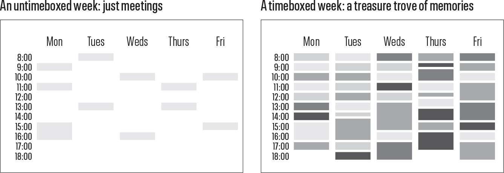
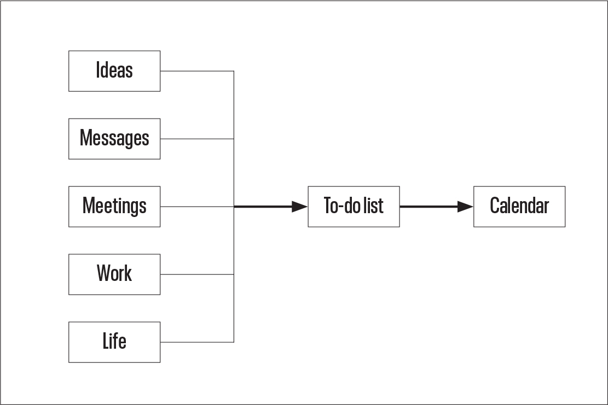
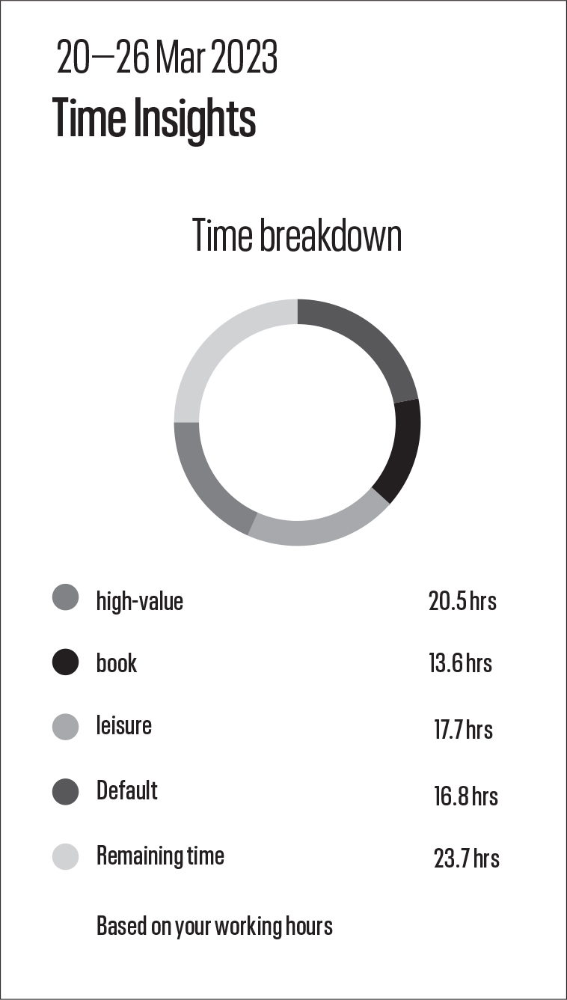
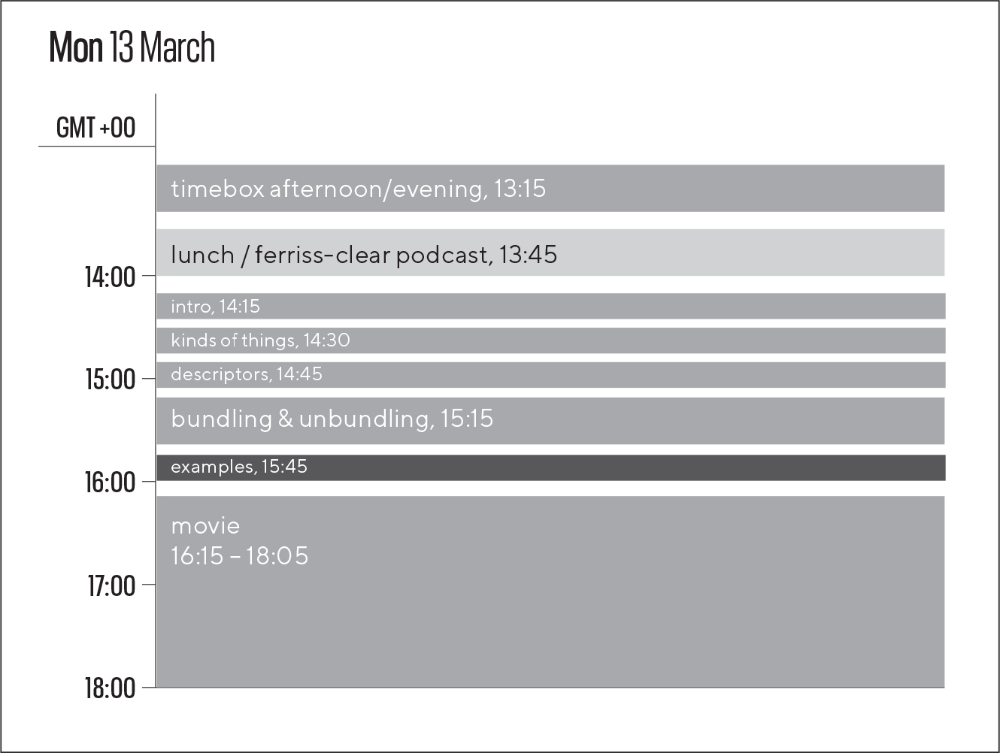
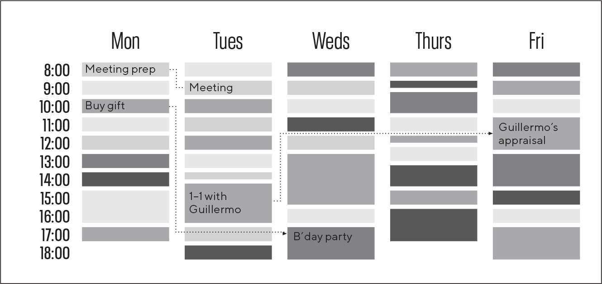
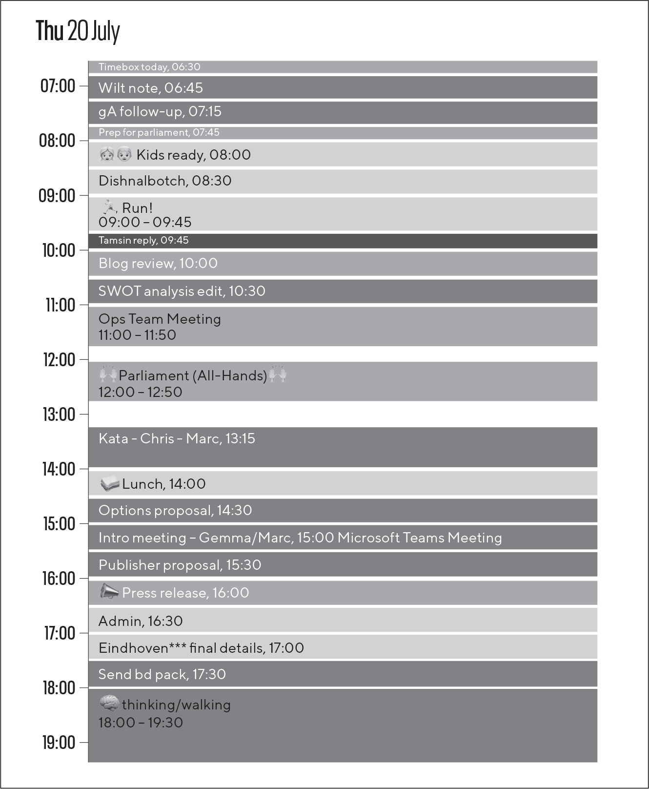
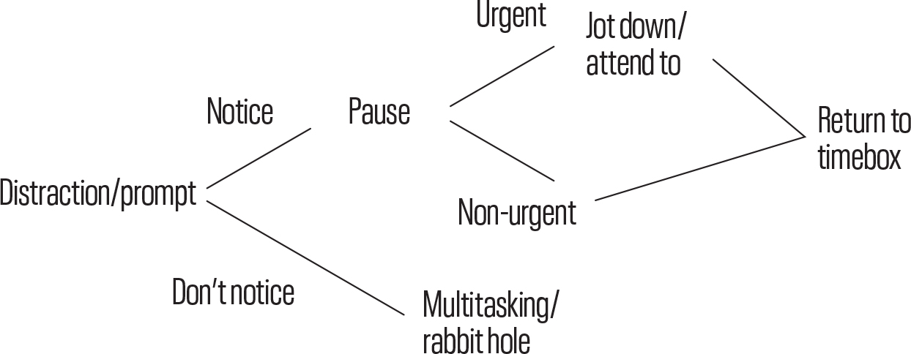
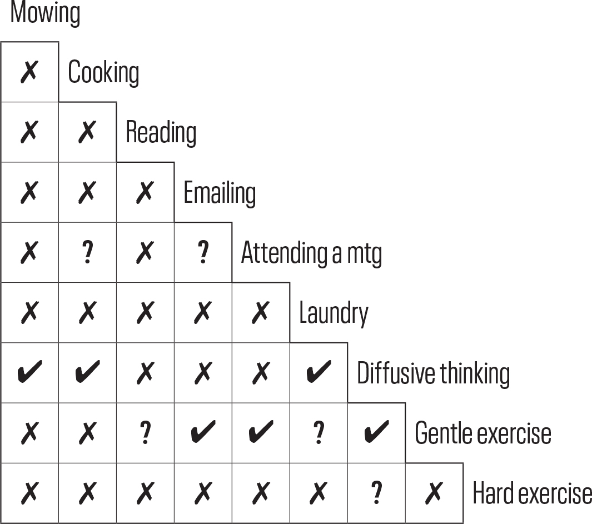
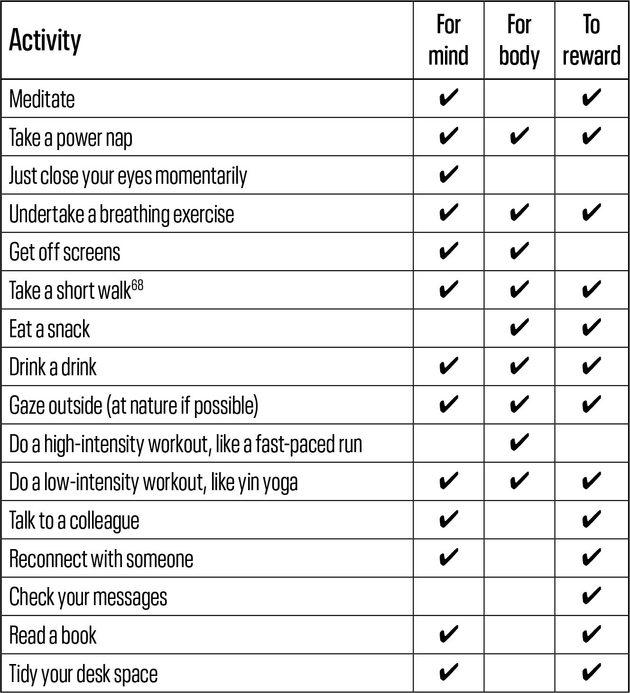
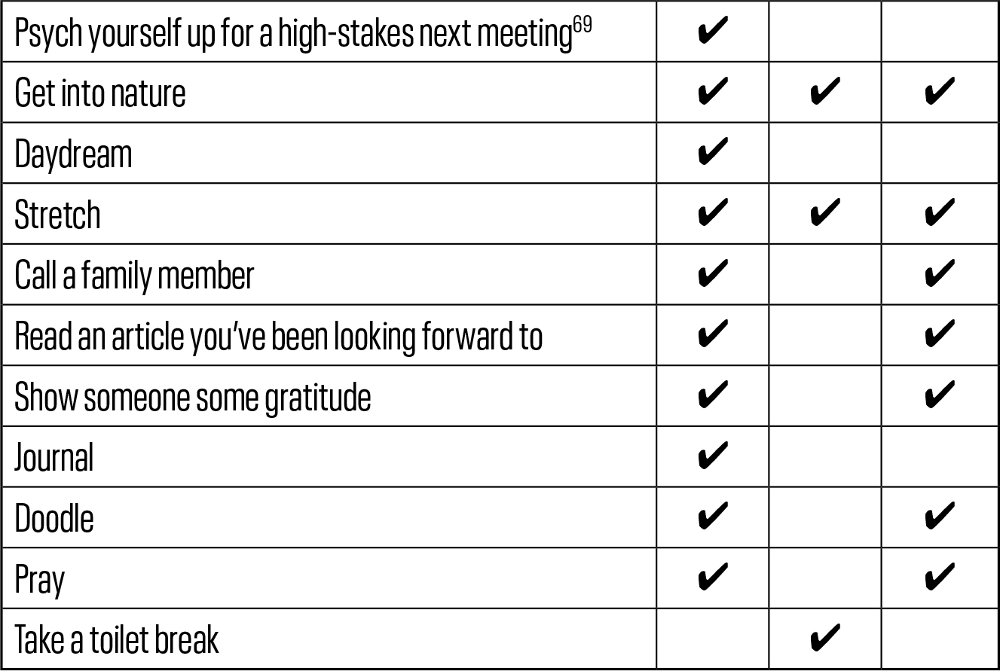

献给妈妈，为了她的一切。
关键词 意图；主动性；宁静；平静；自由；压倒；专注；正念；深度思考；心流；协作；规划；信任；待办清单；日历；完成；兔子洞；习惯；休息；睡眠；更高力量；一件事；简单 字数 45,142 阅读时间 226分钟 我们所要决定的就是如何利用
给予我们的时间。— 甘道夫
我们野蛮的工作和生活方式无法带来我们渴望的精心选择、珍视的生活。这本书讲述的是一个能够实现这一点的实践。这个实践叫做TimeBoxing。
我写这本书的原因
我在20多年前开始了我的职业生涯。那时，我完全无法掌控：我接受命令，回应那些喊得最大声的人。我有一个待办清单，但几乎不知道如何确定上面内容的优先级。我犯基本错误，让最紧迫的工作未完成，经常面临不满和指责。在痛苦了几个月后，我设计了一个简单的系统（我称之为每日工作计划）：从我的待办清单中选择优先事项，将它们粘贴到电子表格中，估算它们需要多长时间（以7.5分钟为单位，这样它们可以累积为一刻钟、半小时和整小时），完成后就勾选掉。
这要好得多。重要的事情得到了完成，我可以随时调整系统，我感觉更能掌控，感觉自己在取得成就（电子表格会计算我每天工作了多少有效小时），我有一个可搜索的数字化记录记录我的日常努力。
但它仍然远非完美。我必须强制让电子表格与现有承诺（如会议）相配合。同事们无法访问文件（这是2000年代初，在Dropbox和Google Drive出现之前），我当然无法邀请某人查看特定单个项目背后的详细信息。最重要的是，电子表格中的任务与一天中的时间没有关系，需要大量的操作和管理：在任何给定时刻，都不清楚我应该做什么；也不清楚我是否在正轨上或落后了。
大约10年前，我偶然读到Daniel Markovitz在《哈佛商业评论》上的一篇文章，建议将待办清单迁移到日历上会对生产力产生变革性影响。Markovitz认为，待办清单本身是压倒性的，难以确定优先级，缺乏上下文，不能让其拥有者对其承诺。共享日历解决了所有这些问题。这引起了共鸣。所以，在2014年初，我开始每天采用这种方法，并将其称为TimeBoxing。每天早上第一件事，我会花15分钟决定要做什么，做多长时间，并将所有这些记录到我的Google Calendar中。
这改变了一切。
我对一切都更加了解了。我知道自己在做什么，并且有信心这些都是应该专注的正确事情。我更善于预测什么时候能完成任务，因此能够有理由和信心地对新工作说是或说不。在不确定和不知所措的时刻，我在自己开发的座右铭中找到了避风港——“回到日历”，每当我需要的时候，它一直是光明的源泉。当我创办自己的企业时，我想成为一个透明和有帮助的CEO。Timeboxing 让我能够通过一个开放的、共享的记录来体现这两点，记录我所做的一切和正在做的一切，供团队中的任何人查看。
而且我越来越擅长它。当我回顾过去10年的日历条目时，我看到了我的 timeboxing 实践令人欣慰、感人、有教育意义的演变：工作日的空隙减少了；时间盒的大小变得更加规律；它们的名称变得更加有用和易于识别；我开始给时间盒进行颜色编码，这样我就能一眼看出我在生活的不同领域花了多少时间；当我看到这种系统化方法在工作之外也很有用时，我越来越多的非工作时间也被装入了时间盒。它真的改变了一切。
这种方法实质上影响了我在生活中大部分醒着时间里所做的事情、做事的时间和方式。它是不可或缺的。
五年过去了，我越来越被这种新的生活方式所吸引，我也希望其他人能从中受益。所以，我为《哈佛商业评论》(HBR)写了自己的文章。1 在此时我已经使用 timeboxing 几年了，我观察到了一些额外的好处，使它变得更加强大：一眼就能看到带有颜色编码依赖关系的项目；向其他人展示我在做什么以及什么时候做；保留我所做的一切的有用日志；保持和感受到控制；简单地更快地完成工作。那篇文章在 HBR 的最受欢迎列表上保持了几年。许多读者直接写信给我。大多数只是说这个想法引起了共鸣，他们会尝试一下。一些人说他们已经使用这种方法有一段时间了，很高兴发现它有一个名字。一位单身父亲告诉我，当生活似乎不可能时，它帮助他应对。Markovitz 本人也联系了我！很多人直接问我如何实施这种方法。
它不仅在那里流行起来。2022年，一位有进取心的TikTok创作者制作了一个视频2，宣扬这种方法的好处并介绍了我的文章。在几周内，它积累了一千万次观看。对视频的反应进一步证明了人们对 timeboxing 所提供的内容有很大兴趣。
我知道成千上万的高级管理人员已经雇用个人助理每天为他们进行 timeboxing，管理他们的日历并提高他们的产出水平、舒适度和幸福感。世界上许多最伟大的成就者——Carl Jung、Albert Einstein、Bill Gates 和 Mary Callahan Erdoes——也都采用了这种做法的某种版本。
看起来这个概念具有非常广泛的吸引力，从 Gen Z TikTok 用户到忙碌的父母到商业高管到世界上的一些领导者和偶像破坏者。
每个工作日的早晨，大约十亿知识工作者醒来，走向像素化屏幕，处理信息8小时或更长时间。工作是无穷无尽的。选择做什么工作是无穷无尽的。然后还有我们所有的非工作任务和责任——有它们自己的紧迫性和重要性水平——需要以某种方式并列和挤入。
因此，在任何时候，我们都面临着大量重要选择的海洋。这让我们在几个方面遭受痛苦。我们被如此多的始终在线选项弄得疲惫不堪，这削弱了我们做出正确决定的能力。3 我们对错过所有我们可能在社交媒体上突然出现的事情产生了恐惧。阴险的、看不见的算法决定了现代体验的大部分质量和性质，而当我们挣脱时，不合时宜的、未经请求的通知又把我们拉回来。我们未能为那些将引导我们到达真正渴望的东西的习惯和活动留出空间：自我发展、成功的事业、充实的关系、良好的健康——一个快乐、有意的生活。
因此，我们中的许多人比应该的更加困惑、迷惑、疲惫、焦虑或抑郁。这就是地球上最特权人群的状况。
作为回应，已经写了数千本关于生产力和时间管理的书籍和文章。每本都有自己的角度，经常与其他一些书籍相交：习惯、检查清单、专注、心流、能量、优先排序、用更少做更多的承诺、反拖延措施、心理健康和精神性。这些书中有几本提供了强大的方法并成为了畅销书：《深度工作》、《专不可挡》、《四千周》、《成功人士知道的时间管理15个秘密》、《吃掉那只青蛙！》和《原子习惯》，仅举几例。
然而，这些书都没有提供对 timeboxing 的持续和全面指导。例如，上述六本畅销书都承认这种做法并同意其有效性，但只用了几段或几页来介绍它。
所以，看起来有机会和责任将这种方法和心态带给更多的人。这本书将 timeboxing 揭示为根本的时间管理哲学，成熟且准备好帮助我们中被每天每小时的选择所压垮的数十亿人。
成熟且准备好帮助你。
让我猜猜。
你很忙。你经常感到不知所措。你每天很多时间都在数字化地生活，在屏幕前。你拥有并使用几台设备，将你束缚在这个数字世界中。你在醒来的几分钟内就拿起手机。你的手机在你睡觉时就在身边过夜充电。你的一天具有灵活性，可能在工作地点上有选择，在任何给定时刻要做什么工作上也可能有选择。你想发展技能，想学习，远远超过你实际做的。你经常发现自己同时在做几件事，通常不知道这是怎么发生的，对其中任何一件都没有好感。你发现很难跟上电子邮件和消息应用，经常留下未回复的消息。你读书没有你认为应该读的那么多。你把工作的烦恼带回家，把家庭的烦恼带到工作中。你经常感到压力。你见你爱的人远远没有你想要的那么多，而且当你真的见到他们时，你并没有完全投入其中。你尝试过几种生产力技巧，但没有一种有效果并且持续下去。你对工作与生活的平衡不满意。你很累。你怀疑社交媒体从你身上夺走的比给你的更多，但你仍然在滑动屏幕。
你希望你有更多时间。
也许你是：
• 一个与拖延症斗争并努力赶上截止日期的学生
• 一个兼顾多个客户、工作、寻找新工作、发展新技能、追讨发票的自由职业者
• 一个管理所有那些自由和所有那些选择的远程工作者
• 一个创作者，需要调和灵感和艺术表达与严格的截止日期和可交付成果
• 一个运动员、CrossFit练习者或私人教练，为自己和客户组织训练计划和饮食计划
• 一个平衡工作和家庭以及其他一切的父母
• 一个单亲父母，似乎独自战斗着千场战役
• 一个患有写作障碍的作家
• 一个试图在让一切起步的同时维持生计的企业家
• 一个退休人员，突然有了很多时间，但不太确定应该如何使用
• 一个客户经理，觉得没有给任何客户足够的关注
• 一个具有ADHD特征或正式诊断为ADHD的人，在专注和注意力方面有困难。
尽管我们每个人都有不同的背景、个性和神经生物学特征，但现代性的全球化、数字化和互联性配方在某种程度上限制并同质化了人类经验。我们过着大致相同的生活，以相似的方式承受痛苦。
我们都可以使用一些指导。我们都希望可靠地获得最好版本的自己。我们都想培养更好的习惯。我们都希望在当前的工作和生活方式基础上建设，而不是进行彻底的改变。我们都希望有一个简单的方法来实现这一切。
这就是为什么这本书是为你而写的。
来自世界各地的时间盒化(TimeBoxing)故事证明你并不孤单，事情可以很容易地变得更好。它们讲述了来自各大洲、各行各业的人们的故事，对他们来说，时间盒化一直是安慰、生产力，在许多情况下是快乐的源泉。他们的故事展示了时间盒化的广泛吸引力，我希望其中一些能与你产生共鸣。
本书包括四个部分：
• 第一部分——相信是关于培养时间盒化对你有意义、它有效果、它的好处改变生活的信念。
• 第二部分——计划帮助你选择和创建正确的时间盒，通常在你进行时间盒化的前一晚或当天早晨。它专注于决定接下来15小时的关键15分钟。
• 第三部分——执行是当你在时间盒本身中时，在实际工作、生活、经常不可预测的一天中。
• 第四部分——拥有鼓励你让时间盒化成为一个伴随你并为你适应的习惯，适用于你生活的每三分之一：工作、休闲和睡眠。这一部分旨在确保时间盒化在数年和数十年内为你工作，而不仅仅是几个月。
时间盒化既是一种心态也是一种方法。你需要认识到管理时间的重要性，认识到你可以改变你的行为，认识到时间盒化有许多好处。换句话说，培养积极的态度和对你所做事情的信念是让时间盒化（实际上，任何其他重要的行为改变）持续下去的关键部分。第一部分——相信将帮助你实现这样的心态。一旦你有了正确的心理框架，你就需要一个简单而清晰的解释，说明要做什么，要采取什么步骤。计划和执行将向你展示这样的方法。最后，在拥有部分，你的心态将从采用演变为迭代，方法将成为你自己的，因为你学会根据你精确且不断变化的要求定制时间盒化。
这本书的写作和设计都是实用导向的。章节简短易读：平均不到2000字，大多数人都能在10分钟内读完。即使在最忙碌的日程中，也很容易找到或挤出这样的零碎时间。而且连续完成章节会带来一种令人振奋的动力，不是吗？这本书有24章，你可能会觉得很有吸引力——只需要每天几分钟，就能在一个月内轻松读完。每一章都配有教学元数据，帮助你最大化收益。开头有关键词和引言，为即将到来的内容做准备和铺垫。结尾有两组要点，一组用于回顾总结，另一组鼓励你对材料内容进行个人反思。
阅读时使用时间盒(timebox)。如果你将理论与实践相结合，你将从这本书和时间盒方法中获得更多收益。起初，时间盒会不完美——太大、太小、太多或太少。你可能会感到不确定。但如果你边学边做，边做边学，你会很快获得信心，时间盒也会改进得更快。第14章——就是这一章专门讨论这个问题，但我鼓励你立即开始实验。你会更快注意到自己感到困难的地方，并能从文本中寻求帮助。你会沉浸其中。你不需要任何花哨的设备或他人帮助就能开始使用时间盒，第1章有一个快速入门指南。每章开头的字数统计和预计阅读时间让这本书的时间盒化变得更容易。你没有理由不这样做！你甚至可以选择——现在就——为阅读第一章设定时间盒，第一章只需不到2分钟就能读完。如果你对这个建议有抵触情绪…至少要注意到这一点，并问问自己为什么。
当你阅读并开始采用时间盒的思维模式和方法并应用它时，你会注意到一系列变化。你会感觉对工作更有控制力。你会普遍发展出更强的主动性。你会更擅长估算工作需要多长时间。对于”我现在应该做什么？“这个问题，你总是会有答案。你会花更少时间在无关紧要的空洞活动和有害的强迫行为上，因为你会更多地实现自己的意图——那些在你思路清晰冷静时制定的意图。你会把以前浪费的时间用在一两个重要的活动上——学习有用的语言、重新拾起久违的乐器、掌握久想获得的技能、整理荒芜的花园、修复被忽视的关系。你的周末和假期会变成你想要的样子。你可能会发现自己向家人、朋友甚至陌生人谈论时间盒。你会大大减少对自己时间选择的后悔。随着时间推移，短期收益会累积成肯定生活、终生受益的改变。
你会比我更快地达到时间盒的卓越水平。我通过试错发现的10年收益，你可以在不到一个月内获得。更好的是，你会发展出自己的版本，为你的环境和生活量身定制。
我经营着一家科技公司，4加上生活中的其他紧急事务，这既令人兴奋又持续消耗精力。时间盒让我能够很好地控制这一切。它帮助我选择要掌控什么，以及如何只掌控这些事情。在一天的混乱中和无数职责的召唤下，回到一次只做一件事这种状态中，有一种令人安心的平静——一种力量。
我相信这种方法是自然且易于掌握的，可以帮助你做得更多，感觉更好，过上你选择的生活。我希望时间盒能够成为对你的意义，就像它对我的意义一样：一个改变生活的终生指南，为匆忙混乱的生活带来急需的平静和生产力。
本书的第一部分是关于理解什么是时间盒，以及培养改变你决定做什么和何时做的信念和动机。你很快就会理解时间盒的许多巨大好处，并能够在你自己的生活背景下考虑这些好处。
人们手里拿着表思考，就像在读股市最新消息时吃午餐一样；人们生活得好像总是’可能会错过什么’。
——弗里德里希·尼采
| 关键词 | 定义；疲惫不堪；害怕错过(FOMO)；主动性；意图；方法；思维模式 |
|---|
Timeboxing经常与听起来相似的时间管理方法混淆：时间块管理、日程安排、日常规划、单任务处理、日历管理和时间表制定。
关于Timeboxing的分散、不一致、重叠的定义对于一本以此为主题的书来说是不够的！它们在集体上和个体上都不令人满意。我认为Timeboxing是一种方法和思维模式：
在一天的干扰出现之前选择要做什么；在日历中明确每项任务，包括何时开始和结束；一次专注于一件事；将每项任务做到可接受（而非完美）的标准。
这个定义包含了这种做法最重要的元素：意图性、专注、成就、秩序、完成以及时间盒本身的创建。它还提出了一个重要观点，即我们应该且仅在有能力这样做时才进行时间装箱。我们作为文明社会制定的所有规则（法律、编码约定、家庭政策）都是在一开始、在大脑冷静和深思熟虑的时刻（通常由精心任命的委员会）制定一套决策的例子，以帮助从长远来看让生活更顺畅。Timeboxing将这一原则应用于一种特殊和具体的情况：你。
虽然不完全是定义，但思考Timeboxing的另一种有用方式是将其视为待办事项清单和日历的综合。待办事项清单告诉我们要做什么。日历告诉我们何时做。这种组合比单独使用任何一种都更容易付诸行动和有用。
区分Timeboxing和时间块管理也很重要。时间块管理是阻断时间来做某事。Timeboxing是时间块管理+承诺在时间内完成任务，在盒子内。换句话说，时间块管理是关于专注；Timeboxing是专注+指定结果。
问题在于我们没有很好地利用时间。我们拖延。我们的成就少于应有的。即使在空闲时间，我们也感觉不到自由。我们过度承诺。我们感到焦虑。我们大多数人都表现出引言中列出的许多特征。
我们今天在很好地利用时间方面遇到困难，特别是因为：
• 知识工作永无止境。
• 我们不断面临许多选择。这种选择带来了选择好的令人不快的压力。我们必须选择的大部分内容都是垃圾；选择的丰富源于垃圾的丰富。
• 我们已经产生了对错失的恐惧(FOMO)，这源于对其他地方正在发生的事情的高度意识，主要由社交媒体feed提供。
• 控制权被让渡给算法和其他人。我们已经失去了很多自由和能动性。
• 我们在这里的时间不长——正如Oliver Burkeman所说，只有四千周。对于某些特殊的、有限的机会，我们拥有的时间更少，比如与祖父母、孙子女、亲爱的老父母、最好的朋友在一起的时间。
但在给定时刻我们应该做什么的问题是永恒的。哲学一直在努力解决这个问题，从柏拉图的伦理学到康德的假言命令到存在主义者思考在这里存在的目的，以及我们在这里时应该做什么。这个问题也渗透到小说中——考虑加缪的默尔索（局外人）、George Cockcroft的骰子人或贝克特在等待戈多中的迪迪和果果的困境和行为。
有一个简单而令人信服的逻辑，即我们的生活是我们经历的累积总和，作为拥有自由意志的聪明物种，我们在很大程度上可以选择这些经历。选择得好就过好生活。选择得不好，就不会。问题是我们经常选择得不好。问题是我们没有过上应有的好生活。
Timeboxing的一些特征展示了其作为思维模式和方法的内在优势。
明确一点，功能是该方法的特征——它是什么。另一方面，收益是该方法改善你生活的方式。用商业术语来说：功能告诉，收益销售。本章讨论TimeBoxing的功能，而本书这一部分的其余部分重点关注它有效的证据（见第2章——它有效）和它为其信徒带来的收益（见第3-8章）。
TimeBoxing是合乎逻辑的。我们系统性地决定生活中最重要的方面，对它们进行优先排序并给予应有的关注。在此过程中，我们确保我们的一系列体验，我们对时间的使用，得到系统性的优化，一小时一小时，一天一天。对我们这些这样做的人来说，问题是：怎么能不进行TimeBoxing呢？
TimeBoxing是自然的。具体来说，它是我们已经在做的事情的自然延伸。我们工作生活的大约一半（会议、通勤、协作工作会议）和一些闲暇时间（驾驶课程、电影放映、按摩、餐厅预订）都是预先安排好的，有开始和结束时间。假设你的工作日大约有4小时，休闲时间有2小时已经预先安排好了——总共6小时。TimeBoxing只是这种做法的延伸，因此应该感觉很自然。这种做法涉及查看你醒着的其余时间（按照给出的例子，大约还有10小时），并鼓励你决定如何更好地度过其中的一些时间。如果你把这个习惯看作是从6小时的基线提升到8、10或12小时的TimeBoxing时间，而不是从零开始，那么这个习惯就不会那么令人望而生畏。既然你已经在进行TimeBoxing，你可以使用现有的系统和流程，在整本书的过程中，我们将审查并努力改进这些。所有这些都是为了说明，与许多其他自助方法不同，TimeBoxing不是一种异质的做法——不需要强行进入一个已经塞满了固定方式和既定行为的生活。
TimeBoxing是可行的。在日历上添加一个项目，设置适当的持续时间，你就可以开始了。这里的方法是采用最有效的单一方法，完全专注于此，让你完全沉浸其中——尽可能通过实践学习——以便你掌握它并使其成为你自己的。
TimeBoxing是互补的。有许多时间管理方法。TimeBoxing不仅与它们一致，还能够支持所有这些方法。如果你采用了艾森豪威尔矩阵(Eisenhower’s Matrix)（将任务分类为重要与紧急的2×2矩阵），你会将最重要、最紧急的项目尽早放入你的TimeBoxing日历中。如果你相信吃青蛙（在一天的开始完成最困难的工作），你可以在日历的前面放置这些青蛙。如果你认为应该优先考虑岩石而不是小石子和沙子（较小的任务应该围绕较大的任务安排），那么相应地插入它们，最大的优先。如果你订阅80/20法则（80%的结果来自20%的原因），你将努力识别关键少数并将它们优先于琐碎多数放入日历。如果你是一个分块者，尽情分块，并对块进行TimeBoxing。如果你认为能量水平是个人生产力的主要驱动因素，那么选择在一天中适合的时间进行创造性工作、管理任务、用餐、锻炼和休息。如果营养是你个人生产力计划的一部分，TimeBoxing将在你需要时提醒你所需的零食或饮料。TimeBoxing是任何和所有其他时间管理技术的灵活朋友——统治所有技术的一个习惯。（但请注意，这些技术中的许多彼此冲突：如果你的能量水平要求你在一天后期处理较大的任务怎么办？如果按难度排序的任务与按大小或重要性排序不完全一致——当然，这经常不会——怎么办？）
TimeBoxing相对未被发现。大众在线搜索’timeboxing’的频率远低于其他技术。例如，’艾森豪威尔矩阵(Eisenhower Matrix)’和’番茄工作法(Pomodoro Technique)’这些术语的搜索量都比’timeboxing’多很多倍。目前，你将成为相对较少且特殊的TimeBoxing少数群体中的一员。看到并享受这些好处的追随者群体正在稳步增长。这不是那种必须被关键少数保密才能保持其价值的博弈论秘密；TimeBoxing是一股涨潮托起所有船只的力量。事实上，进行TimeBoxing的人越多，集体同步和协作和谐就越大（见第6章——协作）。
如果你在阅读后续页面和章节时积极实践TimeBoxing，你会受益更多。我无法将所有的好处、细微差别、原因和微妙秘密都挤进第一章，但这里是除了定义之外的基本要素，供你从明天甚至今天开始熟悉和实验。
你需要正确的心态。你需要积极的态度和相信这可能有效的信念。你手中有这本书并且读到这里，这表明你在这方面状态良好。要知道第一部分的其余章节提供了更多关于TimeBoxing广泛好处的证据。
关于方法，TimeBoxing包含两个相互关联的活动——规划和执行——分别对应本书的第二部分和第三部分。以下是每个部分需要做的事情。
• 留出一段时间（15或30分钟），在一天的忙碌开始之前、在思维混乱和判断力受损之前，决定什么是最重要的、需要完成的事情。
• 在每天早上第一件事（或前一晚最后一件事）为这个规划时间设置日历提醒（最好是数字日历）。设置为重复提醒，这样你就不会错过。
• 回顾你的待办事项清单。如果你没有，现在就开始！待办事项清单为TimeBoxing提供素材；待办事项清单越好，TimeBoxing效果越好。
• 从清单中选择一些最重要和紧急的事项，并将它们添加到你的日历中。尽可能准确地估算每项任务需要多长时间。暂时不用担心顺序——先把它们安排进去。
• 开始行动，犯错误并快速学习。一开始，你经常会低估或高估任务所需时间——这是正常的。
• 按时开始。
• 消除干扰，其中最危险的就是你的智能手机。
• 坚持计划。不要质疑自己，不要破坏之前的决定。除非紧急情况，你在规划过程中冷静清醒时的想法，要比在一天的忙乱中反应性思考的想法更好。
• 按时完成。完成工作。不要让完美成为良好的敌人。良好通常就足够了。
• 完成每个时间盒后，努力分享你所做的工作。这会带来有用的压力，促使你完成任务并让它足够好到可以分享——你会发现这是一个重要的标准。
• 你会分心和偏离轨道。预期这种情况。当这种情况发生时，练习回到时间盒（回到日历），回到你原来的任务。随着经验的积累，你的分心会变得更少、持续时间更短。
你正在阅读的这个主题——TimeBoxing——非常适合边学边实践。每天早上醒来，你都有一个全新的机会来尝试你学到的东西，调整它，实验它，质疑它，让它成为你自己的方法。不要错过这个机会！为了轻松入门，你可能想尝试隔天进行TimeBoxing（比如周一——周三——周五或周二和周四）。这种安排让你能够对比有TimeBoxing和没有TimeBoxing的生活。我相信你很快就会有冲动开始对非TimeBoxing的日子也进行TimeBoxing。
现在，你应该清楚了什么是TimeBoxing以及它开箱即用的功能。你也得到了多次强烈的鼓励，要边学边实践TimeBoxing。
在接下来的几章中，我们将看到它有效的证据，以及它将为你带来的一些好处。我希望并期待TimeBoxing固有的优势和广泛的益处能够说服你，这是一个非常特殊的方法。它不仅仅是另一个生产力技巧。它甚至不仅仅是最好的时间管理技术之一。它是有史以来最伟大的时间管理方法，是GOAT（最伟大的）。它甚至可能是你生活的最佳方式。
• TimeBoxing解决的问题是我们没有好好利用时间。
• TimeBoxing是以下实践：
• 在一天的干扰出现之前选择要做什么
• 在日历中具体说明每项任务，包括何时开始和结束
• 一次专注于一件事
• 将每件事做到可接受（而非完美）的标准。
• 从某种意义上说，TimeBoxing是待办事项清单和日历的结合。
• 如果你在阅读时进行实验，你将能够更快地采用这种心态和方法，并从本书中获得更多收获。
• 在你决定阅读本书之前，你认为TimeBoxing是什么？
• 选择你的其他个人生产力方法之一。你将如何让它与TimeBoxing一起工作？
• 你认为昨天16个清醒小时中，有多少时间是好好利用的？
• 以下是十种最受欢迎的时间管理技术和技巧列表。TimeBoxing在某种程度上涉及所有十种，并与其中八种深度交织。是哪八种？
• 优先排序任务
• 创建待办事项清单
• 使用日历
• 设定截止日期
• 安排休息时间
• 委派任务
• 消除干扰
• 跟踪你的时间
• 分解大任务
• 利用技术。
在获得所有证据之前就进行理论化是一个重大错误。这会使判断产生偏见。
—— 夏洛克·福尔摩斯
| # 关键词 | # 信任；可信度；证据；科学；证明；信念；意图；目标；实施意图；承诺 |
|---|---|
| # 字数 | # 2,154 |
| # 阅读时间 | # 11分钟 |
TimeBoxing有效。我相信它，因为我看到它对我和许多其他人都有效果。如前所述，你也需要相信它，这样才会被激励去尝试它，然后将其融入你的生活中。所以，让我们用一章的篇幅和不到10分钟的时间来审视证据，看看是否能说服你。
大多数时间管理技巧基于直觉性的猜测，而非硬科学。TimeBoxing则两者兼备。几篇科学论文（主要由Peter Gollwitzer在1990年代领导）表明，提前正式设定意图能显著提高实现目标的可能性。
Gollwitzer引入了实施意图的概念，即”当情况X出现时，我将执行反应Y”形式的承诺。它们比更宏大的目标意图概念（“我打算实现X”）更细致和具体，构成了通向最终目标的里程碑。实施意图也更实用和有用，明确了需要完成什么，以及何时何地完成。
TimeBoxing是一种实施意图。当你正确地进行TimeBoxing时，什么、何时和何地都由你指定。一个经过计划的TimeBox——如果是仔细、有意识地制定，而非在胁迫下制定——将确保其完成有助于实现一个有价值的目标。所以，当我们考虑后者的科学证据时，我将TimeBoxing与实施意图的概念联系在一起。一个TimeBoxed数字日历为我们现代知识工作者提供了恰当的数字刺激（日历，在多个设备间同步），以实现我们的目标。
那么，实施意图的证据看起来如何？非常好。多项独立研究（在Gollwitzer论文中引用）表明，包含实施意图能显著改善结果：
• 在一项研究中，一组大学生被询问他们在假期期间要完成的项目。对于困难项目，67%形成实施意图的参与者获得了成功，而没有这样做的参与者只有25%成功。
• 在另一项学生研究中，参与者被要求写一份关于他们如何度过平安夜的报告。一半被告知要在问卷上说明他们打算在48小时内何时何地写这份报告（换句话说，进行TimeBox），另一半则没有这个指示。75%被要求进行TimeBox的人提交了报告，而没有接到指示的人只有33%提交。这表明仅仅要求某人进行TimeBox就有巨大效果。完整TimeBoxing——我们自己选择和规划TimeBox——的效果必定更大。
• 在完全不同的领域，一项研究考察了设定目标在下个月进行乳房自我检查(BSE)的女性。在设定实施意图的参与者中，100%完成了BSE，而没有设定意图的参与者只有53%。
• 在关键人群中也发现了类似令人印象深刻的结果——包括戒毒期间的吸毒者、精神分裂症患者和额叶损伤患者——他们通过设定实施意图在康复率方面显示出显著改善。
• 2023年一项研究5得出结论，执行意图在减少脆弱人群自残行为方面是有效的。因此，执行意图代表了在特定关键情况下减少自残的有用干预措施。
这些研究不仅证实了Timeboxing的有效性，还量化了其提升效果：如果我们设定执行意图和实现时间，我们的生产力大约会提高2.5倍。很少有其他时间管理技术得到多个独立科学证据线索的支持。
我在前一章中提到，我们大多数人都已经在某种程度上使用Timeboxing了，因为我们维护着一个预约日程表。正如我们在第1章中看到的，这意味着这种做法对我们来说感觉很自然。这也说明Timeboxing是有效的。我们自己安排有开始和结束时间的会议，别人也邀请我们参加他们的会议。我们中的许多人也为自己的任务分配时间：我们戴上耳机、去散步或带着笔记本电脑到其他环境中去完成某些事情。
因此，虽然我们可能没有有意识地、大量地或最优化地使用Timeboxing，但我们都毫无疑问地朝着这个方向前进。没有选择退出的可能性，因为选择在特定时间以特定方式行动，通常与他人协调，是人类在工作和生活中如此基本的做法。如果没有效果，我们不会都这样做。它确实有效。但是真正有意识地使用它，才是自我掌控和内心平静的关键。
此外，还有一整个行业建立在为他人提供Timeboxing服务上。每天，数十万6（如果不是数百万）的人工助理为他们忙碌的经理们执行任务。所有执行助理角色的核心是：组织和维护日历、安排约会和为会议准备经理。也就是Timeboxing。在知识工作席卷世界的几十年里，这种方式的协助一直是商业中的常见做法。数十万人（现在还有人工智能代理）为他们的重要老板们执行这些有价值的职责，如果这实际上不是一项有价值的活动，这甚至可以想象吗？
正如我们在介绍中看到的，许多生产力大师都指向Timeboxing，而几位最杰出的生产力专家都悄悄地倡导这种方法（尽管他们使用不同的名称）。
在过去几年中，大科技公司发现并抓住了这一趋势。谷歌通过其时间洞察功能，向用户展示他们究竟如何度过时间。类似地，微软的Viva Insights为用户提供工作日时间分配的多个视角，旨在提高生产力和改善健康状况。这些科技巨头并不孤单；几个较小的平台和初创公司已经意识到并正在利用这个机会（更多内容见第23章——工具与技术）。
在我的公司Filtered进行的一项生产力建议荟萃研究7中，Timeboxing在专家推荐的生产力技术中名列榜首：
1 Timeboxing
2 优先排序
3 说不
4 运动！
5 控制你的设备
6 短暂休息
7 待办清单
8 良好饮食
9 2分钟规则
10 控制社交媒体
11 选择何时查看邮件
12 整理工作空间
13 早点开始
14 呼吸
15 关闭提醒
16 更短的会议
17 网站拦截器
18 生产力工具
19 提前规划
20 单任务处理
21 声音与音乐
22 写下来
23 分解任务
24 80/20法则
25 忠于自己
请注意，清单上的许多项目都涉及TimeBoxing并被TimeBoxing所涉及。你能发现多少个？
我愿意为此作证。我已经进行TimeBoxing 10年了，从完全没有好方法开始，经历了待办事项清单、每日工作计划，最终，最愉快地，发展到TimeBoxing。
那是10年的密集练习。平均而言，我每个工作日创建15个时间盒，周末创建5个。这个数字加起来：我已经制作了44,000个时间盒，即做出了44,000个决定，认为某个特定任务/工作/活动适合某个特定时期，而且对于绝大多数，我都完成了它们。这是大量的练习和经验，足以确定它是否对我有效。确实有效。换句话说，我以前对即将到来的一天感到不那么确定；它是会发生在我身上的事情。现在，多亏了TimeBoxing，更像是我让即将到来的一天——以及每一天——发生。这种积极的感觉在回顾时也有效：在我进行TimeBoxing的时期之后，我感到快乐，既为任务的完成，也为计划的成功实施而满足。
当我进行TimeBoxing时，我经常同时实施其他一些生产力方法。我维护一个活跃的待办事项清单（我反对那些持续流传的”杀死待办事项清单”的呼吁——在第10章中会详细讨论）。我观察自己的能量水平，并认识到，特别是对于创造性或智力挑战性的任务，我在一天的早期更有生产力。自从我听说它们以来，我一直受到80/20法则（也称为帕累托原理，即大多数效果来自一小部分原因——比如说，20%的作者创造了80%的图书销售额）和帕金森定律（工作会扩展以填满为其完成分配的时间——如果你给自己2小时来写一个简短的段落，你会用完所有时间）的影响。所有这些方法与TimeBoxing如此完美地配合这一事实加强了我继续下去的决心。
有些人认为我高度有组织性，甚至令人不安地有组织性（在瞥见我连续不断、盒接盒的TimeBoxing日程后，痛苦的表情随之而来，然后是难以置信的问题：“你的生活怎么能这样？”）。这可能是真的，但令人不安地有组织性的人并非天生如此。他们发展并磨练了适合自己的自我管理系统。很多时候——而且比你想象的更多，或者他们可能知道的更多——那个系统就是TimeBoxing。
在过去的十年中，我与许多同事、客户、朋友，甚至陌生人讨论过TimeBoxing。虽然明显投入于这种做法，但我认为我仍然愿意听取有说服力的反对意见。我没有听到过。在我看来，最有说服力的反对意见是，有些情况不太适合TimeBoxing。这一点我承认并接受（在第24章——它有效中）。对我个人而言，TimeBoxing经受住了时间的考验。
最近，我写了这本书。当出版商找到我时，我已经很忙了，有全职的家庭和繁忙的生意。将另一个重大项目融入我的生活的唯一方法是进行TimeBoxing，甚至比以前更加审慎和巧妙。事实上，这些页面中写出的一些细节是在写作过程中磨练出来的——又一个在讲述中成长的故事。
我希望你正在被说服。只有当你开始在自己的日程表中填入你的事件/实施意图/TimeBoxing时，才能获得完全的信服。开篇的这两章描述了我们面临的问题、TimeBoxing提供的解决方案以及它有效的证据。在接下来的六章中，我们将涵盖这种方法最重要的好处，以过去—现在—未来的框架来呈现。
• TimeBoxing有效的证据来自多个来源。
• TimeBoxing是实施意图的一种形式（当情况X出现时，我将执行反应Y），这是一种有充分科学证据支持的方法。
• 我们所有人都已经在某种程度上使用TimeBoxing。
• 许多拥有不同议程的领先生产力专家都同意TimeBoxing是有效的。
• 回想一个你被证据说服并在重要问题上改变想法的情况。是什么说服了你？
• 现在制定一个实施意图。
• 本章中提到了TimeBoxing有效的证据类型。哪一种对你最有说服力？为什么？
认知心理学告诉我们，未经辅助的人类大脑容易受到许多谬误和错觉的影响，因为它依赖于对生动轶事的记忆，而不是系统性的统计数据。
— Steven Pinker
|==============================================================================|======================================================================================================================================================================================================================================| | # 字数 | # 1,304 | | # 阅读时间 | # 7分钟 |
TimeBoxing的第一个好处关乎过去——你的过去。
自从互联网出现以来，我们以搜索历史和社交媒体发帖的形式记录了我们的日常生活。不幸的是，这种记录的主要受益者是大型科技公司（Alphabet [Google]、Amazon、Apple、Meta [Facebook] 和 Microsoft），而不是你。TimeBoxing终于让你能够创建一个对你个人极有用途的记录。
一个TimeBoxing的日程表是你一天中大部分，甚至可能是绝大部分时间所做事情的日志。借用林肯葛底斯堡演说的话，这是属于你的，由你创建的，为你服务的。这些信息在几个方面对你来说都是无价的。
你上周二下午在做什么？你上次和那个不常见面的老同学说话是什么时候？你的每周团队会议开了多长时间？你上次见那个有希望的销售潜在客户是多久以前？
我们忘记自己所做事情的速度之快令人震惊。我们中的许多人都很难记住今天早些时候做了什么，更不用说昨天或上周了。这可能是因为我们的生活中塞进了太多东西，以至于有太多内容需要回忆，而剩余的心理能力太少无法回忆起来。
好吧，TimeBoxing为此提供了答案。它是一个可搜索的日志，记录了你选择记录的大部分活动。对我来说，我能够检索到过去十年中我清醒生活的绝大部分信息。有时这会是一个特定的信息片段（一个名字、一个电话号码、一个我做了还是没做的问题？），有时相关的timebox会唤起关于过去事件或活动的一大堆更丰富的回忆。无论哪种方式，一个可供随时参考的TimeBoxing日志都有实际用途。
这些信息在你处于防御模式时可能非常宝贵。假设工作中出现了困难情况，你需要能够证明自己做了什么以及什么时候做的。一个包含所有相关条目的时间盒日历能让你毫无疑问、毫不延迟地回应。
记录也有助于我们管理健康。知道你什么时候跌倒、什么时候开始服药或最后一次看专科医生的时间，在某些情况下可能是救命稻草，或者至少是健康促进剂。在日历中标记这些事件、意外和预约是值得的。
但更常见和可能的是，时间盒日志会带来积极的回报。这里有一个例子。你即将与一个很长时间没见的人开会。你怀疑自己有一些来自上次与他们会面的有用手写笔记，但你找不到这些笔记，因为你记不起那次会议是什么时候举行的。好吧，时间盒日历让你能够通过简单的姓名或邮件搜索找到那次会议的时间，从而定位和找出你笔记中的条目。

你可以轻松进一步增强你的搜索能力。如果你在时间盒的标题和描述中使用的术语保持一致（甚至可以遵循话题标签惯例），在日历中进行简单搜索就能告诉你何时以及多频繁地参与了#销售、#家庭、#冥想、#一对一会议等活动。更多内容在第11章 — 盒子制作中。
TimeBoxing提供了你所做事情的记录 — 你的成就。这可以激励你完成更多事情。有些人喜欢在完成日历条目时添加一个表情符号勾选标记()。这能给人的多巴胺冲击感觉很有回报，并激励我们再次这样做。这是如此积极的体验，以至于事后创建时间盒（上午9:00到9:30我做了这个，上午10:00到11:00我做了那个，等等）通常是值得的（当然，这也有助于可搜索的日志）。几位生产力专家推崇维护”完成清单”的好处。好吧，timeboxing也满足了这一点。通过保持记录并因此测量我们的成就，我们在当下获得即时回报，获得激励我们再次这样做的多巴胺冲击（当然，这是除了执行任务带来的更大、更长期的好处之外）。
一些强硬timeboxing者的口号是，“如果不在日历中，就不存在”，即除非是时间盒化的，给定的活动在未来很不可能被实现。我发现这种特定的措辞令人反感，但也相当有说服力。这个逻辑在时间倒推时也很有说服力：如果一个事件没有被记录（例如在数字日历中），它真的发生过吗？无论你的哲学倾向如何，既没有被记录也没有被记住的事件，以任何对任何人有用的方式都不存在或没有发生。
另一个激励性的观点是，记录良好的生活可能感觉更好。除其他人外，物理学家和哲学家Sean Carroll论证说，我们积累的记忆越多，时间似乎流逝得越多。一个充满记忆（不仅仅是活动）的生活，对我们来说可能感觉像是一场更充实、更丰富、更有价值的冒险。
时间盒日历可以帮助我们反思自己是如何生活的。它可以帮助我们回答潜在重要的反思性问题，例如：
• 在我做出那个重大决定的那天，我还在想什么？
• 我工作是否过于努力？
• 我在生活的XYZ方面花费了足够的时间吗？
• 什么好习惯或坏习惯在重复出现并需要解决？
• 我如何以及多频繁地放纵自己？
• 最近我最自豪的时刻有哪些？
• 我是否给予伴侣足够的关注？
你可能永远不会比在每年填写过去12个月所有成就的绩效评估那天更喜爱你的时间盒。在相关盒子中包含话题标签#review（比如说）的简单行为将使你的生活变得无比容易，并防止你忘记重要的成就。
当然，作为时间盒记录在日历中的大部分材料都会是平凡的（所以，考虑如何让它变得生动：给未来自己的笔记、笑话、引人入胜的标题等等）。但平凡中也有价值；正如小说家Ian McEwan所说，“许多年过去后，平凡的事物开始闪闪发光。”
你可能已经保持其他书面记录。日记、子弹日记、笔记甚至电子邮件都以其方式记录活动。但timeboxing特别经济。创建一个基本的、可操作的时间盒只需要几秒钟。它不仅快速，而且容易，因为我们几乎所有人都已经在使用数字日历。
个人记录你做了什么以及何时做的是有用的和基础的，可以提供关于自己和他人的见解。它是私人的和亲密的，所以为自己保留。
• TimeBoxing创建了你所做事情的可搜索日志。
• 它可以用来
• 检索信息并唤起你的记忆
• 获得认可并激励你坚持下去
• 让你反思和成长。
• 从本章的七个自我发展问题中选择一个对你特别相关的。看看能否发现关于自己的新真相。
• 你在工作中是否遇到过希望能更好地回忆起某一天发生了什么事情的情况？
• 你昨天这个时候在做什么？闭上眼睛，试着不借助任何帮助回忆一下。注意当你试图提取这个具体信息时，你的大脑会涌现出什么。
• 你上周这个时候在做什么？再次闭上眼睛，试着不借助任何帮助回忆一下。同样，注意当你试图提取这个具体信息时，你的大脑会涌现出什么。
我是自己的庇护所，在我的人生中可以选择重生无数次。
— Lady Gaga
| 关键词 | 压力；忧虑；不堪重负；痛苦；能动性；控制；满足感；幸福；启发；解脱；平静；庇护所 |
|---|---|
| 字数 | 1,384 |
| 阅读时间 | 7分钟 |
TimeBoxing可以让你感到压力更小、更有控制感。它可以解放你。对我来说，TimeBoxing的主要好处在于本章内容：我发现最实质性的收获是心理健康方面的提升，甚至超过了生产力的提升。本章讲述的是TimeBoxing在情感和心理方面的优势。
我们都同意现代知识工作者感到焦虑和不堪重负。统计数据也证实了这一点：据估计，15%的成年劳动者患有心理疾病；全球每年因抑郁和焦虑损失120亿个工作日，造成1万亿美元的生产力损失。
通过引导我们所有人在任何给定时间专注于单一活动，在一天的混乱和我们可能做的其他千件事情中，TimeBoxing让我们保持专注和集中。当干扰增多时——这在接收通信时尤其明显——你的TimeBoxing日程表可以成为寻找慰藉的避难所，让你确信自己优先考虑的事情就是应该做的事情，而且在那段时间内只应该做这件事。
你是完美主义者吗？拖延症患者？取悦他人的人？多任务处理者？还是忧虑者？也许你在不同时候会闪现出这些人格特质中的几种。几乎每个人都如此。我也是。现代性，伴随着其技术的浩瀚和永久的互联互通，激发了这些特征和倾向。不幸的是，所有这些倾向都会导致痛苦。幸运的是，TimeBoxing引导我们走向别处。
在追求完美的过程中，完美主义者不断地修正和迭代，永远无法满足于当前的任务状态。因此错过截止日期并要求延期。通过严格评价自己的工作并感知他人类似的评价，他们很少感到满意。Timeboxing可以通过时间盒的轮廓划定界限来拯救完美主义者，坚持在某个时间点，某些东西必须被交付、发送、分享、发布（参见第17章—发布一些东西）。
拖延者将任务推迟到最后一刻，尽管知道这样做可能会带来负面后果。这通常导致更低质量的输出。这也与抑郁、焦虑和低自尊相关。8 Timeboxing可以帮助至少那些轻度拖延者启动他们的生产力，在预先承诺的时间更早开始工作。动机科学专家Piers Steel博士倡导做出预先承诺和控制环境——Timeboxing的两个关键组成部分——来帮助打破拖延者的诅咒。
讨好型人格会过度承诺来迎合某人（朋友、同事、家庭成员，甚至陌生人）的一时需求。但不久之后，他们会承受扩大的、不现实的工作量。很快他们就会遇到同事的不满和失望。Timeboxing可以通过提供关于实际可用时间的确切数据，帮助讨好型人格在合适的时间以适当的理由说不。实际上，如果日历已经共享（且繁忙），它甚至可能预先阻止请求的提出。
多任务处理者试图通过同时做多件事来完成更多工作。但他们很少能做到。多任务处理不仅与绩效负相关，9 而且研究还表明它让人们感觉更不积极。这种情况经常发生：我们在找钥匙时一本曾经想读的书劫持了我们的注意力；我们在给某人发邮件时另一封令人烦恼的邮件吸引了我们的眼球；我们在给孩子读《纳尼亚传奇》时智能手机通知把我们从那个世界中拉了出来。反多任务处理措施（如批量处理邮件——专门用于处理收件箱的时段）已被证明能够改善幸福感。10 Timeboxing作为一种单任务方法，是避免这种坏习惯的好方法。关于多任务处理的细微差别，请参见第18章。
忧虑者担心并因此痛苦，这是定义使然。即使忧虑者是有生产力的——他们通常是——对心理健康也有许多复杂的负面下游影响，无论是在职业还是社交方面。Timeboxing在这里不是万能药，但一些有这种困扰的人发现安排特定的专门担忧时间是有帮助的。11 留出一段时间来思考问题，你可能会发现这种分区让你在那个时间前后能够继续处理生活的其他部分。当我们感到沮丧时，Timeboxing也是朝着积极方向迈出小而单一步骤的完全实用的手段。
能动性是对自己行动及其后果的控制感。大量古代和现代智慧都围绕着专注于我们能控制的事情，而不是试图施加更广泛的影响并在失败时感到失望。Timeboxing是应用这一指导的实用手段。
作为一种感觉，能动性很难量化和校准。但并非不可能。一项对来自33个欧洲国家36,000人的研究得出结论：“选择和机会增强的社会条件以及个人感知的自主性都与生活满意度正相关。”12 这是有道理的。我们的物种基于适者生存的进化，被编程为想要控制环境，以求生存和繁荣。这在直觉上也说得通：当我感到有控制力时，我感觉更快乐；当我没有控制力时，我就不那么快乐。正如Jeff Bezos所说：“压力主要来自于不对你可以控制的事情采取行动。”13 增强的能动性增加了我们的幸福感，我们有义务寻求它。
Timeboxing让你摆脱他人的议程，进入并专注于自己的议程。你的收件箱是其他人决定放在你盘子里的请求和信息清单。你被邀请参加的会议是为了讨论他人的想法、愿望和计划。你每天收到的数十个通知是来自外部代理（无论是人还是自动化）的入侵。这些都不是你的议程。其中一些可能与你的议程重合。但它们不是通过设计有意这样制作的。只有你能开辟自己的道路，而Timeboxing是实现这一目标最有效的手段。你希望你的遗产是你在他人的召唤下生活吗？好吧，如果你选择在自己选择的时间做对你重要的事情，它就成为了你的召唤，你增强的能动性。
Timeboxing还提供了正确类型的能动性。你选择做什么。你在处于正确状态时做出这些选择。如果控制的是你在一天风暴来临前的平静中，当你处于最不受干扰、最不受束缚的最佳状态时经过适当考虑的那类行动，这必须是一种更大更好的控制感。
时间装箱法(Timeboxing)可以带来解放感。减少压力和增强主动性都很重要，但即使将两者结合起来，也低估了这种方法的好处。时间装箱法可以带来变革性的改变。通过对一件事说”是”，你就通过对其他千万件事说”不”而极大地减轻了自己的负担。看到并理解这一点是极其启发和解放的。
时间装箱法甚至可以被视为并实践为一种人生指南。这是一个令人安心的声音（你自己的），你可以信任它（在头脑清醒时做出的思考），它提醒你在一天中的任何时刻应该做什么。当然，你偶尔会脱离并被这个声音分散注意力。但你知道它在哪里（一键即达），并且可以在需要时全天候回到它那里。那个声音是一个世俗的更高力量，如果你选择寻找并倾听它，它可以伴随你一生。
• 时间装箱法对心理健康的帮助与对个人生产力的帮助同样重要。
• 通过时间装箱法，你可以准确选择自己想做的事情，而不是受他人支配。
• 每次对一件事说”是”并在那个时刻对其他所有事说”不”的体验可以带来巨大的解放感。
• 对你来说，感觉更好还是表现更好更重要？
• 你什么时候感到最大的压力？写下这些情况的一些特征。是否经常是在多件事同时发生在你身上的时候？
我的大脑不仅仅是凡人的；时间会证明这一点。
— 艾达·洛夫莱斯
|==============================================================================|=================================================================================================================================================================================================================================================================| | # 字数 | # 1,675 | | # 阅读时间 | # 8分钟 |
无论好坏，人类之所以能够统治地球，都是因为他们的脑力。我们的物种被标记为（诚然，是由我们自己标记的）智人(Homo sapiens)（意思是明智或精明）。在现代，我们中有十亿人以知识工作者和决策者的身份谋生。在过去几年中，智能思考（旨在帮助读者改善思维过程并在个人和职业生活中做出更明智、更明智决策的书籍）已成为一个真正的书籍类型。我们应该认真对待思考，并充分利用我们最大的天赋——可以说是进化的巅峰成就。
本章讲述的是时间装箱法如何帮助我们更聪明地思考、生活和工作，而不是更努力。它关于如何实现输出质量而不是输入数量。在第7章——提高生产力中，我们将研究这种方法如何也帮助我们实现更多。
思考是人类活动中那种虽然每个人都能立即接触到，但却难以准确定义的活动之一。整本书和终生都在探讨这个主题，所以我在这里只做一个区分，然后建议消除这个区分。一方面，存在认知要求性活动，另一方面存在思考。认知要求性工作——编程、写作、设计、编辑、审查——具有某种特定性，并且往往有明确的预期结果。但思考更加分散和概括，有许多种类，包括但不限于批判性思维、设计思维、问题解决、分析性思维、战略思维和决策制定。但出于本章和本书的目的，我将假设这两种类型的心理活动都很重要且值得追求，并论证TimeBoxing对每种活动都有帮助。
收获不会自然发生。我们不能期望创造性火花、想象力和灵感会在我们为任务分配的狭窄、特定时间限制期间——我们的时间盒——内全部出现。特别是对于创造性和困难的任务，我们需要通过在卷起袖子、坐下来工作之前，让潜意识和意识提前工作来提高成功几率。我们可以而且应该通过收集相关信息、事实、零散想法、回忆和关于该主题的笔记，看一看它们，然后放松，让潜意识随意处理来为我们的思维做准备。
假设你需要在周四上午写一份商业计划，设置一个时间盒在周二下午用半小时回顾你拥有的信息（当前草稿、你的笔记、老板的指示、一些案头研究、你公司的商业计划模板、同事上个月写的那份获得好评的出色商业计划、生成式AI尝试写的版本）。然后给你的思维36小时和几次睡眠来更好地理解这一切。在周四上午，你将更快地写出更好的计划。
TimeBoxing也可以让我们在会议中变得更聪明。会议占据了我们大约五分之一的时间。无论我们是否喜欢它们，它们都会继续存在，所以让我们在这方面做得更好。如果你养成为所有会议播种思维和做准备的习惯——例如，每天早上设置一个固定的会议准备时间盒（为当天的几个会议安排15或30分钟；当然，一些重要会议需要额外的专门准备时间）——你将始终做好准备，显得有准备，并在其中表现出色。你将成为更有价值的同事，这将在想法、贡献和声誉方面获得回报。
用想法为自己的思维播种是我十年来完成困难事情的实用原则之一，当然包括这本书的写作。我从不冷坐下来写作；我就是不相信自己能够召集合适的想法和词汇。相反，我提前设置多个短时间盒，在其中收集我的想法和研究，在没有任何特别努力或压力的情况下一起看看这些内容，给我的潜意识一天一夜的时间来处理，然后才开始写作。
TimeBoxing由两个活动组成：规划（第二部分）和执行（第三部分）。规划是决定做哪些任务、它们有多大以及何时做的过程。执行是在指定时间盒内实现该意图的过程。
规划既是认知要求性任务，也是思考行为。这是重要的决策制定。如果我们做得不好，我们最终会把时间花在价值较低的追求上；我们会浪费时间。我们每天早上可能花费的15分钟来设置时间盒，会实质性地影响我们在执行中花费的接下来15小时。这是15分钟的规划时间，确保15小时的生活高效度过——60倍的因子。所以，这是一个关键活动，需要冷静、平静的安静环境才能正确完成。就像复仇一样，生产力最好冷静地享用。
我们可以从规则的好处来思考规划的好处。正如我们在第1章中看到的，当我们制定规则时，我们在开始时做出一些重要决定，这些决定在平静时期由合适的人做出，更可能是好决定和好规则。由于我们已经决定了这些规则，我们不需要在一整天中质疑自己。规划时间盒就是这样的。一旦你在合适的条件下决定了你的时间盒，你应该相信你为那天设定的任务确实是正确的。你也因此消除了在任何给定时刻是否应该转而处理无数其他事务的那种持续疑虑——你已经决定了。不需要进一步的思考，也不欢迎进一步的思考。如果持续疑虑仍然存在，你知道只需回到你的时间盒日历寻求最终决定。生活变得如此简单。在阅读本章时，你很可能想到了正念和冥想。如果是这样，你会喜欢第20章。
Timeboxing 可以帮助你攀登能力的高峰。它可以用来创造你和你的大脑达到最佳状态所需的条件。这意味着如上所述的播种和规划，以及正确设置你的物理环境（见第9章——基础知识）。
如果我们把这一切都做对了，我们确实会排除干扰并实现更大的专注。通过让我们一次专注于一项活动，timeboxing 也会减少压力，而压力已被证明会降低表现。神经科学家 Daniel Levitin 提醒我们，多任务处理是有压力的，这表现在皮质醇和肾上腺素分泌的增加，并引用研究显示干扰使我们损失约10个 IQ 点。
但更好的是，有时 timeboxing 有助于产生非常特殊的质量水平。实现心流状态（匈牙利心理学家 Csíkszentmihályi 引入的概念）或深度工作（Cal Newport 的想法）需要几乎相同的条件，这些条件都可以通过 timeboxing 提供：
• 不懈的专注
• 明确的目标
• 沉浸式体验，期间时间感可能会扭曲
• 挑战-技能平衡——任务不应该太容易或太难。
Timeboxing 可以将我们提升到更高水平的创造力和卓越，这些是我们没有它很难达到的。
我们被强大的技术宠坏了。互联网为我们提供了近乎无限的信息。智能手机让一切触手可及，随时可用。这两种技术结合在一起，让我们与数十亿其他人联系（现在世界上大多数人都有智能手机）。最近，大型语言模型（LLMs）提供了生成有意义、有用文本的能力，使我们能够专注于更多人类任务。所有这些工具都用来放大和增强人类智能和能力。
但是有一个特定的、特别相关的信息来源是这些庞大系统大部分忽略的：我们的个人历史。正如我们在第3章——记录所见，timeboxing 提供的可搜索日志不仅是一个日志，也是触发我们自己记忆的手段。利用这个功能不仅可以让我们看起来比那些不太系统化的人更聪明，还能让我们实际上思考得更聪明（记得更好，建立更广泛的连接，发挥我们的潜力）。要感受一下这有多么令人回味，看看你不太近期的 Google 搜索历史；我认为它会是令人惊讶的、有力的、有趣的、鼓舞人心的或深刻的。
良好的 timeboxing 就是更聪明地思考。而思考是成为人类的很大一部分。你还能要求什么呢？也许是与其他思想一起更聪明地思考。
• Timeboxing 可以帮助处理认知要求高的工作和一般思考。
• 使用这种方法在需要完成工作之前播种想法，从而激活潜意识。
• 规划时间箱是一项重要的决策活动，对一天其余时间的生产力有重大影响。
• 当你在时间箱中执行时，你有机会达到卓越的清晰度和深度水平。
• 如果你精确地进行 timeboxing，你将拥有一个可搜索的信息日志，在你需要回忆事实或唤起记忆时为你提供支持。通过更好地记忆来更聪明地思考。
• 你上次处于心流状态是什么时候？什么让你进入心流状态？
• 你上次有灵光一现或顿悟时刻是什么时候？你记得什么情况或条件帮助促成了它吗？
• 看看你几个月或几年前的在线搜索历史（对大多数人来说，这将来自 Google）。你发现了什么？它让你有什么感觉？其中有任何对你现在有用的吗？
人人为我，我为人人。
— Alexandre Dumas
| 关键词 | 和谐；效率；社交；透明；信任；协调；关系；团队合作 |
|---|---|
| 字数 | 1,337 |
时间装箱(Timeboxing)不仅仅是关于个人生产力。对我们大多数人来说，在团队中的协作（在组织内外，与客户和供应商，在家人和朋友之间）是现代工作和生活的重要组成部分。时间装箱也适用于这些动态。
我是生产性和谐概念的倡导者。这个理念认为，以正确的方式与他人互动——直率、主动、敏感和积极——对商业和家庭生活的引擎和核心都是有益的。直率和主动的沟通要高效得多。当互动敏感而积极时，人们更容易接受。这样，我们在很大程度上避免了令人沮丧、引发焦虑和破坏生产力的冲突，这些冲突困扰着太多的人际关系。时间装箱可以帮助处理这些微妙但重要的方面。
时间及其同步性的品质，使我们能够作为社会生物而茁壮成长。我们一起分享对事件的享受，如体育比赛、表演、音乐会、婚礼，甚至商务会议，以及数百万其他人为创造的场合，都有开始时间和（通常）结束时间。时间装箱促进了大大小小的共享场合，从而帮助我们茁壮成长。
共享日历已经成为现代生活的重要组成部分。特别是苹果、谷歌和微软，已经理解他们需要让自己的日历软件相互沟通。现在，无论您或他们选择什么技术，与您选择的人共享日历都很简单。它们是可视化的、直观的和可访问的。
我们大多数人——2018年的一项调查显示70%的成年人——使用数字日历。这个数字从那时起可能有所增加。
请注意，本章描述的所有好处只有使用共享的数字日历的人才能享受到。基于纸张的系统（日历、记事本，甚至专门的时间装箱规划器）只放在您的桌子上。如果您在孤岛中工作，这可能就足够了。如果您想要或需要协作，请采取小步骤将生活的这一方面数字化。分享就是关怀。
当共享日历使用得当时，时间装箱的大部分威力就会释放出来。
任务相对于彼此的放置变得更加容易。例如，如果您的孩子有课后活动，并且这些活动被放在共享的家庭日历中，所有有权访问的人都能够更容易地协调接送和其他后勤工作。日历中的信息帮助每个人都能以有效的方式做出贡献，并在日历中标记该贡献。结果对家庭的共同利益以及和谐的家庭关系都是有益的。当然，有专门的程序（任务管理软件）明确和自动地处理这些问题。但我们大多数人根本不使用任务管理软件，我们中没有人在所有需要协作的不同群体（不同部门、朋友、家庭）中使用相同的软件。
时间装箱提供了工作将完成的保证。假设您要求某人为您做某事，比如查看您写的参考资料。如果回应是简短但常见的”会做的”，您可能会感到稍微安心。但如果回应是”当然——时间装箱在周五上午10点”，您甚至可以看到它出现在他们的日历中，您会感到完全安心，并开始欣赏这位同事以及他们强有力和体贴的工作方式。如果”时间装箱”成为词汇的一部分，人际关系和承诺会变得多么容易。
您信任的人甚至可以在您的日历中放置项目作为时间盒，如果他们被允许这样做的话。这在会议中发生，一般任务是一个明显、容易和自然的扩展。为了使这一切顺利运行，您需要在日历约会中包含正确级别的信息和指导。我们将在第11章中讨论这个问题。
我还有一个好处要分享，我承认一些读者可能不会喜欢它。霍桑效应是指如果人们知道自己正在被观察，他们可能会工作得更好、更高效的现象。而共享日历是一种现代的数字化被多人随时潜在观察的方式。人们可以看到你已经做了什么、正在做什么、计划做什么以及什么时候做。这使你的日历成为一种承诺装置。这可能是一种诅咒，但对许多人来说，这种公开承诺的存在本身就能帮助克服拖延症，并带来问心无愧的好处！
共享日历并不是在所有情况下都可行的。你需要拥有信任的文化，以及对隐私和隐私设置的理解。如果这是在你的公司，那么拥有一个合作的IT部门会有所帮助。
“透明度”是一个被轻率吹捧的流行词，而完全透明甚至可能不是你真正想要的。在分享你的日历之前，要确定你想分享什么以及与谁分享。大多数数字日历都提供从零到部分（约会可能只是简单地表明你很忙）到完全公开的各种隐私设置。你也可以选择哪些个人或团队获得哪种设置。要注意具有更高权限的用户（经理、管理员、超级管理员）可能能够看到超出你预期的内容。为了完全放心，你可能想要面对面检查权限；询问你信任的人，当他们查看你的日历时看到了什么，并确认这是你所期望的。
在隐私设置和日历管理之间需要取得平衡。如果你想在约会中包含大量个人详细信息和备注，你可能需要更严格地设置你的设置。另一方面，如果你不那么冗长，你可以更放松地对待它们。我希望你不会觉得需要配置太多。
在最佳状态下，共享日历也能建立和深化关系。这不会适用于每个人或所有情况，但如果你愿意偶尔分享一些个人和不太必要的工作信息作为时间盒（一本书、游泳、接送孩子上学、艺术课、看电影），你可能会以一种轻松、非正式、低调、不被要求的方式更好地了解同事。这可以用作第一次互动的破冰器，或者可能为下一次对话提供素材。我们在社交媒体上分享了如此多的内容——通常不假思索，有时鲁莽——为什么不考虑通过共享日历与更小的、可能更值得信赖的群体分享一些书面细节呢？
有了数字日历和一点信任，时间盒化的协作好处是巨大的。数字日历很容易实现，信任则不那么容易。但大多数人对周围的人有足够的信任来让时间盒化发挥作用。
• 时间盒化不仅增强个人生产力，也增强协作。
• 共享数字日历是充分利用时间盒化的最佳工具。
• 时间盒化使得相对于彼此战略性地放置任务变得更容易，并在同事之间提供工作会完成的保证。
• 思考在你的共享日历设置方面，隐私和便利之间的正确平衡是什么。你是否觉得可以在那里放入个人活动？
• 在你的日历中包含个人时间盒可以帮助打破僵局和建立关系。
• 在工作中，有多少人你完全信任让他们知道你在做什么以及什么时候做？想想他们是谁。
• 想想你不信任谁以及为什么。
• 在工作之外，谁可能会受益于更好地了解你的时间安排？想想近亲、远亲、朋友、志愿组织、邻居。
• 如果你使用短语”会做”，考虑改变它，至少有时改为”为[时间]安排了时间盒”。
• 有许多关于时间的常见、不准确的词汇和短语：很快、不久、尽快、过一会儿、不久之后。你使用其中哪些？在某些情况下，更精确的语言会更好吗？
高效的管理者在个性、优势、弱点、价值观和信念方面差异很大。他们唯一的共同点是他们能把正确的事情做好。
— 彼得·德鲁克
生产力；优先考虑；关键少数；80/20；量化；多任务处理；分心；中断；社交媒体
1,756
9 分钟
谈论生产力已经变得不合时宜了。如今，这个概念带有负面联想，比如微观管理、对永无止境任务的徒劳追求，以及对工作与生活平衡和心理健康的忽视。但是，当涉及到陈述和论证在工作和家庭中追求更高成就这一愿望仍然相关、重要且值得尊敬时，我毫不犹豫。而TimeBoxing帮助我们做到这一点。
正如Drucker所说，我们主要通过专注于正确的事情来完成更多工作。如果我们在选择做什么时处于良好的精神状态——没有疲劳、分心或痛苦，我们就会专注于正确的事情。然后我们就会关注更多我们想要和需要在生活中承担的事情。相反，如果我们漫无目的地陷入各种情况，我们就会关注更少重要的事情。
TimeBoxing帮助我们处理大多数类型的任务。通过TimeBoxing可以轻松识别和优先处理具有迫在眉睫截止日期的紧急任务。非紧急活动，如学习，也得到了解决，通过在适当的时候分配特定的时间盒子，而不是永远被搁置和推迟。困难的任务，往往有意识或无意识地被避免，反而在我们更有可能有力量执行它们的时候被正面应对。简单的任务——单独来看可能太微不足道而无法制定计划——可以批量处理到一个有价值的大小和实质的单一时间盒子中。无用的、适得其反的任务被揭示出它们的真面目：不值得在我们的日程表中占有一席之地，我们适合且有权拒绝它们。
让我们也尝试量化这里的好处。假设任务的价值按1到10的标准评分。假设当你按任务到来的顺序工作时，平均价值是6。进一步假设当你提前选择任务时，平均价值是8。那么，这就是33%的价值提升。如果我们假设80/20法则适用于知识工作，这种提升可能会更大。少数重要任务很可能贡献其生产效益的大部分。
我们可以通过颠倒一个古老的格言来完成更多工作。Parkinson定律是一个半开玩笑但广泛持有的断言，即”工作会扩展以填满分配给它完成的时间”。如果你有30分钟来整理房间，就会花那么长时间；然而如果你有60分钟可用，仍然需要60分钟。Parkinson定律描述的时间损失与拖延症相关并由其解释。TimeBoxing抓住了这个格言的另一面：工作会收缩以填满分配给它完成的时间。所以，如果你减少分配给时间盒子的时间，你会完成同样的工作。听起来像是一笔划算的买卖。
有科学研究支持这个想法。在一项研究中，本科生被要求判断四组照片。就在实验开始前，一组被告知他们的第四组被取消了。然而，他们完成工作所花的时间几乎与判断四组照片的同龄人一样长；判断三组照片的工作扩展以填满分配给其完成的时间：“每当对下一个任务的预期工作被取消或更一般地说，出现多余时间时，工人在当前任务上的拖延可能构成大量和昂贵的低效率。”这种效应在几次重复实验中都观察到了。在另一项研究中，参与者被随机分配5分钟或15分钟来完成相同的任务。那些被给予15分钟的人花了相当长的时间来完成任务。第三项研究报告称，期末考试分数变异的三分之一以上可以归因于拖延症。
当然，所谓的定律也有其局限性。你可能设定一个小时的时间限制来从头写一份万字提案，但你会失败。时间装箱(Timeboxing)并不完全是魔法。上述研究通常声称可以节省四分之一到一半的时间。也有研究表明，随着分配时间的减少，质量会下降。一项更近期的(2014年)研究证实了这一点：“在时间压力下工作的学生平均成绩比在没有时间压力下工作的学生低约3分。”
所有这些看起来都是合理的：我们既会在截止日期遥远时减少努力的强度，也只会在有限程度内这样做。尽管如此，如果我们能通过了解这种倾向从时间中挤出额外的三分之一产出，那就让我们这样做吧。
时间装箱将大型任务分解为更小、可管理且可预测长度的任务。因此，该方法使你能够看到大型项目的所有组成部分（搬家、推出新产品、组织大型生日派对）。这有助于你确定是否确实能在可用时间内完成（或者是否需要做其他安排）。如果有足够的时间，它还能帮助你确保所有组件任务都在截止日期前完成。
我们在第4章中讲述了多任务处理的一些负面情感影响。但多任务处理对生产力也有负面且可量化的影响。
对于今天的大多数人来说，多任务处理是试图在执行其他任务时同时管理通知（以任何形式）。没有人真正试图在对话时写报告或在做演示时翻阅费用。现代软件（Microsoft Teams、Slack、邮件等）和硬件（笔记本电脑、平板电脑、智能手机、智能手表等）结合起来每天传递数十个通知。这些通知与我们的其他任务和工作并不协调。因此，查看谁发了什么的诱惑是真实的、持续的且根深蒂固的。
我们通常通过单任务处理完成更多工作。多任务处理和上下文切换确实效率较低：2001年的一篇论文显示，多任务处理和上下文切换对企业的成本高达生产时间的40%。多任务处理在某些情况下甚至可能是危险的，比如发短信和开车——在美国，每年有超过三千人因分心驾驶而死亡。某些认知负荷高的任务（如帮助孩子理解代数或审查法律文件）和恢复滞后时间长的任务特别容易受到中断和多任务处理的影响。诚然，有些罕见的任务组合可以可靠地同时执行，我们将在第18章中考虑其中一些。但对于绝大多数活动，时间装箱胜利地阻止了多任务处理的可能性，宣布并强化了一次只做一件事的力量。
在一天中，我们都会有零碎的时间。等公交车时。通勤途中。等朋友来喝咖啡时。那些会议提前结束或被取消的幸福时刻。我们大多数人都让这些零碎时间被某种屏幕活动填满。拿起手机已成为最近出现的默认行为。我们现在每天在智能手机上消费超过2小时的碎片化社交媒体内容，几乎完全便利。我们不断滚动，往往甚至没有享受；我们上瘾了，而不是被娱乐。我们的零碎时间被消耗掉，这对大科技公司有利，但对我们没有好处。失去的分钟累积成小时甚至更多。想象一下，如果我们将这些时间的一部分用于更有价值的追求。时间装箱和有意识地在这些小的、意外的零碎时间出现时使用它们，可能每天给你额外一小时的生产性努力。
知识工作是无穷无尽的。一些生产力专家建议对这一事实的正确回应是接受它并远离它。邮件经常被作为这方面的例子：你有很多邮件，你回复了它们，所以你又收到了更多回复，这是…无穷无尽的。
这并不完全正确。虽然我们可能永远不会收到最后一封邮件（在这个意义上它确实是无穷无尽的），但通过邮件交换的信息往往有很多价值。虽然在发送一些邮件后你可能会回到一个更大的收件箱，但在那段时间里，你的项目可能更接近完成，那笔交易可能已经达成，你的团队成员可能感到更受包容——这些都是那一连串邮件的结果。当然，你也需要建立对收件箱的控制，不让它在情感上压倒你或过度侵犯其他责任。有一些防范措施，我们将在第11章”制作箱子”中讲到。
如果我们考虑所有相互作用的复合因素 — 专注于正确的事情，从每个时间盒中榨取最大价值，用单任务处理替代多任务处理，并从看似无尽的追求中获得价值 — 生产力的提升将是巨大的。（有趣且巧合的是，测量和监控其热量摄入的减肥者比没有这样做的人减重多一倍。）虽然给出一个具体数字可能有些天真，但我感觉适当遵循时间盒化方法很可能产生我在2018年文章中建议的至少两倍的生产力提升。
当我们加上前三章讨论的好处 — 感觉更好，思考更敏锐，合作更和谐 — 你应该开始认识到时间盒化就是它所具有的超能力。
但这还不是全部…
• 更有效地利用时间是一个值得追求的目标。
• 时间盒化主要通过让我们专注于正确的活动来提高生产力。
• 帕金森定律得到科学研究的支持；利用它对我们有利，可以提高三分之一的生产力。
• 多任务处理会使生产力降低高达40%。
• 利用一天中的零碎时间按你的意图而非应用程序中算法的指引，可能会给你带来每天额外一小时。
• 总体而言，时间盒化将使我们的生产力翻倍。
• 你对自己主要专注于正确事情有多大信心？在工作中还是在家中你更有信心？
• 你会多任务处理吗？在什么情况下？你觉得在那方面需要做出改变吗？
• 什么是你生活中最大的时间窃贼？是社交媒体？流媒体服务？争论？其他成瘾行为？担忧？拖延？
当我挂断电话时，我想到，
他长大后就像我一样，
我的孩子就像我一样。
— Harry Chapin 和 Sandra Gaston Chapin，《摇篮里的猫》
|==========|=========================================================| | # 字数 | # 1,524 | | # 阅读时间 | # 8分钟 |
时间的妥善使用造就美好的人生。
时间盒化可以改善你对15分钟、一小时或一天的使用。这些是通常与该方法相关的短期持续时间。但这些时间段在数周、数月和数年中累积。因此，时间盒化可以帮助你选择和改变整个人生。那种生活可能是你能影响的全部，是你将拥有的全部，跨越整个宇宙并延续到永恒。在其有限性中 — Oliver Burkeman对人类处境一个重要方面的术语 — 蕴含着我们选择行动并让生活特别的巨大机会。
到目前为止我们探索的所有好处结合起来讲述了一个完整的故事。通过时间盒化，我们感觉更好，思考更敏锐，合作更和谐，成就更多。这些好处相互交织并累积。在这个过程中，我们留下了一个轨迹 — 第3章中描述的可搜索日志 — 记录我们所做的一切。随着我们生活得更多，这个轨迹在增长。我们通过主动选择我们的近期和长期未来来确保轨迹是丰富的并且符合我们的意愿。时间盒化帮助我们做到这一点。
让我们把近期目标设定为未来12个月。
我们被生活的各个不同领域拉向不同的方向。时间装箱法鼓励我们思考这些张力，通过有意的愿望来解决它们，并帮助我们实现这个愿望。这可以是非常具体的。例如，假设你决定在创意追求上投入更多的生命时光。那么想一些相关的创意活动，将它们装箱到你的日历中，并用特定的颜色标记它们——比如蓝色。你的日历立即成为你实现这个目标进展的可视化工具，以及提醒（当蓝色不多时）你需要采取补救行动的提示。你甚至可以选择非常精确地做到这一点：我想花25%的时间进行创意活动。这些都记录在你的日历中以供回顾和改进（如果你使用Google的Time Insights或Microsoft的Outlook中的Viva Insights等功能，还会有一定程度的自动化）。
值得思考的是生活中重要的领域有哪些。回顾你的历史日历将提供一个重要的灵感来源。以下是常见生活张力的清单，帮助你找到在你生活中最有意义的那些：
• 工作vs休闲。 这是最常见的，陈词滥调。但仍然很重要。对你来说，平均工作多少小时是健康的？设定它们，执行它们，然后放下工具，不再工作。你需要采取措施防止使用设备和软件侵占休闲时间（见第23章——工具与技术）。
• 自我照顾vs对他人的责任。 你是否花足够的时间照顾自己？冥想、锻炼、饮食、写日记、治疗、反思？
• 学习vs工作。 你在工作时间花多少时间学习？你的雇主是否支持这一点？如果不支持，也许他们应该支持；如今许多雇主每周提供一小时。
• 与工作相关的张力：办公室vs居家办公；夜班vs白班；挑战性vs重复性角色。 你是否仔细考虑过什么对你、你的家庭和工作有效？如果有，你是否已经尽力实现这种改变？
• 社交vs家庭vs独处。 你是否仍然像你希望的那样，或者像你应该的那样与好朋友共度时光？你甚至知道谁是你真正的好朋友吗？你是否与家人共度足够的优质时光——例如，你们是否一起用餐，在用餐时你是否完全专注？
• 富有成效的时间vs休闲时间。 在工作之外，我们仍然可以选择富有成效。锻炼、运动、乐器、阅读、生活管理和学习新语言都被认为是富有成效的。但你是否在这些追求上花费了太多时间？也许你需要注入一些乐趣和轻松？如果是这样，多少时间，什么时候？把它装箱！
• 短期目标（12个月内）vs长期目标（一年以上）。 你是否在短期和长期之间取得了正确的平衡？对你来说，这个平衡是什么，按百分比划分？
• 伴侣vs孩子。 对于我们既有伴侣又有孩子的人来说，你是否与家庭的每个成员共度了正确数量的高质量时光？是否有人有点被忽视了？想想这个问题，做出决定，并采取行动。
不久前，思考重大的长期人生目标还不太有意义。我们寿命较短，选择也少得多。但现在我们寿命更长——在英国，今天出生的婴儿中有三分之一可能活到100岁——而且，正如本书所论述的，我们有大量的选择，既包括在任何给定时刻我们做什么，也包括选择哪条人生道路（住在哪里，与谁一起生活，追求什么职业，发展哪些技能）。
人生教练经常要求他们的客户在早期会话中思考并写下他们的人生目标。他们提供提示来帮助找到现在和未来理想状态之间的垫脚石。时间装箱法可以提供这些垫脚石并帮助我们前进。
当我们接近生命终点时，我们大多数人都希望能够回顾并感到我们在这里的时光是值得的，不要经历重大遗憾。那么，考虑一些老年人在去世前不久表达的遗憾可能是令人感动和有启发性的：
• 花太多时间担忧
• 没有为退休储蓄足够的钱
• 没有忠于自己
• 没有更多地旅行
• 没有与家人和朋友共度足够的时光
• 没有追求他们的激情：许多老年人后悔没有在人生早期追求他们的激情和梦想
• 没有更好地照顾他们的健康
• 没有为自己挺身而出
• 没有追求教育或学习机会
• 没有表达爱和欣赏。
如果你想要对任何这些或其他一些遗憾采取预防行动，TimeBoxing 同样可以提供帮助。假设对你来说看更多的世界很重要。考虑一下什么时候去、去哪里以及需要多少费用。然后制定一个计划。每月定期的旅行规划时间盒是一个明智的开始。与此同时，你可以添加一些财务目标来帮助实现这个目标。然后你今年进行一两次旅行，并对明年类似（但改进）的计划也会成功更有信心。以及接下来的一年。十年后，你将成为你想要成为的那个饱经风霜的旅行者。
有意的、好好生活的人生不需要很华丽。我们所做的大部分事情都是平凡和重复的。我们每天都要吃、喝、睡、思考，并与身边的人互动。我们大多数人都可以使用一些提醒来吃更多样化的饮食、适度饮酒、确保充足的睡眠、培养积极的想法并对他人友善。TimeBoxing 可以帮助我们更健康、更有意识、更快乐地做所有这些日常活动。
长期可以被看作延伸到我们自己生命之外。我们行为的涟漪效应超越了我们自己的存在。某些积极或消极的行为，特别是那些影响年轻人（包括但不限于我们的孩子）的行为，很可能以某种形式继续存在。我们可以选择打破恶性循环。我们也可以选择启动良性循环。这是本章开头歌词所阐述的警告和机会。
有意的日常活动实践最终会产生几乎每个人都最想要的东西：一个被选择的、被珍视的生活。
在过去的几章中，我们回顾了 TimeBoxing 的主要好处。一些帮助处理过去（可靠记录），一些帮助处理现在（平静、更聪明地思考、协作和生产力），一些帮助处理未来（有意的生活）。你可能会发现能够将这些全部可视化在一起是很有动力的：
在整个宇宙中，我们能确定的只是我们在这里待几十年，在这期间我们要做一些决定。让我们用它们来选择我们真正想要的生活。
• 你每天如何度过时间加起来就是你的人生将会如何。
• 考虑你生活中当前的紧张状况以及你当前的努力和时间是否以正确的比例花费是很有启发性的。
• 对于长远来说，想想你有什么人生目标，什么里程碑会导向这些目标，以及直接和近期的什么时间盒会在那条道路上帮助你。
• 本章列出的近期紧张状况中哪个最能引起你的共鸣？
• 你能做出什么小改变来改善生活中的一个近期紧张状况？
• 按照目前的情况，你认为上面列出的长期人生遗憾中哪个你可能会有？你能制定什么计划来防止那个遗憾？
第二部分是关于在一天的喧嚣之前安排你的时间盒。正如我们在第2章中看到的，实施意图是有效的；也就是说，如果你制定了一个好计划，你就很可能会坚持下去。以下是如何制定一个计划——具有一致性，利用你的待办事项清单，估计每个任务需要多长时间并适当地排序它们。这关键的15分钟规划决定了你接下来15小时的一天。
尽你所能做到最好，直到你知道更好的方法。然后当你知道更好的方法时，做得更好。
——玛雅·安吉罗
本章内容轻松易懂。正如我们在第1章中看到的，除其他事项外，时间盒方法(TimeBoxing)是自然的，因为我们都在某种程度上已经在使用它了。因此，开始使用它所需的条件很少。
一点时间：15/15
为时间盒方法分配时间盒。这不仅仅是一句口号。时间盒方法的关键要素之一，在第1章的定义中明确包含，就是我们要在适合的状态下选择要做什么。这需要在任务本身之前在日历中安排一些时间，无论是日常时间盒还是长期时间盒。
对于日常时间盒，这很可能是前一天晚上或工作日的早上。前者具有额外一夜睡眠的优势，以及大脑在那段时间内产生的任何联想和整合。后者具有清晨思维的好处（我更偏向于这种）。
你不需要太多时间。你可以在15分钟内为整天安排时间盒。但这关键的15分钟在很大程度上决定了你一天中接下来大约15小时的情况。所以，在你的日历中安排这15分钟。注意这是一项日常活动，往往是你最重要的日常活动，所以安排它每天重复进行。让它变得有吸引力，特别是在开始阶段；例如，你可能希望将每日计划时间盒与品尝你喜爱的晨间饮品结合起来。
这15分钟的计划带来控制感。将这种时间使用方式与，比如说，第一件事就跳进收件箱（很多人都这样做）进行对比。假设在那15分钟里你处理了十封邮件。这是某种程度上的进步，当然。但这不会让你了解你有多少任务、相对优先级是什么、最需要为什么做准备、需要给谁发个便条、什么时候能够休息等等。时间盒方法不仅让你了解所有这些，它还给你一个精确的计划，以及随之而来的控制感。
长期时间盒——每周、每月、每季度或每年——也应该安排好，这样你就能确保它会执行。你可能需要一小时或更多时间来进行这些长期规划会议。但本章（以及本书）的重点是最常见和最重要的时间盒节奏：每日。
正确心态
要让时间盒方法为你发挥作用，你需要保持正确的心理框架。你需要对这种方法能够帮助你弄清楚应该做什么、什么时候做，并因此感觉更好这种可能性持开放态度。批判性的眼光是受欢迎的，实际上会有所帮助；但顽固的愤世嫉俗则不会。但既然你在读这本书，你很可能具备了这种心态，也就是说，你认为时间盒方法确实可以帮助你。既然你已经读到这里，你就会意识到第一部分中列出的时间盒方法的六个好处。
正确环境
优化你的物理环境，以进入并保持适合时间盒的正确心理状态。以最有利于清晰思考和良好时间盒操作的方式对待你的五种感官。
• 视觉。 关闭通知，减少接触产生通知的设备，关闭不需要的浏览器标签页（在PC上用F11全屏显示，或在Mac上用Command + Control + F / Fn + F）。让你的日历成为这次规划会议视觉体验的中心。在物理世界中，调整照明，保持工作台整洁有序。花几分钟时间考虑一下你通常工作或花费大量时间的地方的视觉环境。安排我们的视野以避免干扰是显而易见的，但根据我的经验，95%的人都没有这样做。
• 听觉。 为场合选择合适的声音：音乐、无音乐、无歌词音乐、噪音消除。
• 嗅觉。 香薰蜡烛、扩香器、开窗、宜人的香气。
• 味觉。 准备好你想要的任何零食和饮料；不要给自己不断的借口从手头的任务逃到厨房/食堂/咖啡厅。
• 触觉。 调整好姿势，用让你感到准备充分、无忧无虑和专注的硬件和配件环绕自己。
大多数人在对一天进行时间装箱时更喜欢独处。决定如何度过你的一天是一项个人活动。所以，如果你有自己的房间或办公室，关上门并让人们知道现在不是闲聊的时候。
我们的环境在习惯养成中发挥着重要作用。在前门贴上一份列有一天所需所有物品（钥匙、钱包、手机等）的清单可能会避免不必要的、令人恼火的疏漏。早上在床上放一本书会增加你晚上阅读它的机会。想想你结束或开始一天时通常面对的物理和数字环境。什么让你感到有动力、良好和专注？什么让你感到缺乏动力、糟糕和分心？让自己多接触好的东西（见第19章—建立习惯）。
你真正需要的只是一个日历。纸质日历（以及网络零售商描述为时间装箱规划器的精心设计的纸垫）当然与时间装箱兼容。但它们缺乏数字版本的许多重要优势。数字日历可以通过简单的文本搜索获取关键信息。数字日历很容易与同事、朋友和家人共享。数字日历可以通过加密和密码保护来保护。它们在云端备份并在所有设备之间同步。这里明确的建议是使用数字日历。
还有一些其他的、非必需的项目，你现在可以忽略。许多数字日历都带有高级功能，但我们中很少有人使用或需要使用这些功能。跳过。现在还有软件来帮助你进行时间装箱。暂时也跳过这个；我们将在第23章—工具和技术中回到这个话题。
现在就去你的数字日历。为明天早上添加一个15分钟的约会，标题为”今天的时间装箱”，安排在你通常醒来后不久，适合你的生活安排。让这个约会在每个工作日重复。然后用它们来对那一天以及此后的每一天进行时间装箱。这是一种沉浸式的、边做边学的体验。
15分钟、正确的心态和环境以及数字日历都是时间装箱的必需品。但我们还需要一个项目来正确地进行时间装箱。这是一个众所周知的常见做法，最近受到了（在我看来不公平的）批评：待办事项清单。
• 你需要很少的东西就能开始规划你的时间箱。
• 要开始，你只需要：
• 正确的心态
• 正确的环境
• 数字日历
• 15分钟的规划时间。
• 看看你在办公室或家里的当前工作环境。它鼓励什么好的行为？它鼓励什么不良行为？
• 在你的生活中，什么时候最适合安排你每日15分钟的规划时间箱？什么阻止你现在就这样做？
• 如果你没有数字日历，现在就建立一个。如果你已经有了，尝试调整设置来增强你使用它的体验。
更新清单。
一件事。
另一件事。
不是所有这些。
— 佚名
| ## 关键词 | ## 待办事项；清单；提醒；优先排序；记忆辅助 |
|---|---|
| ## 字数 | ## 2,643 |
| ## 阅读时间 | ## 13分钟 |
这是本书最重要的章节之一。
待办事项清单是您打算完成的任务的个人汇编，通常用作记忆辅助工具。日历是跟踪您计划事件的工具。Timeboxing是两者的融合；它是从您的待办事项清单中选取正确的项目，将它们放入日历中，并确保按照该时间表完成。待办事项清单和日历可能是本书的两个前传。
我们中超过四分之三的人都维护着待办事项清单。但我怀疑很少有人做得最优。待办事项清单几乎总是私人的，因此很难看到其他人在做什么，分享好的做法，迭代或衡量有效性。关于这个主题的文献(网络和书籍上)反映了这一点；它缺乏可靠的研究和思考，听起来薄弱且不令人信服。
这个较长的章节确立了待办事项清单确实是必不可少的，描述了它们是什么，从哪里来，到哪里去，并帮助您更好地使用它们。
待办事项清单似乎不受欢迎。主要的批评往往是它们具有以下一个或多个特点：
• 难以管理。 我们有来自生活中不同、不可比较领域的太多事情要做，所以待办事项清单变得笨拙、压倒性、不可能，甚至根据Cal Newport(Deep Work的作者)的说法，是”不人道的”。因此它们导致压力和挫折，我们在任何事情上都进展甚微。
• 不现实。 待办事项清单让我们对自己产生不现实的期望。因此我们精疲力尽和/或感觉像失败了。一个经常被引用的统计数据是41%的待办事项永远不会完成。
• 缺乏雄心。 待办事项清单专注于零碎的、紧急的任务，而不是为更大、更广泛的人生目标和价值观做出贡献。
但这些反对意见仅仅是对糟糕地维护待办事项清单的反对。刀具、车辆、文字和无数其他人类发明都可能被低效地、糟糕地使用，甚至用于恶意目的。但有问题的是发明的应用，而不是发明本身。我们将在本章中看到，做得好的待办事项清单反驳了上述所有反对意见。
待办事项清单不仅是可辩护的，它是不可或缺的。
它是您认为重要的项目清单。您的议程，您的选择，您的能动性。这与收件箱形成鲜明对比，收件箱是来自他人的消息和请求清单。
它最基本的功能是作为记忆辅助工具。在这些疲惫不堪、狂热的时代，下一个想法、消息、通知或体验不断地驱逐前一个。我们非常容易忘记；事实上，这甚至可能是一个进化设计特征。简单、易于获取的待办事项清单确保我们记住。待办事项清单也是我们工作记忆的喘息。通过将一个想法从需要认知努力的地方转移到不需要的地方，我们的思维得到解脱，压力得到缓解。
它也是我们潜力的体现。我们正在从作为地球上自由精神可获得的无数想法、活动和愿望中进行策划。它来自您的可以做清单，那里充满了近乎无限的可能性并闪闪发光。它定义了我们的雄心和能力。
待办事项清单是大多数人工作和生活的重要组成部分。
但尽管它是必要的，但对于令人满意地完成事情来说是不够的。待办事项清单确定了我们可能应该在某个时候做什么。Timeboxing固定了这些时间点，并确保它们随着未来的展开而发生。
既然待办事项清单是timeboxing的先决条件，我们应该很好地理解它们。让我们跟随因果链并问：待办事项清单上的项目从哪里来？有五个主要来源：
• 想法。 您记起上周对某人许下的承诺。在淋浴时想到一个绝妙的想法。您在火车上看到某人，他长得像一个老同学，这让您想到应该与那个朋友联系。在白日梦中，一个富有创意、可能有用的想法出现了。我们的大脑不断活跃且很大程度上不可预测。我们环境中的外部提示也是非常不可预测的。因此，我们拥有的想法、思考、事件和顿悟形成了我们可能做什么的一个丰富而精彩的想法来源。我建议将待学习清单作为待办事项清单的子集，包括任何您感兴趣但在那种好奇心被激发时可能没有时间采取行动的事情。
• 消息。 我们每天收到超过一百封电子邮件。我们通过消息和社交媒体应用程序收到类似总数的消息。其中许多只是自动化、仅供参考、主动发送和无关紧要的，或者在其他方面可以被轻易忽略。但其中一些需要一定程度的思考和相应的行动，它们成为要做的事情，您待办事项清单的候选项。即使是微不足道的许多也需要以某种方式处理，这也成为要做的事情。
认识任务的主要来源（你可能还能补充上述列表中的其他来源——你能想到吗？）并调整它们到达待办事项清单的方式可能会带来变革性的改变。对许多人来说，任务来源和他们的待办事项清单之间存在断链。这意味着有些事项有时会丢失而永远不会完成。偶尔，这会是一个重要的遗漏，在工作或家庭方面造成代价高昂的后果。如果你不想错过任何事情，你就承受不起断链的后果。只有通过查看整个链条，一直追溯到最开始，你才能确保链条的完整性。
待办事项清单为你的日历、你的时间盒(TimeBoxing)提供内容。当你开始规划时间盒时（需要一点时间、数字日历以及正确的心态和环境），你需要为时间盒准备材料，这些材料来自你的待办事项清单。在为时间盒提供内容的过程中，当你度过一天，任务完成后，你的”已完成”清单实际上也会自动得到处理，而且是免费的。
你的待办事项清单也应该为你的垃圾桶提供内容！我们的想法并非都是好的。事实上，从想法进入待办事项清单到我们开始执行之间，世界可能会发生变化，使想法变得多余。完成待办事项清单上的所有内容实际上是一个错误的愿望。
考虑到数十亿人都在进行这种实践，关于待办事项清单的集体思考和最佳实践却很平庸。我已经阅读了一些相关内容，并引入了一些时间盒管理的元素，写下了这一章，希望我们都能在这个基本却被忽视的活动中有所改进。
将任务分解为可管理的块。当然，对一个人来说可管理的事情对另一个人来说可能不是，但共识（我也同意）是任务应该少于半天，理想情况下最多几个小时。但它们也可能很微小，例如提醒发送催促邮件或在回家路上买些牛奶。请记住，流程的下一阶段——时间盒管理——提供了进一步分解任务或将它们捆绑在一起的机会。我们不需要立即进行所有的细分。
对于每个任务，写下足够的细节，这样当你回到清单时会记得它是关于什么的（“研究星体投射”有用；仅仅”研究”在几小时或几天后可能就不够了）。额外的信息——预估持续时间、重要性、紧急性、依赖关系、合作者、截止日期、最终目的、类别——也可能有用，但不是必需的。
建立输入来源的类别（见上文）并以与你认为生活中最重要的事情相一致的方式将其系统化。例如，我们中有12亿人使用微信，20亿人使用WhatsApp，50亿人发送和接收短信。除非你乐意忘记履行承诺和承担任务，否则你需要一个系统来处理聊天消息何时应该成为任务。例如，为需要行动的消息加星标或收藏，并设置一个（可能是重复的）时间盒来处理这些消息。关键是建立从这类任务生成活动到你的待办事项清单（进而到你的时间盒）的流程——链条中不能有断点。
为所有其他可能为待办事项清单提供输入的任务生成活动建立等效的系统。不要相信你的记忆，因为它有时会失败，当它失败时，那种挫败感会让人痛苦不堪。

• 会议和对话。 我们工作生活的四分之一时间都在开会。我们每天进行27次对话。这些与其他人的实时互动可能以多种方式产生任务。老板可以简单地给你分配一个任务。你与年长的邻居聊天并主动提出帮助修理他们的围栏。商务会议结束时的一些行动项可能会分配给你。
• 工作本身。 当我们完成销售演示文稿时，我们意识到需要进行排练。当我们撰写商业案例时，我们意识到需要对可寻址市场进行更多研究。当我们使用客户关系管理(CRM)软件时，我们意识到有几个条目需要填写。当我们登录任务管理软件时，一系列任务等待着我们。工作产生工作。
• 生活琐事。 有很多个人事务：洗衣；清洁；购物；支付账单；烹饪；维护汽车、房屋、花园或菜地；锻炼；个人健康；规划假期；照顾家人和宠物；倒垃圾和回收；社区责任等等。其中许多定期重复出现，有些则不太可预测。有些会来自家庭成员，特别是那些与我们一起生活的人。所有这些都是要完成的任务，无论我们是否喜欢做这些事情，它们都需要完成。
有些人使用多个待办事项清单。这些清单可能包括：工作、社交、财务、家庭维护、家庭、个人事务。对我们大多数人来说，这样做是适得其反的。这要求我们以某种方式在不同地方的多个清单中比较任务的重要性/紧急性。最终，我们每个人都是拥有单一时间线的单一实体。因此，一个包含所有内容的单一待办事项清单就足够了，特别是如果我们能明智地选择什么内容进入清单的话。
以动词开头，因为动词是行动词。
对清单进行排序并保持排序状态（按重要性排序）。这是最重要的指导原则，而关于如何执行这一点，意见存在分歧。一个阵营（包括Cal Newport）主张将相似任务分组，分批处理它们，并在中间插入休息时间，以便认知背景有时间消散，为下一批任务做准备。这很有道理，但缺点是紧急任务可能无法及时处理（它们被埋没在更大的任务包中）。另一个阵营（我属于这一阵营）主张按紧急性或重要性排序。当你从一长串可能的任务中进行选择时，这里有一种方法（一个非常简单的算法）：
• 将它们粘贴到电子表格中。
• 在相邻列中为每个任务分配一个大概的数值（比如1-10），表示其紧急性/重要性。
• 按该列的数值对它们进行排序。
• 将注意力集中在顶部的几个关键项目上（次要项目将在底部）。
• 享受一种舒缓的解脱感，因为一大堆令人烦恼的、重要性各异/未知的项目已经转化为一个简短的必做事项清单。
• 适当处理那些不重要项目的长清单。要么删除它们，要么安排将来的某个时间重新审视它们（到那时，有些可能已经变得更重要）。
因此，考虑一下哪种任务排序方式对你更有意义，但要确保以某种方式进行排序。如果没有一个你相信的排序，你就会不断地质疑自己，向下查看清单，想知道是否应该优先处理另一个任务。有序的清单消除了这种充满焦虑的选择负担，是一次只做一件事这一原则力量的又一体现。
无情而定期地修剪清单（修剪待办事项清单本身就是一个可以时间盒化(TimeBoxing)的任务，作为定期日历约会效果很好）。将丢弃的项目从待办事项清单中喂给垃圾桶（即从待办事项清单中划掉或删除它们）是这个过程中健康的一部分。
请注意，有许多预制的待办事项清单，可以在网上轻松找到，这些可能对你有帮助：旅行、露营、有趣的对话、购物、家庭清洁、搬家、面试准备、家庭安全、家庭改善、人生清单等等。利用他人的良好思考和共享最佳实践。或者请生成式AI为你制作一个清单。
我坚持认为待办事项清单最好以数字格式存在云端。这样，它可以更容易地进行超链接、共享、复制粘贴和备份（这些都是数字日历用户享有的许多相同优势）。你肯定希望能够快速访问清单，无论它在哪里。你不能让想法在产生想法和记录下来之间消失；必须最小化阻力。
就个人而言，我使用一个单独的Google文档来记录我所有的笔记以及待办事项清单项目。当我对我拥有的项目数量感到困惑时（比如度假归来时），我会将待办事项清单粘贴到电子表格中，分配数值，排序并进行时间盒化，如上所述。
我们的许多待办事项清单项目都是平凡的。到目前为止，本章给出的大多数例子都是如此。但如果你这样限制你的待办事项清单，你就限制了你的生活。梦想可能感觉遥远且无法实现，但它可能只是一个待办事项清单条目和几个精心安排的时间盒的距离。无论你想学习一门新语言、转换职业、为某项事业而奔走还是成为一个更善良的人，都会有一个你可以采取的小小的第一步，你的待办事项清单可以成为它的快乐（临时）家园。
待办事项清单是为了帮助，而不是阻碍。不要过度思考，不要过度复杂化。如果你试图记录每一个细节并坚持一些生产力大师编造的任意限制（每天最少X个大任务，清单上最多Y个任务等），你就不太可能坚持这个重要的习惯。这一章真正重要的是，你要审视为你的清单提供内容的来源，以某种方式对清单进行排序，当然，然后使用它进行时间盒化。
• 待办事项清单是时间盒化的基本要素，大多数人都有一个。
• 想法、消息、会议、工作和生活等都为待办事项清单提供内容。
• 待办事项清单中的项目会迁移到你日历中的时间盒（和你的垃圾桶）。
• 良好的实践包括：
• 将它们分解为可管理的块
• 保持它们的优先级排序
• 时不时地修剪它们
• 以数字方式保存在云端
• 有雄心壮志。
• 想想为你的待办事项清单提供内容的活动类别。除了本章列出的那些，还有其他的吗？哪一类给你带来最多的工作？哪一类你最喜欢？
• 你能否改善你向待办事项列表添加任务的个人系统？你打算如何做？什么时候做？
• 看看你当前的待办事项列表。在接下来的5分钟内，你如何立即改善它？
• 你是否认识任何似乎从不忘记任何事情的人？询问他们如何编制和维护自己的待办事项列表。
为什么那个盒子？
— 威廉·莎士比亚（《冬天的故事》）
| 关键词 | 捆绑；批处理；块；元数据；关键词；#标签；行动词汇；电子邮件 |
|---|---|
| 字数 | 1,729 |
| 阅读时间 | 9分钟 |
因此，我们有了我们的待办事项列表。更具体地说，我们有了一个各种大小任务的有序清单和一个保持更新的严密系统。
我们现在准备好制作相应的时间盒，来制作盒子。这一章和接下来的两章都是关于创建和放置时间盒的，它们相对简单直接。它们也应该很重要，因为你即将制作数十万个时间盒（每天20个，一年7,000个……）——多么非凡、令人振奋的前景！
制作时间盒时的目标是为你接触时间盒本身时促进一个良好、富有成效的会话：快速开始、顺利进展、成功完成。
什么样的事情会放入时间盒？任何你需要或想要做的、大小可管理的事情。它们应该来自你的待办事项列表项目，正如我们在第10章中看到的，这些项目依次源自你的想法、消息、会议、工作和生活。待办事项列表项目可能需要捆绑（如果它们很小）或解捆（如果它们很大）。
时间盒通常代表以下之一：
• 时间盒规划会议本身。 第9章中描述的大约15分钟的时间段，在这个时间段里你为即将到来的一天制作时间盒。
• 一项任务。 你在时间盒会议中计划的活动是主要用例，例如，带孩子去公园、晾洗衣服、与女友共进午餐、撰写报告的引言、审查那份评估、修订商业计划中的数字、周二晚上倒垃圾…
• 一个提醒。 联系那个人、追踪那封电子邮件、买那份礼物…
• 会议准备。 每个进行的会议都应该是重要的。每个重要的会议都应该做好准备。及时的时间盒是做到这一点的完美方式，无论是独自进行还是与其他与会者合作。请注意，会议准备通常会由某些日历条目提示。你坐下来规划周二。你注意到周三的一个会议需要一点工作。于是就加入了一个周二准备时间盒。
• 通勤。 如果你需要时间去某个地方，在你的日历中标明哪些时间段你将在路上（可能不太有空）。但也要考虑用一些有意选择的（和额外时间盒化的）娱乐或教育来丰富那段通勤时间。我的通勤时间盒标题通常是”通勤/[某项活动]“的形式。
• 休息或运动。 提醒自己休息和运动。向其他人表明你正在这样做，以及什么时候。
• 定期会议。 许多会议都是定期举行的（其中一些确实有充分理由）。设置定期日历约会来表示这一点是合乎逻辑和高效的。不要仅仅因为提醒是自动化的就降低这些会议的优先级。定期会议可能需要定期的准备会议。
• 个人事务。 我们有工作生活和非工作生活。然而，无论我们如何划分它们，它们都需要适应我们每天拥有的单一的24小时。因此，将生活各个领域的时间盒交织到一个日历中（参见第6章 - 协作）。
有些任务很小。洗衣服、确认邮件或发送感谢短信可能只需要几秒钟，但这些微小的任务可能对我们的生活产生巨大的影响。似乎很难证明为这些任务分配时间盒的管理麻烦是合理的。这是可以解决的：将这些小项目捆绑（或批处理）在一起形成更有价值的集群；将时间盒命名为”杂项”或”各种事务”之类的名称；一起完成它们；享受由此产生的宣泄感。
电子邮件是这种情况的特别常见案例。许多生产力大师倡导指定一天中的特定时间来检查和回复电子邮件，这样常规工作日程就不会被中断。有些电子邮件需要更多的注意力和专注，这些可能需要有自己的时间盒（在这些情况下，为了制作有用的日志，值得给它们特定的标题，而不仅仅是”电子邮件”）。对于其余的，通过在时间盒中记录你在会话前有多少封电子邮件来游戏化这个过程，注意你将这个数字减少到多少，并在完成时在时间盒条目中记录该数字（我的这些条目看起来像这样： 电子邮件 [34] > [18]）。行政和个人事务通常也是捆绑的好候选。
相反的情况也会发生——任务可能太大。我们发现自己面对令人生畏的庞大任务（例如清理车库、装修房子、写商业计划、改进网站），不知道从哪里开始。然后分解大任务。具体来说，将其分解为更小的单元（见下一章）并为这些单元而不是大的整体任务设置时间盒。判断你是否充分分解任务的一个好测试是，你是否确切知道每个时间盒的第一件事是什么。例如，时间盒可能是”吸尘一楼”，第一个行动可能是从车库取回吸尘器，或者时间盒可能是”向客户开发票”，你的第一个行动可能是从电子邮件中找到相关发票。
时间盒需要的信息很少。与任何约定的行动一样，基本要素是谁、何时和什么。谁当然是你；这是你的时间盒、你的日历和你的责任。何时我们将在第13章 - 盒子排序中讨论。
什么是标题和/或描述，需要足以让你有效且毫不延迟地承担该任务。考虑到这个目标，请考虑：
• 命名（必需）。 这很重要，特别是在共享日历和与他人协作的情况下。你想看到名称，知道它的内容，最好是准备好并充满动力开始任务。选择一个有用的、令人联想的词：一个技术术语、事件的名称、你能识别的特定数字。动词通常也有效，可以带来一些好的、适当的”行动”能量。时间盒的有用动词包括：
| 审查、编辑、发邮件、写作、阅读、总结、打电话、思考、考虑、头脑风暴、编码、计划、分析、准备、检查、验证、询问、完成、改进、说服、回应、扩展、增加、组织、计划、提出、构建、考虑、决定、开发、评估、减少、整合、综合、观看、倾听、帮助、理解、学习、寻找。 | |
|---|
• 描述（可选）。 你很少需要这个。‘柔术课’、’总结下午4点会议’或’改进LinkedIn档案’作为标题可能就足以开始了。如果需要更多细节，你不一定需要在时间盒中详细说明；一个链接或对源信息的引用（网站、你的笔记、文档）更好。
• 颜色编码（可选）。 在第8章中，我们看到时间盒可以引导你朝向更大、更有意图的人生目标。通过对不同类型的活动进行颜色编码，你可以一目了然地监控每天、每周或每月在每种活动上花费的时间，并决定是否以及如何调整这些比例。我的时间盒分为四个类别：
• 蓝色 — 常规工作
• 绿色 — 高价值工作
• 黄色 — 休闲
• 紫色 — 写作
Google日历最近通过他们的时间洞察功能让这种分析变得容易得多。
• 话题标签（可选）。 在第3章中，我们看到时间盒可以作为记录系统。如果你对命名约定细致且一致，你可以让这个系统运转良好。通过使用有用术语的个人分类法，你将能够通过在数字日历中简单搜索来调出所有的#1对1、#销售机会、#加班、#项目X时间盒。

• 表情符号（显然是可选的）。 这对许多人来说听起来很荒谬，但会与少数人产生共鸣。在时间盒开头添加表情符号可以提升你进入该时间盒时的情绪。对于那些在这个方向上热情前进的人，要适度使用以获得最大、可持续的影响。我承认，我会偶尔这样做（用于思考，用于通勤，用于遛狗，用于帮孩子准备，当强调一种卓越时间管理方法的重要性时）。
鉴于实际需要的东西如此之少，大多数时间盒可以在几秒钟内制作完成。因此，一天的二十个左右的时间盒可以很容易地在15分钟左右制作完成。
下面是我在首次起草这一章的那个下午的时间盒日历（当时我在跨大西洋飞行中）。下午本身的时间盒制作花了大约10分钟，由虚线表示（我将其归类为常规工作）。然后我在13:45的活动中放入了足够的信息，让我知道如何接收午餐（送到45C座位）以及我的音频娱乐（下载的YouTube节目）。因为我对材料相当熟悉（注意：这是在早期时间盒会话中进行了大量研究和规划之后），单词标题（在14:15、14:30、14:45、15:15和15:45）足以起草这一章。
尽管制作快速，时间盒本身就是值得骄傲的工作成果。实际上，如果你使用共享日历，你的时间盒日历很可能会被其他人看到。但即使不是这样，这也是你个人生产力的系统。时间盒越好，它们的产出就越好。

• 时间盒可以用于许多不同的目的。基本上有两种时间盒：日前规划时间盒（15或30分钟）和一天中描述任务本身的时间盒。
• 确保你选择进行时间盒的任务大小合适：既不会令人望而却步地大，也不会毫无用处地小。
• 用主动动词和/或适当信息很好地描述它们。标题是关键。
• 你倾向于回避什么样的任务？它们有什么共同特征？
• 想想你面前的一个大任务。你如何将其分解为更容易消化的小块？
• 看看你的待办事项清单或时间盒日历条目。你的标题有多少信息量？它们有多鼓舞人心？你如何用更多的活力来描述它们？想象一下你在6个月或12个月后回头看它们——它们还有意义吗？
• 重读本章的颜色编码部分。你生活中最重要的（选择三、四或五个）组成部分是什么？你知道如何在它们之间分配时间吗？
人们从不注意到已经完成的事情；只能看到仍需要完成的事情。
— 玛丽·居里
| # 关键词 | # 估算；实践；经验数据；抽样；推断；时间感；选择悖论；少即是多 |
|---|---|
| # 字数 | # 1,355 |
| # 阅读时间 | # 7分钟 |
我们应该如何知道一项任务需要多长时间？我们如何估算为时间盒任务分配的时间？这是关于时间盒最常见的担忧之一。
回复那封困难的邮件需要多长时间？还是换掉房子里所有的床单？还是与你的小舅子进行那次困难的对话？还是重新格式化那个幻灯片？还是分析上个月的销售数据？
我们需要能够估算一项任务需要多长时间——确定盒子大小——让时间盒能够顺利运作。这比起初看起来要容易。
没有太多中间地带。如果我们低估了时间盒，我们就无法完成工作或者做得很糟糕，感到沮丧和不满意。如果我们高估了时间盒，我们就会浪费时间，效率低下。对于由多个累积时间盒组成的更复杂项目（粉刷整个房子、准备小提琴考试、建设网站），不准确的估算可能会产生实质性的累积后果。
此外，我们中的许多人都容易受到认知偏差的影响，这种偏差鼓励我们低估任务所需的时间。规划谬误——由Daniel Kahneman和Amos Tversky在1977年描述——是”由于部分依赖于过度乐观的表现情况，倾向于低估完成未来任务所需时间的趋势”。考虑任务涉及的步骤是直接的，但我们难以想象挫折——电话响了，服务器崩溃了，任务中出现了意想不到的任务，访客敲门，暴风雪来临…
不知何故，我们需要在金发姑娘的恰到好处区域中找到平衡。但是如何做到？
完全有可能以足够准确的水平估算任务的大小，让时间盒发挥作用。
对于我们做的绝大多数事情，我们都有一些相关经验可以借鉴。通过将计划用于未来的任务与过去类似的任务进行比较，我们有效地考虑了不可预见挫折的可能性和概率，因为我们已经在充满挫折的现实世界中经历过它们。我们有处理冗长困难邮件、脏床单、困难对话、难以控制的幻灯片和原始销售数据的生活经验，以及它们需要多长时间来处理。当然，我们面临的任务很少完全相同，但足够接近就足以有效地进行时间盒。
我们可以通过明确的经验数据来加强我们对任务持续时间的一般感觉。平均而言，我们：每分钟阅读250个单词；大约每分钟处理一封邮件；写2000个单词需要3小时；清空洗碗机需要4分钟；为整天提前制定时间盒计划只需15分钟；烹饪杰米30分钟餐中的一道菜需要30分钟。
我们可以通过为我们个人进行的一些活动计时，使这变得更加具体和相关。你需要多长时间来：
• 完成你通常的慢跑/跑步
• 洗衣服
• 洗澡
• 遛狗
• 让孩子们为上学做好准备
• 研究/写作/编辑博客文章
• 为会议做准备
• 接触五个销售潜在客户
• 清理50封邮件的收件箱
• 整理会议记录
看到您的日常活动与相应的时间安排可能会很有启发。您可能会决定取消其中一项活动，或者尝试加快某个特定任务，或者将两个合理同步的活动合并在一起（泡咖啡+清空洗碗机，或者听播客+跑步）。您可能会惊讶地发现一些令人望而却步的任务可以多快完成；这可能会让它们看起来不那么令人望而却步。以这种方式列出任务和时间安排将使您更好地估计时间盒的大小。
当我们真的不确定一项任务时，抽样可能会有所帮助。假设您必须审查80名候选人的简历，而您以前真的没有进行过这样的任务。与其任意设定时间框并可能出错，不如审查几份简历，计算花费的时间并推断。例如，如果5份简历花费您15分钟，那就是每份简历3分钟，但也许您会随着经验变得更快一点，所以总体运行速度可能是每份简历2.5分钟，即每小时24份简历。因此您知道需要3个多小时，所以加上一两次休息大约需要3.5小时。
所有这些都应该有助于您培养对任务需要多长时间的直觉，您的时间感。
我建议只选择三种盒子大小并坚持使用它们。在小、中、大盒子之间做决定比从多个时间段中选择要容易得多。通过给自己少量选择来避免犹豫不决的痛苦（这是4分钟还是7分钟的任务？）。顺便说一下，这就是为什么斐波那契数列（0, 1, 1, 2, 3, 5, 8, 13, 21, 34等等——序列中的下一项是前两项的和）被用来估算软件开发中任务的大小；大多数数字被移除，这样工程师和产品经理就不会被不必要的过多选择所困扰。
至于您选择哪种大小，有几个因素需要考虑。如果您难以长时间集中注意力，选择较小的时间盒大小。如果您的工作自然倾向于某些持续时间，以此为指导。您选择的日历软件的默认设置也可能是一个实际的、后勤方面的原因，比如选择25分钟而不是20分钟；您不想每次添加时间盒时都要在日历中进行多次调整的麻烦。
我的时间盒是15、30或60分钟——小、中、大。小于15分钟太小了，不值得设置时间盒（管理工作变得繁重、令人反感和适得其反），所以我将这些微小的任务批处理在一起以组成更大、有价值的时间盒（如前一章所述）。我发现可能需要超过一小时的任务感觉很繁重，所以我更喜欢将这些分解成更小的块。我的默认时间盒是30分钟。请注意，番茄工作法是25分钟，而Google和Microsoft的默认日历约会长度（在撰写本文时）分别是25分钟和30分钟。这种群体智慧和共识是有道理的。
直接开始。您估计的时间盒大小不会立即正确，所以要预期犯错误并进行调整。如果您在早期高估或低估了一些任务的大小，您可以调整范围（例如通过走捷径加快速度或通过更加小心放慢速度），这是TimeBoxing的核心特性（见第16章）。记住，时间盒的目标是将某件事完成到可接受的质量水平；这个水平可以调高或调低。对于大多数任务，关于它们应该花多长时间并没有客观事实。灵活性是盒子大小设定和TimeBoxing的关键、适当和必要的。
• 估算任务应该花多长时间对于TimeBoxing是必要的，但这并不困难。
• 防范规划谬误——我们低估意外情况可能带来的延迟——通过尽可能注意现实世界的经验。
• 我们可以通过观察我们所做的事情和花费的时间来培养我们的时间感。
• 选择小、中、大时间盒大小并坚持使用它们。我的具体建议是15、30和60分钟。
• 列出在您生活中经常发生的一些活动并估算它们花费您多长时间。
• 现在找一种方法来实际计时这些活动。有什么令人惊讶的吗？您可以做什么效率改进？
• 阅读下一章需要多长时间？计时一下。这与估计的阅读时间相比如何？
希望和计划需要同样的精力。
——埃莉诺·罗斯福
您已经选择了任务，制定了时间盒并确定了它们的大小。现在应该将它们放在日程表的哪个位置？
当然，在复杂混乱的现实世界中，事情并不像这样简单明了。实际上，您可能会选择任务、描述任务、确定大小、重新描述、排序、重新排序、重新确定大小，或者进行某种快速迭代的链式操作。尽管如此，在日程表中何处放置时间盒的问题将在某个时候出现，通常是在时间盒制定和确定大小之后。
如果待办事项列表中的任务已经按优先级排序，您已经对首先查看哪些任务有了大致的概念。待办事项列表的优先级排序通常需要更新：一夜之间，您的老板催促您回复；新的降雨预报意味着您需要取消户外活动；您想起有人依赖于快速处理列表中较靠后的某个项目，等等。您的待办事项优先级排序只是时间盒排序的一个近似值。
随着越来越多的人能够灵活工作（在工作时间和地点方面），我们在何时做什么方面有了更多选择，即在哪里放置我们的时间盒。决定时间盒顺序有四个考虑因素：既有承诺、依赖关系、心理因素和精力状态。
首先，您的日程表中有既有承诺，其中许多可能是会议。起初，您会围绕这些现有的约会安排您的时间盒。在接下来的几周里，尝试推动改变这种动态，决定何时放置用于意向性任务的时间盒，并将会议安排在这些时间段之外。当然，这并不总是可能的（固定的志愿承诺、不灵活的客户、不同时区的同事、与时间紧张的老板的一对一会议），但选择何时做您想做的事是重新获得自主权和感到掌控工作和生活的重要部分。因此，让人们知道您不愿意在周五下午开会。最有效和高效的方式当然是在您的日程表中预留那段时间。
大多数任务不是孤立的工作岛屿；它们彼此相关。这种关系通常表现为依赖关系：假期前预订住宿、会议前准备会议、写作前研究、推介前彩排、招聘前团队咨询、生日前购买礼物。当然，当存在依赖关系和先后任务的概念时，我们时间盒的排序必须反映这一点。依赖关系有几种类型。
高风险决策依赖于高质量的相关信息。这些信息应该包括数据以及与合适人员的咨询。如果可以，想办法在收集信息和做出决策之间加入至少一晚恢复性的、巩固性的睡眠。例如，假设您正在招聘一个关键职位。您已经筛选到两个强有力的候选人，而且难分高下。收集职位描述、评估标准、面试评估、提交的作品集、在线资料，分发给所有需要查看信息的人，并给每个人一两个晚上的时间，然后聚集在一起讨论和决定。因此，一个用于收集和分发信息的先行时间盒；另一个用于决策论坛的后续时间盒。
会议很常见。因此准备工作很重要，即使不是因为高风险，也是因为会议的数量庞大。一个人花5分钟准备商务电话会议与仅仅出席会议的人之间的差异是显而易见的。有准备的人更有可能熟悉和了解所有其他与会者的姓名，知道上次会议何时举行，对上次会议的行动事项有所了解，并且对他们试图实现的目标有更清晰的认识。人们往往对定期会议准备得更不充分，这些会议在一段时间后会失去光彩。但定期会议之所以重复，是有原因的——这个原因是存在一个长期问题需要某个团体的反复关注。通过在定期活动前几小时或一天设置重复的时间盒来克服这种忽视此类会议的无效、无用倾向（这对容易被遗忘且经常被遗忘的年度事件如生日和纪念日特别有效）。始终如一地为会议做充分准备是一种罕见的行为，如果你能通过时间盒管理(TimeBoxing)培养这种习惯，你会脱颖而出。你将成为一个表现更好、更可靠的同事、朋友、女儿等。时间盒管理系统地启用了深谋远虑。
也要考虑为非工作会议做准备。你安排顺便拜访并看望你的岳母。你说你会和一位老邻居喝杯茶。你承诺今晚花时间和你8岁的女儿画画。你为这些会议做准备了吗？一个15分钟的准备时间盒，在此期间你列出在下次与所爱的人互动时真正能够抓住他们想象力的内容，可能是你全年做的最好的事情。这些机会如此短暂。提醒自己第8章中表达的一些人生遗憾——为了有意图的生活。
假设有人需要你提供某些东西。假设这是一个你希望满足的请求，询问他们什么时候需要，在现在和截止日期之间设置一个时间盒，并告诉他们已经设置了时间盒，以及具体时间。他们会因此而感谢你。或者假设你需要别人提供某些东西。明确说明你什么时候需要，并询问他们何时打算去做。这可能看起来不太舒服地直接，但这实际上是一个完全合理的要求，也是实现协作时间盒管理网络效应的手段。你可能无法影响整个公司，但也许你可以影响整个家庭或整个团队。
有时两个事件或任务之间存在联系，但不是硬依赖关系。例如，可能稍微更可取的是：在写同事的评审之前与他们进行1对1谈话；在去健身房之前收到你的新跑鞋；在与环保意识强的老板共进午餐之前阅读那份关于零售业可持续发展的报告。在任何这种情况下，你为之前和之后的事件设置时间盒，就像它们是硬依赖关系一样。信息、事件、人员和任务之间的联系丰富而复杂，这正是生活有趣的原因，也使时间盒管理成为一门艺术。通过有意识地策划、准备和排序你所做的事情，你成为了自己意识体验的合法建筑师。
尽管我努力尝试，我无法想到比在日历中放置时间盒更好的方法来及时记住小事项。这特别适用于基本的、非关键的任务，否则这些任务可能根本不会发生。假设一位好朋友本周五有工作面试，你想到要在那天早上祝他好运。你如何确保自己会这样做？你可以希望记住它，这偶尔会成功。你可以将其添加到待办事项列表中，但如果你在周五之前没有查看列表会怎么样？你可以在手机上设置闹钟，但这是日历管理之外的额外管理任务。
更好的方法是简单地在周五早上的日历中放置一个小时间盒。这将几乎保证成功，希望你的贴心体贴能在紧张的一天为你的朋友注入温暖和勇气。时间盒管理保证任务在恰当的时间得到你的关注（待办事项列表仅仅确保你在某个时间点的关注）。还要注意，这种提醒是关于一个事件（在这种情况下是别人的工作面试），你不太可能需要或想要为自己设置时间盒；这是对你日历外部、你直接世界之外某些事物的依赖。
截止日期是任务的重要组成部分。没有截止日期的任务是不完整的，就像没有结束时间的会议。这个截止日期必须清楚传达，以便正确进行时间装箱；如果我们不知道相对紧急程度，我们就无法合理安排时间装箱的顺序——我们无法确定优先级。然而，有时没有指定紧急程度。这种情况通常出现在非协作项目中，如阅读、学习或陪孩子玩。在这种情况下，你需要施加一个约束。你希望在生活中投入多少时间，频率如何？然后将其插入到你的日历和生活中，达到想要的程度和频率。通过时间装箱，那类臭名昭著的被忽视的任务——重要但不紧急的任务——最终获得了应有的关注和注意。
时间装箱日历为所有这些类型的依赖关系提供了完美、实用的可视化。你可以看到后续任务（矛盾的是，这类任务往往会首先进入日历）并确定是否应该有先前的任务，以及两者之间的间隔应该有多长。

许多生产力技巧提倡早做困难的事情。常见的短语传达了这个想法：咬紧牙关、提前付出代价、吃掉那只青蛙、恐惧时刻、面对现实（我最喜欢的）。但也有快速获胜的方法，这是完全相反的：通过首先完成一些小任务来为你的一天建立动力，让这些任务完成并在你的掌控之中。
就我个人而言，我更喜欢从大的、困难的或更令人生畏的任务开始。我喜欢一天会变得更轻松的感觉，这样我担心的时间最短。科学证据在这个问题上有分歧，但总体而言更倾向于这种方法。所以，考虑这些一般论据和研究，并决定哪种——早做困难的事还是晚做困难的事——最适合你。
你的精力水平也是一个因素。实际上，一些专家更喜欢谈论精力管理而不是时间管理。
一种粗糙、陈词滥调但常见的思考精力水平的方式是早起鸟vs夜猫子的二分法。我们每个人都有自己的昼夜节律和个人的激素分泌率和新陈代谢率。你早起吗？起床后很快就能运转吗？你在黎明的宁静中茁壮成长吗（没有噪音、没有电话、没有通知、没有任何通知的可能性）？如果是这样，你的日历往往会更早填满，你应该更有条件更早做更多事情。当然，反之亦然。但注意早起鸟享有一些优势。夜猫子的死亡率稍高，社会也更多地围绕早开始构建。所以，如果你觉得可以选择（我们中80%的人可以），选择早起。
精力也关乎情绪。你准备好卷起袖子，戴上耳机，埋头处理一堆单调的工作吗？还是你想要一些创造性的东西？你准备好社交互动，还是宁愿过轻松的一天？理解什么样的工作适合什么样的精力水平对你来说是这里的技能——Steve Jobs显然认为这很重要。某些活动——如锻炼、冥想、呼吸新鲜空气、冷水淋浴、休息——可以提升精力，至少暂时如此。所以，考虑策略性地放置增强精力的时间箱，这样你就能在需要的时候充满活力。另一面是，不要在你可能感到精疲力竭的时候安排心理或情感上困难的任务，例如在长会议后、公开演讲场合后、被迫在家教育一天后等。
监控和操控你的精力水平是可能的，有时也是可取的。通过经常检查来密切观察自己。我感觉如何？我的精力是高还是低？是在增加还是在减少？然后考虑是否要产生变化：喝点什么（咖啡、茶、水）、冥想、呼吸练习、体育锻炼、休息、散步。
你创建完全时间装箱日的初始训练现在完成了。在我写这一章初稿的那一天，我自己的完全时间装箱日历看起来是这样的：

有些人第一次看到完全装载的时间箱时会感到恐惧。他们称之为噩梦。实际上，完全装载的时间箱不是噩梦；它是逃离噩梦的唯一方法。上面的一天有很多事情要做（注意我的大部分日子并没有安排得这么满）。但在任何给定的时刻，只有一件事要做。这就是一次做一件事的平静和力量所在。
当你为这一天制作、确定大小并安排时间箱的顺序时，停下来片刻。看看你提前规划的整个一天。欣赏它。注意如果一切都按你的计划进行（现在很可能会，记住），你将度过美好的一天。
你的时间箱的顺序很重要。它们应该逻辑安排，并考虑你自己的个性、心理和精力。但也不要过于担心；时间箱不是铁铸的。对我来说，在一天的过程中，一两个时间箱会移动，因为优先级发生变化，生活在继续。但这没关系；这个操作只需要几秒钟，这都是过程的一部分。
• 一旦你选择并确定了任务规模，你需要决定在日历中将它们放在什么位置。
• 决定时间盒在日历中出现顺序的四个考虑因素是：预先存在的承诺、依赖关系、心理状态和精力。
• 时间盒可以随着优先级的变化而调整，但这应该是例外情况，而不是常规做法。
• 你更喜欢在一天的早些时候还是晚些时候完成困难的工作？你是否尝试过另一种方式？
• 你最不了解的是什么——如何制作、确定规模还是排序时间盒？
• 想想一个你爱的亲戚。他们喜欢和你谈论什么？你最喜欢和他们谈论什么？列出五个这样的话题，将它们保存在手机上，并制作一个时间盒，在你下次见到那个亲戚之前（注意依赖关系！）回顾这些笔记。
第三部分是关于如何在每个时间盒的时刻中最大化利用这种方法。开始行动，快速推进，产出切实的成果，并保持专注于手头的任务，即使有千万种干扰在敲你的门。
故事是关于你的。
——贺拉斯
| 关键词 | 边做边学；应用；沉浸；注意；观察 |
|---|---|
| 字数 | 1,129 |
| 阅读时间 | 6分钟 |
现在就开始认真养成TimeBoxing的习惯，在接下来的几秒钟内。但是如何开始？你很忙，正在读一本书。我们可以利用这一点。
你将要为阅读第14章——这一章本身制作时间盒。虽然这不是一个标准的时间盒（它可能不是从你的待办事项清单中提取的），但它将提供足够的体验，使其有价值，并重申你迄今为止学到的内容，为接下来的章节注入额外的相关性。
首先，正如我们在过去三章中刚刚看到的，你需要制作、确定规模和排序你的时间盒。这一章有1,129个字，应该只需要6分钟就能读完。但是因为你可能会暂停一两次来思考你正在阅读的内容，而且章节中间有一个练习，让我们制作一个15分钟的时间盒。现在几点了？好的，那么时间盒就是”阅读第14章”，它现在开始，15分钟后结束。你的时间盒刚刚被制作、确定规模和排序；规划已经完成。你现在准备跨过一条重要的、假想的线，进入时间盒本身。
所以，现在你在其中了。在时间盒中。你正在进行TimeBoxing。因此，你刚刚成功实现了选择这本书的目标之一，正如我写这本书一样。
抛开其他一切。在接下来的几分钟里，专注于这一章的剩余页面是至关重要的。
永无止境的故事、无尽玩笑、如果在冬夜，一个旅人、选择自己冒险的文学类型，以及其他富有想象力的电影和小说作品，明确地将读者编织到叙述中以迷惑和娱乐。至少，我希望你能参与其中。
我在这一章采用沉浸式方法，因为我们通过实践比通过学习学到更多。更准确地说，我们通过将理论与实践交织在一起学得最好。
在成人教育领域，有一个学习理论叫做70:20:10。它断言我们70%的学习来自工作相关经验，20%来自与同事的互动，10%来自正式培训。这些数字并不精确，也不打算精确，实际上也不重要；重要的是人们普遍持有的信念，即正是在理论的应用中，我们大脑中的神经重新连接才会发生大部分（确实是大部分）变化。
所以，进行时间盒(timebox)；不要只是阅读关于时间盒的内容。这种体验式的潜流和鼓励现在应该很熟悉了。
好的，我们已经从小处开始。这只是一个简短的章节供阅读，你已经完成了三分之一。
对于接下来你要做的几个时间盒，在这个之后，我建议保持任务同样易于管理。现在想一想——是的，当你仍在这个第14章时间盒中时——那些接下来的、适度的时间盒可能是什么。一些想法：
• 你是否有一些烦人的小任务可以打包到一个15分钟的时间盒中？它们是什么？让它们发生。现在就把它们移到你的待办清单顶部。更好的是，制作一个时间盒来处理那些烦人的事情。
• 你在下周是否有重要会议？选择一个，在它之前制作一个15或30分钟的时间盒来准备。或者给自己一个持续回报的礼物：找到一个重要的定期会议，并在它之前添加一个定期的时间盒预约。
• 如何为整个下午设置时间盒？假设现在是星期二早上，你的星期四下午看起来相对空闲。所以，现在就为一些任务设置时间盒来填满那个下午。也许这本身就可以成为一个例程——在星期二为星期四下午设置时间盒。然后将那个星期二的活动设置为每周定期预约。
• 或者给自己设定一个为期一周的挑战。计划并承诺一周内每天进行一些时间盒。可以是阅读这本书剩余的十章。你能将挑战延长到一个月吗？
无论你选择如何开始时间盒，现在暂停阅读，回顾你的待办清单，花几分钟在你的日历上添加一些小时间盒，然后继续阅读本章的其余部分。
如果这一章的时间盒按计划进行，你可能已经考虑了你作为主角的角色，接受了在实践中学习的想法，放下了书，在日历上添加了一个时间盒，重新拿起书，并且仍然有大约5分钟的时间盒剩余。如果这正是正在发生的情况，恭喜，你很幸运，是个天才。
如果不是这样，你也很幸运：你有完美的材料可以思考。是什么让你偏离了轨道？试着跟踪这个链条。例如，你是否分心了？被什么？这是外部干扰还是内心想法？你确定就是那个吗？或者你更早就失去了注意力？干扰可以避免吗？将来如何避免它？我们将在第18章——兔子洞和其他干扰中深入探讨这些想法的迷宫。
你现在即将结束你的时间盒。深呼吸，慢慢将你的注意力带回到周围环境和一天中的其他责任。承认这种练习的好处，并在一整天中带着这种平静、清晰和高效的感觉。记住，无论何时需要，你都可以回到这种务实的平静和高效状态。感谢自己决定有意识地使用这段时间。
做得好。自然地，随着练习和阅读更多关于如何做以及如何嵌入和拥有时间盒方法的内容，你会变得更好。从你在过去15分钟左右获得的经验来看，接下来的每一页都应该更有共鸣。
• 本章提供并且本身就是一个时间盒练习，供你在阅读时练习。
• 通过将理论与实践交织在一起，可以最快地掌握时间盒方法。
• 你最好从小处开始。
• 你是否为这一章本身设置了时间盒？如果没有，为什么没有？如果没有，你将要设置时间盒的下一个（小）任务是什么？
• 如果你在阅读本章时有任何分心（99%的读者都会分心），使用那个分心来回答”你注意到了什么？“部分提出的问题。
• 这本书所倡导和调用的”在实践中学习”方法对你有效吗？如果你抗拒它，你认为原因是什么？什么调整可能帮助你从下一个边读边设置时间盒的建议中获得更多？
整体是具有开始、中间和结尾的东西。
——亚里士多德
| # 关键词 | # 长中期; 提示; 准时; 尽责; 反拖延; 小行动; 流状态 |
|---|---|
| # 字数 | # 1,185 |
| # 阅读时间 | # 6分钟 |
现在你应该至少已经进行过一次TimeBoxing了。但是你如何能做得更好呢？用最简单直接的术语来说，什么是良好的TimeBoxing实践？
当然，时间盒的开始并不是整个过程的开始。在为时间盒分配的时间开始之前，你已经计划好了，在那之前，当这个任务还是待办清单中的一个初步想法时，你可能已经对它有所思考。关键是你不应该，也不会冷着手进入时间盒。TimeBoxing的方法和心态鼓励那种先行的认知运转，这将帮助你出色地执行已计划的任务。
将你作为上一章主人公的经历带到这一章中。记住你在开始时、中间和结束时的感受，你就会开始为自己塑造属于你自己的TimeBoxing版本。
来自第9章——基础知识中关于营造合适环境的要点同样适用于这里。实际上，在实施更长的”执行”时间盒时，比在较短（15分钟）的规划时间盒中更容易偏离轨道。
准时开始。糟糕的开始可能导致几种不良后果。你完成任务的时间会减少，可能无法在截止时间前完成，更糟的是，你可能完全被劝退不再实践TimeBoxing。当然，有时你会迟到开始。但有时应该意味着十次中一次，而不是两次中一次。
意识到你的开始（和结束）时间是很有用的。为此，选择整齐、熟悉的时间单位（一刻钟后、半小时后、整点等），而不是比如7:03、12:19、16:43等，后者的纯粹算术会增加实质性的认知负担。让它变得简单。
拖延症拉扯着及时开始的脚后跟。关于这种常见情况已经有很多著述，所以我在这里只提供一个对我和许多其他人都有效的实用建议。当面对一项任务并感到一些拖延性惯性时，确定你开始任务所需的最小、第一个行动。这可能是打开一个文件、读一封特定的邮件或查找那个不熟悉的术语。它可能微小得可笑，比如拿起一支笔！对我来说，这个第一个小任务通常是去我的个人笔记文件（恰好是一个Google文档，为整个日历年维护）并写下很快将共同构成任务的要点。那个第一个、微小的物理动作——正确运动神经元的发射——启动了一连串生理过程，行动将随之而来，这将完成你的任务。以下是一些消除拖延症的快速启动行动的例子：
| 任务 | 快速启动行动 |
|---|---|
| 洗车 | • 拿水桶 |
| • 解开水管 | |
| • 找到洗车清洁剂 | |
| • 拿车钥匙重新定位车辆（阴凉处显然最好） | |
| 校对博客 | • 重新打开请求此任务的消息 |
| • 快速轻松地扫描文章 | |
| • 搜索该博客 | |
| • 向作者或营销同事发送消息，告知你已将其安排到时间框内以及何时完成，还有校对稿何时交给他们 | |
| 检查一些发票 | • 打开Microsoft Excel |
| • 打开你能最容易找到的发票 | |
| 预订假期 | • 列出可能的目的地清单，与朋友/家人分享以征求意见 |
| • 在Google搜索”假期的主要类别” | |
| 回复困难的邮件 | • 思考那个人为什么发送这封邮件 |
+———————————————————————-+—————————————————————————————————————————————————————–+
不要质疑你的时间盒的合理性。当你计划时间盒时，你已经和自己进行过那场辩论了。记住，内心的大部分辩论都是你的潜意识在寻找方法反抗这个重要的、有些困难但必要的任务。这场辩论永远不会结束：用另一个任务替换你选择的任务，那个任务也同样容易受到进一步的置换。相反，更好的做法是拥有一个从长远来看能让你完成大部分需要做的事情的系统。用费城76人队的话说：相信过程。
当心漫长的中间阶段。如果一项任务枯燥、庞大或消耗你的精力，你在计划的时间盒内完成它的可能性就大大降低。因此，通过保持所有时间盒都很短来让中间阶段保持简短。虽然我保持15分钟、30分钟和60分钟的时间盒，但最后也是最大的时间盒只在罕见的情况下使用，当我知道需要投入更长时间的连续深度工作时。
理想情况下，当你在任务的中间阶段时，你将达到心流状态（齐克森特米哈伊的概念）。神秘而令人向往的心流心理状态根据定义是主观的，很难确定。但它通常与高度的专注和控制、自我意识的丧失、内在的享受感以及对时间的扭曲感知有关。不过要注意，最后一个特征并不意味着完全没有时间意识（这对时间盒练习来说是有问题的）。人们实际上可以处于心流状态，同时意识到时间以及时不时检查时间的重要性。时间可能感觉不同，但仍然可以在心流状态中被积极管理。
也要准时结束。不这样做会导致与不及时开始相同类型的不良后果。我们将在下一章探讨一些在需要时加快速度的方法。
让它有一个好的结尾。当你成功完成任务时，养成一个例行的微庆祝：勾掉一个已完成的项目、重新为时间盒着色、给它添加一个对勾表情符号，或者简单地满意地欣赏你坚持的、时间盒化的日程表。一种更实质性和社交性的庆祝努力的方式是与对此有用的人分享输出，传递进步的接力棒，让协作的蜂巢保持嗡嗡声。
通过一点练习，你将能够很好地进行时间盒管理：在开始时、结束时以及中间过程中。
• 时间盒的开始发生在分配的时间盒本身之前很久，在早期的计划会话中。
• 良好开始：准时并有合适的环境。
• 当感到拖延的开始时，识别你需要采取的最小的第一个行动来开始任务。
• 不要质疑你的时间盒的合理性。就去做。
• 通过引入更频繁的目标来保持时间盒中间阶段的简短。
• 通过不让事情太容易或太难来争取达到心流状态。
• 准时结束并庆祝任务的成功完成。
• 你在开始一项任务方面有多好？什么障碍阻碍了你？你能做些什么来消除它们或减少它们的影响吗？
• 想想你何时以及如何进入心流状态。哪些条件对你有利？你如何让这些条件在你的工作和生活体验中变得更常见？
• 对你来说，什么是合适的任务迷你庆祝？
时间至关重要。
— 英国和威尔士合同法
我想你现在对 TimeBoxing 已经相当认同了。我们希望它能够发挥作用，无论是计划还是执行。一个问题是当我们在时间箱中落后于进度时——我们的任务时间不够用了。这可能是因为出现了意外情况，或者任务比预期的更困难，或者我们只是浪费了时间。有了一些提前通知和合适的应急计划——这两点都在这里阐述——这个对 TimeBoxing 的普遍反对意见就会消失。
但首先，回想一下第12章关于时间箱大小估算以及如何发展这项技能。在你的 TimeBoxing 旅程早期，准确估算时间箱的大小并不简单。但也不是那么困难：开始行动，反复练习，积累经验，你很快就能够准确估算80%的时间箱，在挑战性和可行性之间取得适当的平衡。本章适用于你发现自己落后的那20%的情况。
如果你知道时间箱的开始和结束时间，你应该对进度有直观的感觉。
但这并不总是足够的。设置一个明确的中途检查点。时间的中点是清楚明显的，特别是如果你设置了整数的开始和结束时间。有时任务本身的中点也很明显（数量：已写单词数、已更新数据行数、已熨烫衬衫数、已包饺子数）。但还有许多其他类型的任务，其进度不是线性衡量的：为品牌想出新的标语；为一群学校朋友计划假期；推进你的个人发展计划。对于这些任务，你需要依靠并发展一种对步入正轨的外观和感觉的感知。你也可能需要以更细致、数字化的方式重新描述任务，以便量化手头的工作。上面提到的例子可能分别变成：想出六个标语选项；找到十个有声誉的假期信息来源；整理一个包含五个项目的学习路径。
所以，你在中途检查时发现自己落后了。你应该怎么办？
我们可以使用项目管理世界的一个概念。这个想法是，对于任何项目（即任务），都需要在质量、成本、时间和范围之间取得平衡。这由下面的图表表示，称为项目管理三角形：
需要做出权衡，良好的项目管理就是做出正确的权衡，让所有参与者满意。这是一个简单的模型，在项目管理圈子里，有时因为对现实世界的混乱动态过于简单化而受到批评。但作为一个分析和帮助我们度过相对简单的个人时间箱的框架，它的简单性是一个福音。
这个三角形提供了一个结构来思考我们在面临时间不足时的选择。有五个选项，我们将使用处理刚完成洗涤循环的洗衣机中干净衣物的例子。
也就是加快速度。更快并不意味着盲目恐慌。我们可以在加速时保持节制。通常可以找到优雅的降级方式，在质量和速度之间取得实用的平衡。快速挂起衣服让它们晾干，但可能会比你希望的有更多皱褶。
也就是做得更少。有些任务具有可以无痛分离的组件。在这种情况下，简单地放弃最可有可无的部分，按计划准时完成。拿出你或你的家人最急需的物品（在我家，这总是巴西柔术训练服，即道服）。
即延长截止时间。你需要更多时间，所以——假设在你的时间盒另一边没有什么关键任务——给自己一些时间。在数字日历上延长一个时间盒几个垂直像素只需要几秒钟。花你需要的额外10分钟把衣服挂好。
即寻求帮助。时间盒是一种实现个人生产力提升的方法，唯一的（尽管重要的）成本是时间盒使用者的时间。因此，很少能够通过投入金钱来解决问题（比如引入外部帮助）来重新回到计划进度上。但这是可以想象的，为了完整性在这里列出。请家庭成员帮助你。
即创新。拒绝在质量、范围、时间或成本上做出牺牲；找到一种改变游戏规则的方法（就像背越式跳高彻底改变了跳高；便利贴成为记忆的新方法；条形码革命性地改变了物流；iPhone改变了一切）。不那么引人注目但更实用的是，创新可能意味着找到新软件或应用程序，或引入新的Excel公式，这些能在规定时间内完成任务的能力上产生阶段性变化。这是最理想的解决方案，所以要记住这一点，但要预期它是例外，而不是常规。投资一台烘干机。
在《原子习惯》中，James Clear强烈主张缩小范围；实际上，他的格言之一是”改变范围而不是时间表”。他提供了一个缩小范围的例子，当他时间比计划少时，从3英里跑步减少到只跑1英里。其他例子可能包括做一顿不那么令人印象深刻的饭菜，只吸尘一个房间而不是整个房子，或者阅读一个主题上的单一开创性科学论文，而不是你标记的五篇。总的来说，这是一个有用的、明确的启发式方法。但在某些情况下，降低质量（加速）或增加时间（改变时间表）更有意义。为Clear的例子添加一些想象的背景：这是周末，你刚开始马拉松训练计划，那天你没有外部承诺。在这里，给自己几分钟额外时间（即增加时间并改变时间表）可能比缩短跑步更有意义。
背景很重要，解决时间不足的正确方案将取决于那个背景。在复杂的、综合的现实世界中，最好的解决方案可能是上述所列方法的组合。本书这一部分的一次编辑会议就是一个例子。正如你所期望的，我分配了大量时间来审查这五章的编辑，并为每章制作了较小的时间盒，其中一些是15分钟，一些是30分钟。在某个时候，我落后于我的时间表。我注意到了这一点。然后我有几个选择：通过将一些章节留到另一天来缩小范围，或通过对工作采取不那么勤奋的方法来降低质量。相反，我延长了时间盒；这是那些感觉最适合调整时间而不是其他三个参数的场合之一。
现在提倡提高任务完成速度是不时尚的，甚至是令人不悦的。人们已经够忙乱的了——我们应该减轻他们的负担，而不是施加更多压力。我同意心理健康必须认真对待，倦怠是其主要原因之一。实际上，时间盒的主要好处之一就是消除忙乱。但我也相信速度可以很有趣，特别是当时间试验是我们为自己设定的挑战时。
时间限制和对速度的暗示需求可以是一个激励因素。如果对写100个单词的琐事设置一个现实的时间限制（比如说15分钟），它就变成了更像挑战的任务。倒计时开始，少量肾上腺素释放到血液中，最后有一个明确的成功/失败结果。你可能已经注意到时间限制有助于满足Csíkszentmihályi指定的实现心流状态的一些条件（特别是使挑战与技能匹配，使其恰好足够困难）。这有点类似于被要求在无限的自由文本框中描述自己与被要求恰好用七个（比如说）词来描述自己之间的区别；人们更有动力并更可能完成第二个（更困难的）版本的任务。对于你重复执行的任务，你可以建立一个要超越的个人最佳记录：一小时内写的最多单词数；30分钟内处理的最多邮件数；15分钟数据录入中犯的最少错误数，等等。
如果你能接受速度并享受它，一个愉快的副产品当然是生产力的提高。
如果你很好地设置了时间盒，通常不需要干预就能在可接受的标准和时间内完成它们。但当你落后时，通过设置中途检查点来意识到你正在落后；你需要知道你有问题才能解决它。然后，如果你落后了，请放心你有几个可用的选项来重回正轨。无论在你的特定情况下哪个选项是正确的，要理解与世界分享你的时间盒劳动成果有着巨大的、被低估的好处——即交付、分享、发布一些东西。
• 要让时间Boxing(时间装箱)发挥作用，我们需要坚持既定的时间安排。
• 有时我们需要加快速度。
• 成功在很大程度上取决于我们首先对时间Box(时间箱)的大小估计准确。
• 中期检查点帮助我们按期完成任务。
• 当我们落后时，我们可以：降低质量、缩小范围、增加时间、增加成本或进行根本性创新。特别是降低质量、范围和时间，在大多数情况下是最常见、最实用的解决方案。
• 为任务设定一个现实的时间限制，可以将其从苦差事变成挑战，这可能具有激励作用。
• 回想一个你时间不够完成某件事的情况。哪种解决方案会更有效：范围、质量还是时间？为什么？
• 你知道自己读一页书需要多长时间吗？为下一章计时。
• 为今天要做的各种事情设定时间限制。更习惯这样做并变得更擅长。什么时候这很有趣？什么时候不是？
真正的艺术家会发布作品。
— 史蒂夫·乔布斯
关键词 |
交付；分享；发布；揭幕；启动；满意度；足够好；可有用分享 |
|---|---|
字数 |
1,318 |
阅读时间 |
6分钟 |
你已经完成了一些工作。它足够好吗？它将如何与世界互动并产生影响？本章重点关注这两个问题。
（关于发布的简短说明。在这种语境下，这个词指的是可供使用的商品运输。乔布斯在1983年谈论的是计算机硬件（特别是最初的Macintosh），但这个术语可以用于任何商品。最近，这种用法在软件开发中变得流行，指的是产品向最终用户发布的时间点。我在这里使用这个术语是为了说明任务在其揭示中获得了很大价值。）
足够好 = 可有用分享
在上一章中，我们看到有几种调整生产力节奏以完成任务的方法。其中，缩小范围、降低质量和增加时间是最常见和最重要的。增加时间在这里不需要进一步说明；如果你需要，如果你可以，如果没有更好的选择，那就去做吧。但对于范围和质量，我们可以牺牲多少才不会使我们的产出变得不充分？
完美既不是必需的，也不是可能的。很少有人需要它，对于许多任务来说，完美（完美排列的文件系统、完美无瑕的厨房台面、无语法错误）甚至可能被其受众忽视。而人类很少有能力做到完美。所以，让我们都制定一个更好的计划，以足够好为目标，即使是我们中的完美主义者。但足够好到底是什么样的？
一个有用的基准是它是否准备好被分享。羞耻和骄傲是强大的、古老的激励情感，它们调节我们作为社会生物的行为。问责制是一个更现代的概念，但涉及的是同样的事情。所以，当我们感到准备好分享它时，知道我们对嘲笑有着强烈的、根深蒂固的厌恶，对我们大多数人来说，它可能已经足够好了。
它还需要是有用的，这意味着——虽然它肯定不是完美的——在某个重要意义上它是功能完整的；它能够工作，或者它的重要方面能够被任务的接受者和受益者有效理解。为了让这一点更加严格，我们可以借鉴产品（而非项目）管理的一个理念。在产品开发中，有一个最小可行产品(MVP)的概念。这是产品的一个版本，具有最少的功能，但对某些人（在这种情况下是测试用户或早期采用者）来说仍然是可用和有用的。由于不够成熟和复杂，它相对容易组装，因此产品团队可以观察它是如何被使用的，并对下一个版本进行改进。MVP是有效可分享的。
有效可分享作为一个标准的想法可以转移到一般的任务中。商业计划的结构是有效可分享的；而前几段则不太如此。一封确认项目进展的邮件，可能只用一个词，对期待的团队来说是有效可分享的；而对原因和细节的详细但无结论的阐述则不是。对同事糟糕的PowerPoint演示反馈的要点总结是有效可分享的；对其演示中最糟糕幻灯片的残酷、彻底的重做则不是（有多种原因）。粗略挂起的待分发给特定人员的衣物阵列是有效可分享的（其他人可能会折叠并分发它们）；随机挂起的衣物选择则不是。
这一观点的一个很好的例证来自一个病毒式传播的延时视频，展示了一位艺术家画蜘蛛侠的过程。在视频的第一部分，他有10分钟时间，最终作品拥有近乎完美的比例、阴影和背景——相当惊人。接下来，艺术家有60秒时间，结果是一个无疑是蜘蛛侠的图像，有脖子和躯干，但较为粗糙。最后，他只有10秒钟，只能匆忙画出一个畸形头部和粗糙眼睛的草图，尽管它仍然勉强能认出是这位漫画书超级英雄。“画蜘蛛侠”这个任务在所有三种情况下都已完成并且是有效可分享的（比如说，对一个9岁的侄女），因此都足够好。蜘蛛侠左眼或下巴的像素完美渲染不会通过有效可分享测试，因此可能不会被假设中的侄女认为足够好。
250多年前，伏尔泰提出”完美是优秀的敌人”，意思是在追求完美的过程中，我们可能错过实现良好甚至卓越结果的机会。这在现在仍然是正确的。另一方面，有效可分享是优秀的坚定支持者。
如果有人能够品尝到你劳动的果实，你的劳动就更有价值。有效可分享是决定何时达到”足够好”标准的便利启发式方法。当你的工作遇到外部世界时，会出现几个额外的好处：
• 不同的视角。 通过与他人分享，你可以从具有不同观点和经验的人那里获得关于工作的额外输入。对于许多任务来说，这种视角的多样性和集体智慧是非常有价值的，对于某些任务来说这是必不可少的。
• 迭代。 分享引发反馈，从而实现迭代改进。
• 认同。 如果你在合适的时间以合适的意图分享，你可以让合作者与你一起踏上旅程。这与在最后向他们呈现既成事实形成对比，后者可能会激怒、造成不和并产生不必要的阻力。
• 赞誉。 如果有人看到你所做的事情，你可能会收到赞赏或表扬，或者只是总体上提高你的声誉和地位。如果根本没人看到它，就不会有这样的赞誉。
• 集体生产力。 你的部分已经发挥作用，至少目前如此。传递接力棒，这样你的工作可以继续它的旅程，而你的注意力需要放在别处。无论大小，我们都是机器中的齿轮。如果我们认为这台机器是人类的集体努力，我们所扮演的角色可能看起来是值得的。这个原则既适用于分享改变范式的想法来启发人类，也适用于晾晒衣物来为家人提供衣服。
当然，很多时候我们无论如何都需要分享我们的工作：老板要求它，同事期待它，朋友依赖它。但是通过牢记上面列出的广泛好处，我们被鼓励分享比我们严格需要的更多的东西。
交付我们的工作，展示我们劳动的果实——交付某些东西——是令人满意的。完成它有内在的奖励，发送它也有外在的奖励。以这种方式看待并正确实践，我们可能每天享受多达十五次奖励，以适当完成的时间箱的形式。
交付也提高了生产力。正如我们在第6章——协作中看到的，时间装箱(TimeBoxing)关乎集体以及个人生产力。未分享的工作就像金笼中的鸟。因此，做一些足够好的事情，并将其传播出去。
• 完美既不必要也不可能，所以要适应并熟悉足够好。
• 当你所做的工作可以有用地分享时，你已经达到的标准就是”足够好”。
• 我们可以使用最小可行产品的概念来帮助确定什么是可以有用地分享的。
• 分享或交付你的工作有很多好处，包括：
• 获得不同的观点
• 迭代的机会
• 获得他人的认同
• 获得他人的认可
• 即使你的注意力在别处，也能保持项目的推进。
• 想想一个你感到自豪并成功分享的作品。将该例子作为你交付某些东西的黄金标准。
• 观看本章节中引用的蜘蛛侠视频。
• 你觉得自己对什么是足够好或可以有用地分享有足够的认识吗？如果没有，在你自己的工作和生活背景下，你如何进一步完善它？
哦天哪！哦天哪！我要迟到了！
— 白兔（来自《爱丽丝梦游仙境》）
| # 关键词 | # 干扰；前提条件；环境；提示；响应；兔子洞；多任务处理；单任务处理；偏离轨道；专注；拖延 |
|---|---|
| # 字数 | # 3,559 |
| # 阅读时间 | # 18分钟 |
这是我最期待写的一章。
在你的TimeBoxing之旅中，你已经走了很长一段路。你意识到了好处，因此我希望你已经决心建立并维持这种方法和心态。你已经选择了一些有价值的任务并明智地规划了它们，你的决心也得到了加强。你开始理解在时间盒内执行任务本身时，良好实践的样子和感觉。
然而，困难的时刻就在前面。在你即将到来的每一个时间盒的持续时间内，都有无数的干扰潜伏着。你的手机振动。闹钟响起。浏览器通知提醒。超链接召唤。干扰可能来自内部：一个想法出现，一段记忆浮现，一种痒感困扰。这些都是影响我们所有人的常见、一般性干扰。我们每个人都有自己特有的干扰提示。
虽然没有防弹的屏障来阻挡干扰，但我们可以采取一些明智的保护措施，首先要了解什么是干扰以及它们来自哪里。我的作用是提出具有足够血肉和风味的一般情况来引起你的共鸣。你的作用是利用这些例子来思考哪些（或其他）干扰在你的生活中出现并造成损害。然后你就能很好地实施自己的细致解决方案。
分散注意力的基本思维框架是从三个方面来考虑：拖延症繁衍的前提条件、分散我们注意力的提示，以及我们对这些提示的反应。如果我们能理解这些因素如何运作和相互关联，我们就能更好地优化前提条件，减少提示并改善我们对它们的反应。
有时在我们开始之前就存在问题，这就是拖延症：推迟我们知道应该做的事情。拖延症很普遍：20%的成年人是慢性拖延者，而学生中这一比例要高得多。TimeBoxing从多个角度有效打击拖延症：从小处开始、结构化、责任制，正如《解决拖延难题》一书作者Timothy Pychyl博士所说，“真正的情绪提升来自做我们打算做的事情”。然而，有时这种奇怪而隐蔽的抗拒仍会持续存在。
拖延症有许多根本原因和促成因素。其中一些相互重叠和关联，大多数并未被完全理解。我在这里列出了一些最常见的原因，期望其中几个会与你产生共鸣，并希望你对最有共鸣的那些给予额外关注。顶部的项目较难解决，底部的项目较容易：
• 焦虑、压力和其他心理健康问题
• 缺乏正确心态或足够动机
• 对失败的恐惧或完美主义
• 不愿意处理困难任务
• 无聊
• 疲倦、疲劳或倦怠
• 缺乏结构、明确性或截止日期
• 面对太多任务或太大任务时的不知所措；你不知道从哪里开始。
这不是一个详尽的列表。提出或阐述针对顶部更复杂问题的具体解决方案超出了本书的范围。TimeBoxing实践在某种程度上帮助大多数人处理上述所有障碍。但即使是TimeBoxing也不是深层或长期心理问题的万能药；如果其中一些是你的因素，你可能需要通过寻求这些领域专业人士的适当帮助来认真解决它们。
由于其中一些很困难，确保做好容易的事情。通过在心态和环境上努力来减轻许多这些根本原因的影响。关于在规划你的timebox时（每天15分钟）实现正确心态和正确环境的所有建议（在第9章中），在执行timebox本身时（每天许多小时）同样适用，如果不是更适用的话。不要在疲倦、疲劳或倦怠时尝试困难任务。列表中的最后两项被TimeBoxing彻底挫败，它提供了明确的结构、明确性和截止日期，并公然过滤掉除一件事之外的所有内容，一对一地正面应对不知所措。
就我个人而言，我注意到我最容易受到上述列表中第四项（太困难）和第五项（太枯燥）的影响。如果任务在某些方面具有挑战性（身体上要求很高的锻炼、对抗性的工作情况、智力上困难的问题），我会找方法避免它。如果它太容易或缺乏任何形式的吸引力、惊喜或分量，我也会转向别处。注意这些麻烦的条件正是阻止我们实现恰到好处的挑战并进入Csíkszentmihályi的心流状态的条件（见第5章——更聪明地思考）。
你已经开始了，你在timebox中，但一个事件突然闯入并将你带出其中。这些恶作剧时刻是什么？我发现根据它们表现的媒介（心理的、数字的和物理的）以及它们的紧急程度来思考分散注意力的提示很有帮助。媒介帮助我们思考它们是什么以及它们来自哪里；紧急程度帮助我们采取适当行动。这种思维方式产生了一个表格：
+——————————————————+——————————————————————————————————————————————————+——————————————————————————————————–+——————————————————————————————————————————+
注意，非紧急事项很可能是重要的，例如上面提到的重要工作任务例子。在采取即时行动方面的关键区别在于是否有紧迫性，而不是是否重要。
这些提示只是开始——它启动了一个强大的机制。在一开始就无法确定兔子洞到底有多深。你可能碰到死胡同，一两分钟后就出来了。或者一个有趣的转折可能引出另一个转折，突然间，几个小时就消失了。
这个表格旨在帮助你在分心发生时注意到它们。如果你寻找它们并期望在三个领域——数字、物理和心理——中的任何一个看到它们，你就会更容易注意到它们。这种分心对每个人来说都很常见。这里的例子旨在真实并与读者产生共鸣，但如果你能想出六个框中每一个的例子，这一章就会更好地为你服务。最重要的是，该表格为针对不同类型的提示准备不同的、更好的反应提供了框架。通过理解注意是有价值的，经过一点练习，我们慢慢地、确实地磨练这项技能。
一些提示在我们的生活中多次出现。其中一些每天多次出现：我们大多数人每天拿起手机超过一百次。这些当然是最具破坏性的提示类型，因为它们如此频繁地攻击我们的有意生产力。现在值得花几分钟思考对你来说可能是哪些。是当你回到桌前时吗？是当你的手机振动时吗？是在浏览器标签页顶部看到收件箱中的通知数量增加一个时吗？是当你回到家看到四处都是家务时吗？这些反复出现的分心是你对生活做出最大改善的机会。
改善你的反应
我们人类有机会选择自己要做什么。正如维克多·弗兰克尔精辟地指出：“在刺激和反应之间有一个空间。在那个空间里是我们选择反应的力量。在我们的反应中蕴含着我们的成长和自由。”
但总的来说，现代人类对提示的反应是混乱的。我们往往注意不到提示，没有意识到弗兰克尔所说的那个空间，因此当然也不会利用它。相反，我们不假思索、毫无意图地做出反应——仿佛我们没有任何认知能力去有意地插入思考。通过上表中的一些例子，我们会：
• 回复那个Slack通知或电子邮件。*
• 点击我们打开的几个浏览器标签页，最终购物、搜索或浏览网页。
• 下楼查看狗狗，看到有一些需要晾晒的衣物，然后发现还有另一批衣物真的应该放进洗衣机。
• 看到一只鸟飞过，然后注意到另外两只鸟，以及它们旁边飘过的一朵云……那朵云很像一把扶手椅，然后我们就开始做白日梦。
• 谷歌搜索”cock-a-doodle-do”，这让我们想到了一首童谣，这又引发了对fiddle sticks的好奇，然后……
• 打开第二个文档并开始第二项工作，而第一项工作还没有完成。*
我们试图多任务处理（标星号的项目）或者我们消失在兔子洞中。在最坏的情况下，多任务处理和兔子洞是非常坏的消息：它们破坏生产力，减少我们的成就感。更糟糕的是，在某些情况下，我们在纵容和滋养有害的成瘾（对社交媒体、强迫性工作、消息平台等的成瘾）。它们抵消了TimeBoxing的平静、生产力和力量。另一方面，在最好的情况下，多任务处理和兔子洞可能是一种乐趣，我们很快也会涉及到这一点。
那么，我们应该如何反应呢？
正如我们所见，首先我们需要注意到提示。这种注意的行为是这里一切的先决条件，是我们选择反应的空间。这是一项我们可以通过意识和练习来发展的技能。
在那之后，我们需要迅速决定，这个干扰是否需要紧急行动。你真的需要现在就处理它吗？偶尔，答案确实会是”是”（比如表格底行框中的大多数例子）。在这些罕见的情况下，当然，做你需要做的事情，立即改变计划——别忘了在你能够的时候更新日历中的timeboxes。然而，更常见的情况是，答案会是”不”。那么，如果这是你稍后想要回来处理的事情，记下它（通过将其记录在待办事项清单上来避免思维渐渐消失的痛苦感觉，或者如果你当时无法记录，就大声说出来——用语言表达出来）然后回到你安排的timebox。或者，如果这个干扰是你可以立即忽略的事情，这样做并直接回到timebox（返回日历）。作为一个图表，这是它的流程：

有一些策略可以在这里提供帮助。通过对你的环境进行一些适当的调整（参见第9章——基础知识），鼓励更好、更有意图的回到你的timebox的反应。
你很快就会将提示与回到你的timebox这个安全港的反应联系起来。
我们所有人有时都会钻入兔子洞。人类的思维和超链接的互联网是令人着迷的好奇心的沃土，它们相互滋养。
兔子洞可能是令人愉悦的。它们可能是人类体验中令人愉快、精致的特征——有用且令人振奋。但这种放任和失控，虽然感觉很好，可能会变糟。以下情况听起来熟悉吗？
你按计划开始任务。但一个意外的链接、短语或图像激起了你的兴趣。“这是什么？”你好奇地想。在你的意识有时间行动之前，你已经点击了链接并追逐了兔子。你现在正在经历一个全新的体验，这吸引了你全部的、强烈的注意力。另一个项目吸引了你的眼球，你离预定的任务更远了。完全专注，你失去了时间感，进入心流状态，一个接一个地转向——越来越好奇。最终，冒险的兴奋消退了，恍然大悟的时刻来临：你已经偏离了起点很远。你从兔子洞中出来，回到手头的任务，但你已经失去了时间，也许很多时间。
当这种情况发生时——无论有没有timeboxing，这都会经常发生——不要责备自己。你可能感受到的任何内疚或担忧都是不必要的、没有根据的、无益的……本身就是进一步的干扰。诀窍是首先避免它们（优化前提条件），注意到提示并通过回到timebox来回应。你会开始将压力、不知所措或恐慌的感觉与回到日历的令人安心的想法和行为联系起来（通过点击你的左上角浏览器标签页）。
我们大多数人都进行多任务处理。表面上，多任务处理与timeboxing是对立的，timeboxing是一种倡导一次只做一件事的力量的方法。但真的是这样吗？
首先，它是什么？多任务处理是试图同时做几件事情。它涉及将我们的注意力分散到多个任务上，通常目标是在更短的时间内完成更多工作。这个概念来自计算机领域，在几十年前，计算机一次只能做一件事。
多任务处理是一个备受指责和误解的实践。一些研究和近期大量关于这个话题的在线内容对此持悲观态度。人们认为，情境切换在认知上代价高昂，大多数观点都得出多任务处理对生产力绝对有害的结论。有一个经典视频14演示了注意盲视现象，视频中一群人在相互传递篮球。观看者被要求计算穿白衣服的球员传球次数。至少有一半的观看者没有注意到那只在视频中途花费几秒钟穿过球场的大猩猩。那么，我们无法同时关注两件事。科学已经说话了，案例结束。
确实，在某些情况下多任务处理无疑会失败：在与朋友或伴侣交谈时心不在焉地浏览社交媒体；开车时发短信；编码时聊天；同时担心两件事；在分析数据时照顾孩子。最常见和最有害的例子之一是当我们在会议期间打开一封严厉的邮件（那种让我们陷入思绪和情感漩涡的邮件）时，使我们无法有效地对两者做出贡献（注意如果我们能够简单地鼓起纪律在会议后再处理邮件，我们会好得多）。我们都有自己尝试多任务处理但以彻底失败告终的个人经历。
然而有时它似乎表现得很好：边做饭边听播客；边慢跑边思考困难问题；在电视前放松时用手机随意购物；在初次约会中边画陶瓷边了解某人。
事实上，多任务处理是可以奏效的。根据一项研究15，“多任务处理以更好地利用时间的秘诀最终在于找到彼此不会造成巨大冲突的任务”，特别是，它只能在某些熟练掌握的认知需求和冲突较低的任务中真正发挥作用。当然，熟练掌握对不同的人意味着不同的事情。
下页是一个包含少量工作和非工作相关任务样本的表格，显示了哪些可以同时执行，哪些不能。但是，当然，一如既往，重要的是这些类型的配对如何为你发挥作用（或者不发挥作用）。
选择两个你想检查兼容性的活动。为了说明，让我们选择”做饭”和”参加会议”。
找到标记为”做饭”的列（你的第一个选择的活动）。
现在，找到标记为”参加会议”的行（你的第二个选择的活动）。
沿着”做饭”列向下导航，直到你到达”参加会议”行。
列和行相交处显示的符号表示活动的兼容性。 表示兼容； 表示不兼容；? 表示这些活动在某些情况下可能可以一起工作。
在我们的例子中，“做饭”和”参加会议”在 ? 符号处相交。这表明虽然它们在所有情况下都不能同时进行，但你可以，例如，戴着耳机关闭摄像头参加会议的同时做饭。

为了让其中一些组合奏效，我们可能需要运用一点想象力。例如，在参加会议时进行轻度运动刚好是可能的，但运动需要非常仔细地选择（手指力量练习、在普拉提球上弹跳、在家庭办公室使用步行跑步机）。边做饭边读书很棘手，但听有声书是可以的。
这里的其他配对将取决于情境——特别是个人的优势和特征以及所需的表现水平。例如，最常见和最臭名昭著的配对之一是邮件和会议；某人应该在发邮件时而没有完全关注同事在说什么吗？这不清楚。如果会议与违规发邮件的人只是切线相关怎么办？或者如果有一封紧急邮件需要在长会议期间发送怎么办？情境很重要，所以思考一下，决定什么对你最有效，并向与你工作和生活的人明确你偏好的工作和生活方式。
有无数对我没有包含在这个样本表格中，包括困难的项目如担忧/反刍，它可以同时关于两个不同的关切。这对我们很多人来说都是个问题。
确实，甚至有些情况下表现可能因第二个活动而增强。当我们的发散思维模式解锁了我们聚焦思维模式失败的东西时。或者当单一活动太容易时，我们可能会感到无聊并放弃它，除非它伴随着第二个活动（例如叠衣服和听播客）。多任务处理甚至可能有认知优势；在一项研究16中，最频繁进行媒体多任务处理的参与者在多感官整合方面变得更加有效（大脑结合和处理来自五种感官——视觉、听觉、触觉、味觉和嗅觉——信息的能力）。
在多任务处理有效的显著情况下，TimeBoxing 同样适用且有用。仔细和有意识地选择活动的共生配对，相应地描述 timebox，然后在单个 timebox 内愉快且高效地进行多任务处理。TimeBoxing 和本书的目的是帮助我们好好利用时间，而不是教条主义。对于多任务处理不起作用的更多情况（尽管你发现自己如此沉溺其中）：注意，暂停，如果需要就记下来，然后平静且无责备地回到你的 timebox。
干扰是不可避免的。接受它们是生活的一部分，也是 TimeBoxing 的一部分。通过理解干扰的前提条件、触发因素和我们对它们的回应，你将能够更好地贴近你的意图，对你的生活施加更大的影响。你不需要也无法做到完美。你只需要利用它朝正确的方向前进来获得回报。
• 干扰威胁 TimeBoxing。
• 干扰可以分解为：使其有利的前提条件、启动它们的触发事件，以及我们对它们的回应。
• 通过培养对它们的意识，我们可以在这三个方面改善情况。
• 兔子洞(rabbit holes)会伤害生产力（同时也带来乐趣）。
• 多任务处理也会伤害生产力（同时也带来乐趣）。
• 某些活动配对可以同时进行；其他则不能。找出哪些配对适合你。
• 你最常偏离预定目标的方式有哪些？
• 你会从你的 timeboxes 中分心，从这本书中分心，甚至在今天就会发生几次。尝试注意这种情况何时发生以及你如何回应。思考你可能如何防止触发。思考你可能如何改善你的回应。
• 制作一个实体的、视觉的辅助工具来帮助你脱离兔子洞——一个小标志或贴纸写着”回到日历”，或一个带有能起到同样作用图像的鼠标垫，或者更好的是，一个你自己想出的信息。把它放在你需要时能看到的地方，比如你的工作站旁或手机壳上。
• 构建你自己的活动表，记录哪些可以同时进行，哪些不能。哪些配对似乎适合你？哪些配对可以通过一点想象力而生效？
最后部分是关于与你一起保持 TimeBoxing 并让它成为你自己的。有意识生活的承诺只能通过多年甚至数十年的共同努力，以及通过我们生活的三个主要部分来实现：工作、休闲和睡眠。
一环统御众戒，
一环寻获众戒，
一环召来众戒，
在黑暗中绑定众戒。
——J.R.R. 托尔金
关键词 | # 例行公事；行为；提示；动机；奖励；锚定；习惯叠加 | |
|
|---|---|
字数 | # 2,222 | |
|
阅读时间 | # 11 分钟 | |
为了让timeboxing在你的一生中发挥作用，你需要持续地实践它。如果它成为一种习惯，你更有可能持续实践。如果没有成为习惯，从这本书中学到的东西最终会消散。但如果成为了习惯，你就为成为想成为的人、做想做的事情、选择值得珍惜的生活打开了大门。
我们都有好习惯和坏习惯。我们中的许多人经常锻炼、健康饮食、冥想、保持良好卫生、努力工作、照顾邻居、阅读、学习等等。然而，我们也是一个咬指甲、强迫性赌博、无意识地刷屏、不必要地购物、沉迷于媒体、沉溺于垃圾食品、拖延等等的物种。
Timeboxing是一个可以建立和管理其他习惯的元习惯。刚才列出的那些好习惯都可以用timeboxing来管理。Timeboxing是单一的主要习惯，可以帮助我们培养多个次要习惯。我喜欢把timeboxing看作是统治所有习惯的那一个习惯。
在过去十年左右的时间里，关于习惯这一主题涌现出了大量的科学和通俗文学。Nir Eyal的《Hooked》向我们展示了大型科技公司如何设计产品来让我们上瘾。James Clear的《原子习惯》(Atomic Habits)通过让行为变得更容易来帮助数百万人养成持久的习惯。这两位作者以及许多其他作者都借鉴了BJ Fogg在行为改变和习惯形成方面数十年的工作。在屏幕时间和数字多巴胺的时代，科学家、神经生物学家、行为学家、人类学家和许多其他类型的专家都为人们对这一主题不断增长的理解做出了贡献。
我选择了Fogg行为模型来解释为什么将timeboxing培养成习惯是极其简单的。它是最简单的，在我看来，也是最自然的。他是这样分解行为的：
行为 = 动机 × 能力 × 提示
该模型指出，当动机、能力和提示在同一时刻结合时，行为（包括习惯）就会发生。
例如，一个行为可能是重新阅读这一章。你可能会这样做，因为：
• 你有动机（你认识到将timeboxing转化为习惯很重要，而你在第一次阅读时还没有完全掌握如何做到这一点）。
• 你有能力（重新阅读一章并不困难）。
• 你被这组要点提示去做这件事。
回想一下，timeboxing有两个组成部分：规划（第二部分）和执行（第三部分）。它们是相互依存的：如果我们最终完成了timebox，我们更有可能继续规划timebox；如果我们规划了它们，我们更有可能完成它们。我们需要两者来让timeboxing成为一个牢固的习惯。
你很快就会看到，你已经有动机、有能力并被提示去进行timeboxing。因此，建立每天timeboxing的可靠习惯会比你想象的更容易。
此时你已经阅读了关于timeboxing的书籍的200多页。可以肯定地说，你已经有了一些进行timeboxing的动机。
但如果你觉得需要补充动机，请回想一下第一部分中列出的好处。有六个：记录、宁静、更聪明地思考、协作、生产力和有意图的生活。更好的是，选择对你最重要的一个好处，将其转化为容易记起的口号，并在你的提示中提醒自己（写在便利贴上、屏保上、定时邮件中等等）。
提高动机的另一种方法是将一天的规划与你喜欢的活动联系起来。例如，如果你喜欢晨咖，就在喝咖啡的15分钟里规划你的一天。这样的正面联想将有助于让timeboxing成为你感觉良好的活动。
那么增加动机的奖励呢？有几种情感奖励可以与规划timebox联系起来。首先，你可以拥抱以正确方式开始一天的积极感觉；看到一个完全timeboxed的一天整齐地摆在你面前可能会令人满足。其次，timeboxing可以帮助你对即将到来的一天感到不那么焦虑。利用这种解脱感，它本身就是一种奖励，会让你的习惯更加牢固。如果你与他人分享你的日历，你甚至可能感受到社交满足感。正如Fogg指出的，像这些情感奖励帮助我们形成和加强习惯。
完成一个timebox应该带来成就感。每一个都是真正的成功，应该感觉良好。不要抗拒那种良好的感觉——拥抱它！也许你通过在纸上实际勾选、用表情符号数字化标记或只是在脑海中承认来纪念这个时刻。在一天或一周结束时，回顾一下你所做的事情。会很多的。
让timeboxing变得有趣。第16章——节奏与竞赛主要就是关于这个。如果你应用时间限制，一个枯燥、容易或无聊的任务（在电子表格中输入数据、清空收件箱、洗碗）可能会变成有趣的挑战。
有时，你可能需要对自己严格一些。抛开借口，提醒自己想成为谁——一个有意图的人，过着自己选择的生活。你可能会发现，想象甚至夸大不进行时间装箱的坏处很有用：失望的感觉、忙乱不堪、事情没做完的后果——甚至内疚和羞耻都可以在这里有利地使用。正如神经生物学家Andrew Huberman所说，“预见失败比想象成功更有效”。
最后，记住你是动力的最终源泉。是一个更高的力量决定了你在日历上看到的那些特定的预定活动序列。那个更高的力量就是你，处于更好状态的你，在一天风暴来临前的平静时刻。还有谁比那个更值得倾听呢？如果你现在的自己愿意倾听，你早先的自己可以成为你当下自己的激励守护者。
Fogg行为模型中的一个关键概念是：行为越容易做，我们需要的动机就越少。同样，行为越难，所需的动机水平就越高。因此，即使你已经有足够的动机，让我们尽可能让时间装箱变得容易。
对于规划时间装箱，要求只是15分钟的努力来改善你一天的其余时间。这很划算！不过，让第一步尽可能小。与其花15分钟规划你的一天，不如想清楚你的第一个行动将是什么。Fogg称之为”起始步骤”。当你进行时间装箱时，你的起始步骤可能是打开Microsoft Outlook或Google Calendar。或者可能是闭上眼睛60秒，观察哪些优先事项浮现。以尽可能小的术语识别你实际规划时间装箱的第一个要素。确保它简单、具体和实用。一旦你迈出了起始步骤，其余的一天规划就更有可能跟上。
对于执行时间装箱，要求只是一个简单的任务。就一个。有时它不会很迷人、有趣或容易。但它只是一件事，是你刚才亲手挑选的，让你从其他千件事中解脱出来。此外，你不需要做很长时间——只是15分钟（或30分钟或60分钟）。
提示是任何说”现在就做这个行为”的东西。一些提示发生在我们的自然环境中，比如雨滴提示我们打开雨伞。但对于许多其他习惯，比如时间装箱，我们需要设计提示。
什么将成为提醒你每天规划时间装箱的提示？对于我们这些使用数字日历的人来说，答案很简单：就是一天开始时的15分钟日历条目。在第9章中，我敦促（提示！）你将这个重复的时间装箱添加到你的日历中。如果你当时没有做，请现在就做（你的第二个提示）。
给这个每日日历约会每一个作为提示成功的机会。为了对你有用，你需要每天都及时看到它。如果你已经习惯性地首先查看日历，你不会错过它，也不会有问题。但如果你以某种其他活动开始一天，找出如何从那个晨间活动转到日历中的”今日时间装箱”约会。
以下是一些例子：
• 如果你早上去洗手间刷牙或洗澡，在镜子上或门边贴一个标志，提醒你打开日历。
• 如果你的第一个活动是为自己泡一杯咖啡，在厨房放咖啡杯的橱柜上贴一张便条。
• 如果你早上先在平板电脑上阅读在线新闻，在你的设备上创建一个（每日）提醒，接下来去查看日历。
无论你选择哪种行为或例行程序来让自己开始时间装箱，特别要考虑它的最后一个行动。Fogg称之为行为的”尾边”。假设你的第一个活动是洗澡。那个过程的最后一部分是什么？是把衣服放进洗衣篮、关掉浴室灯、喷一些须后水或香水，还是别的什么？无论是什么，用那个作为你去进行时间装箱的提示。如果你不在进行一天时间装箱的同一个物理空间或房间，这会稍微困难一些。在这种情况下，通过字面意思说一些像”接下来，我要对我的一天进行时间装箱”这样的话几次，直到你最终到达要进行时间装箱的地方，在这个转换过程中记住提示可能很有效。
这种将你试图培养的行为（时间装箱）与现有、既定习惯（洗澡、咖啡、平板电脑）联系起来的方法被Fogg称为”锚定”。James Clear后来使用了”习惯叠加”这个术语。
那么让你一天中执行时间装箱的提示是什么？也很简单：就是你在日历中制作的一系列时间装箱。你只需要与你的日历保持密切联系。
当然，在一天中有时会发生一些事情可能会让你偏离时间装箱。你的电话响了，你的女儿问你一个问题，有人敲门。关键是要认识到你已经偏离了轨道。这种认识的时刻就是提示你回到日历、回到你的时间盒子的时候。例如，我们许多人一天中会多次坐到电脑前（休息后、会议后等）。我们的积极提示就是时间装箱日历本身，但只有当我们遇到它时才会有效。所以，当你坐下来恢复工作时，具体会发生什么？你会掀开笔记本电脑屏幕吗？如果是这样，在盖子上贴一个贴纸来提醒你返回日历。或者你首先看到的是屏保吗？那么让屏保显示一个返回日历的消息。你会拉出凳子吗？同样，一个相关的、放置得当的贴纸可能会在你需要时起到提醒作用。
时间装箱并不是一个全新的行为。我们都已经有约会、会议和计划，大多数人已经在使用数字日历。所以，你需要养成的习惯是扩展现有行为，而不是建立一个全新的行为。你的机会很大。事实上，很可能你能够在阅读这本书的时间内将时间装箱培养成习惯。
重要的习惯是能够坚持的习惯。采纳这里的建议，你很快就会以崇高的、无意识的能力进行时间装箱，并轻松建立次要习惯。
• 持续进行时间装箱会对你的整个生活产生重大影响。
• 时间装箱作为一种基础习惯，可以指导和组织多种其他习惯。
• Fogg行为模型说：行为 = 动机 × 能力 × 提示。习惯的形成需要这三个组成部分。在很大程度上，你已经拥有了这三个要素。
• 将时间装箱（计划和执行）锚定到现有习惯上，使其更容易坚持。
• 时间装箱并不新鲜。它是对现有行为（任何日历的使用）的扩展和增强，这将使其更容易作为习惯来采用。
• 检查你进行时间装箱的动机和能力。你如何能增强其中任一个？
• 给未来的自己发一封邮件（安排在一个月后发送的邮件），说明你决定开始时间装箱的原因。当你收到邮件时，问问自己时间装箱现在是否已经成为你的习惯。
• 注意你何时难以开始或完成一个时间盒子。是任务无聊的时候吗？还是困难的时候？还是当任务是为某些人做的时候？还是当约会是自动化的时候？
• 从marczaosanders.com/rtc下载一个返回日历屏保。或者，更好的是，自己制作一个。
当下就是最好的时机。
— 玛丽·曼利
| 关键词 | 思维控制；冥想；禅宗；当下时刻；避难所；主体性；类比 |
|---|---|
| 字数 | 917 |
| 阅读时间 | 5分钟 |
将时间装箱视为一种高度实用且易于获得的正念形式可能是有益且鼓舞人心的。如果你有一些正念的经验和有助于达到正念状态的实践，这会很有帮助。如果你有过更正念生活的愿望，这会很鼓舞人心。正念是：
完全专注当下、清楚自己身在何处正在做什么，并且不会对周围发生的事情过度反应或分心的精神状态。
当你读到这个定义时，你可能会发现时间盒(Timeboxing)具有其中几个特征。然而对我们中的一些人来说，时间盒更容易且更易于掌握。
两者的相似之处既多又显著。我在这里只描述其中几个。
两者都是关于对我们的思维发展更大的控制力。我们开始一个需要一些精神努力的目标，我们遇到干扰，我们意识到这种干扰——一种元认知技能——并将自己带回到我们预定的活动中，没有评判或责备。在两次会议之间的简短、正念的暂停(这本身可能就是时间盒)创造了一个认知缓冲区，将第一次会议的精神活动与第二次分开，改善了两者的体验，并展示了这两种方法如何结合。两者都帮助我们发展我们的能动性以及我们的能动性感受。
两者也都保护我们免于感到不知所措。正念帮助我们处理每天接触到的令人困惑的大量感官数据和信息，专注于并品味重要的事物。时间盒帮助我们应对在任何给定时刻面临的惊人数量的选择；选择一个，放弃其余的，只关注唯一重要的那一件事。两者都是将注意力从不可能的众多事物中聚焦到仅仅一件事的方法。两者都提供了对可能让我们不安的想法和感受的保护：一个避难所和庇护所，一个安全空间和据点；甚至是一个圣域、港湾、绿洲。
两者都让我们接触到更高的力量，那就是我们在更早、更宁静、更好的时刻的自己。正念帮助我们接触、注意和理解我们最内在的想法和深藏的情感——我们生活中那些当时真正令人兴奋或恐惧或重要的方面。时间盒提供了一个不断回到我们未受干扰、未被扰乱的自己的清晰思考和规划的链接。
两者都优先考虑现在而非过去或未来。正念将我们的注意力引向当下。正如萨姆·哈里斯(Sam Harris)所说：“未来永远不会到来。”17 同样，通过时间盒，从某种意义上说，真正存在的只有你所在的时间盒。时间盒始终如一地鼓励我们与盒子形状的现在互动。
两者都能培养感恩。正念鼓励对当下以及我们生活中那些可能被视为理所当然的祝福产生感恩和欣赏。时间盒提醒我们，我们面临的巨大、压倒性、沉重的选择是一种特权，这是物种历史上很少有其他人类有机会享受的。
时间盒的终极益处(在第一部分中描述)与正念的益处相吻合。正念通过自我意识使我们更好地了解自己。通过接受达到平静的水平。通过清晰更明智地思考。通过同理心和善良更好地合作。通过专注完成更多事情。通过意图过上美好的生活。
至少两千五百年来，人们从正念练习中获得了巨大的益处，获得洞察、减少压力并增强幸福感。
但是时时刻刻地实现和维持这种有意识的状态并不容易。它是虚无缥缈和短暂的。很难知道你何时达到了正念。任何人都不可能知道你是否拥有正念。另一方面，时间盒更像是你手中握着的一本好书，完全易于接近、稳定而坚实。
时间盒是有形的。它是你日历中的一个约会。你可以指向它。你可以编辑它。它准确地告诉你要做什么以及何时做。它一点也不难以捉摸。
时间盒是宽容的。比如说，在30分钟的窗口内，你有时间犯错、分心、注意到分心并重新回到正轨，如果必要的话可以多次如此。
时间盒的成功或失败是明确的。我们在规定时间内完成任务，或者我们没有。我们通过或失败。无论哪种方式，我们都会反思和改进。但这种反馈循环因为有明确的结果而更加坚定和有教育意义。
这一章节或本书的任何内容都不是为了破坏正念的传统。但也许对一些人来说，时间盒因为更容易和更有形，可能作为通向正念生活的垫脚石。
时间盒和正念可以相互帮助。将两者结合在一起思考可以使时间盒更有吸引力，使正念更容易实现。
• 正念和时间盒共享许多特征。
• 对许多人来说，时间盒更容易获得。
• 时间盒可以被用作通向正念的路径。
• 你在正念和时间盒之间还看到哪些其他相似之处？
• 在哪些其他情况下你会主动重新聚焦注意力？你什么时候最擅长这个？什么时候最不擅长？
• 设定一个15分钟的时间盒来冥想时间盒概念。闭上眼睛，在脑海中想着时间盒技术，观察在这段时间里出现的想法。之后，写下你记住的内容。现在，你是否发现正念练习和时间盒技术之间还有其他相似之处？
休息并心存感激。
— 威廉·华兹华斯
|======|======| | # 字数 | # 1,414 | | # 阅读时间 | # 8分钟 |
我们对如何最好地休息思考得不够。我们大多数人在精神或身体疲惫时才休息，而这时并不是选择如何最好地度过时间的理想状态。相反，就像任务的时间盒技术一样，让我们找到一种更有意识的方式来对待休息和恢复。
休息是必不可少的。微软在2021年进行的一项研究使用脑电图(EEGs)来比较连续虚拟会议参与者和中间有短暂(10分钟)休息者之间的β波活动(与压力相关)。该实验产生了三个洞察。首先，休息使我们的大脑能够重置，减少忙碌一天可能带来的压力累积。其次，它们产生了正面的额叶α波不对称性(除其他好处外，还与增强专注能力和参与度有关)。第三，从一个会议直接过渡到下一个会议会引起压力激增。休息帮助我们感觉更好、表现更好。
休息很重要，但我们每个人需要的和从中得到的东西都不同。我们主要关注日内休息，但也会简要讨论周末和假期。
在许多司法管辖区，雇主甚至有法律责任，员工也有相应权利。例如，在英国，任何连续工作超过4.5小时的人都有权获得至少30分钟的休息时间。
我假设阅读本书的大多数人都知道并享有他们的法律权利。我还假设——就像我在整本书中假设的那样——你在选择和计划休息方面有一定的自主权。
那么，为什么、什么以及多长时间？
我将按照目的对与休息相关的活动进行分类。这体现了时间盒技术的意向性以及该方法所依托和激发的主观能动性。因此，虽然用其他方式来划分它们(如社交、娱乐、学习等)也是有效的，但那样不会触及问题的核心——为什么。我们休息：
• 为了我们的大脑。 让大脑休息或转移注意力，以减少压力，使其为接下来的任务处于最佳状态。
• 为了我们的身体。 滋养我们的肌肉和骨骼。注意这可以通过多种方式实现，从不活动到剧烈活动。
• 为了奖励我们的成就。 正如我们在第19章中看到的，奖励有助于激励和鼓励，在我们大脑中建立反应和奖励之间的积极联系，并将良好实践巩固为既定习惯。
我们选择参与的活动（见下文）属于这些类别中的一种或多种，我们应该根据它们所服务的目的来选择它们。
许多人还会将休息时间用于高效的非核心目的，例如管理工作、学习或促进我们的职业发展。尽管这些当然是值得称赞的追求，但在我看来，它们是任务，因此应该给予标准的时间盒化处理。
有很多可能性！然而，我们大多数人并不主动考虑我们可支配的广泛选择菜单。让我们用一些最常见的休息实践的选择来纠正这一点，每个都用上述三个目的之一进行分类：


以上任何一项都可以且应该适应您的情况。例如，摄入正确种类的食物或饮料因人而异，但请看看科学研究——例如，含蛋白质、碳水化合物和脂肪的饮料对认知表现的影响是不同的。一些书籍可以为您提供休息和奖励；有些则完全相反。同事和家庭成员也是如此。因此，对于不同的情况，从您可支配的众多选项中选择最合适的休息活动。
上面的列表旨在包容和非评判性。它还旨在激发您自己的思考而不是取代它。只有您——特别是您较好状态时的您——才会知道这些或其他哪些对您最有效。要更好地了解这一点，您需要更多地注意。注意哪些休息活动在哪些情况下对您帮助最大，调整和迭代。
最后，注意精神转移的间接益处之一很可能是解决您一直在努力解决的问题。有时，不专注的心智能找到专注的心智无法找到的路径。David Ogilvy 很好地（且诱人地）表达了这一点：“用信息填满您的意识，然后断开您的理性思维过程。您可以通过长距离散步、泡个热水澡或喝半品脱红酒来帮助这个过程。”
大多数建议是每45-60分钟休息几分钟。一些在网上广泛分享的数据特别建议，52分钟的工作后跟17分钟的休息是高效人员的工作模式。有许多引用较少但更有实据支持的研究表明，10分钟的有氧运动在认知上是有益的，简短的转移注意力可以对专注力产生实质性帮助。
但再次强调，唯一重要的真相是对您而言的真相。您有义务进行实验并找出最适合的方法。正如不休息可能导致表现下降一样，休息太多太长也是存在的，我们都需要找到正确的平衡。为此，您需要更多地注意。多短的休息后您不感到充分休息？多长的休息后您怀疑它们太长了？不要只选择您在休息开始时最倾向于的活动；考虑那些在休息结束时让您感觉最好的活动。
我倾向于休息5或10分钟。我从30分钟的时间盒中休息5分钟（即25分钟在任务上），从60分钟的时间盒中休息10分钟（即50分钟在任务上）。我很少在15分钟的时间盒后需要休息。我的日历默认设置为25和50分钟，因此设置带有适当内置休息的时间盒对我来说是高效和有效的。
我们不仅需要从一天的忙碌中休息。我们实际上在常规工作时间之外、在休闲时间、休息日和假期中花费更多时间并获得更多休息。
正如我们对工作日内的休息所做的那样，我们应该有意识地考虑如何度过我们的休闲时间、休息日和假期。考虑您希望它们服务的目的，要有意识，并注意所有三种所谓的工作时间以外的时间本身都可以有效地进行时间盒化。我大约对我一半的工作时间以外进行时间盒化。
休息是时间盒化的重要组成部分。通过好好休息，我们变得更加高效，压力更小。考虑这里的因素，让您的休息成为您自己有意识的、提升士气和能量的喘息。您是您经验的炼金术师，负责将努力、创造力、互动性和休息融合成您选择的灵丹妙药。
• 我们需要休息来让身心得到休息，并奖励成就。
• 广泛且主动地思考您在休息时可以做什么——有很多选择。
• 每半小时专注时间休息五分钟大约是正确的比例。
• 工作之外的休息也很重要，也应该是刻意的。
• 您认为本章表格中的哪些活动（这些事情很难衡量！）最能帮助您获得最好的休息？
• 尝试想出上面未列出的两到三个额外的建设性活动。
• 在典型的一天中，你发现哪个更有意义：让身体休息还是让大脑休息？现在哪个更需要休息？
对我来说，光是转变中的信号。不是置身于光中，而是在光到来之前就在那里。从某种意义上说，这让我能够成为可能。
— 托妮·莫里森
| 关键词 | 睡眠；小憩；午睡；睡眠卫生；舒适；生理节律；睡眠常规 |
|---|---|
| 字数 | 1,349 |
| 阅读时间 | 7分钟 |
想象一下你有一个漫长的8小时会议即将到来。你需要全程参与。你在那次会议中的表现将对你第二天及以后的感受产生严重影响。你可能会为这样一个高风险的会议做充分准备，对吧？实际上，我们每晚都有这样的事件，但大多数人很少为此做准备。
到目前为止，这本书一直在讲我们在工作和休闲之间分配的大约16个醒着的小时。这留下了8小时用于睡眠。TimeBoxing如何帮助我们处理日常生活中剩下的三分之一时间？
我将在这里做几个假设。我将假设，而不是争论，睡眠是情绪、健康和生产力的主要促进因素。我假设良好的睡眠卫生包括（但不限于）：
• 规律的睡眠时间表
• 在一天中较早而不是较晚的时候锻炼
• 明智地使用小憩
• 在预定睡眠前减少或避免酒精和尼古丁、咖啡因和其他刺激物
• 管理光线暴露，特别是全天、傍晚和夜间的自然光
• 黑暗且温度适宜的宁静舒适环境
• 避免睡前的刺激性活动，尤其是担忧。
有大量且不断增长的科学证据支持睡眠卫生。因此，本章的重点将是TimeBoxing如何帮助我们改善睡眠卫生，进而提高我们的睡眠质量、情绪、健康和生产力。
良好夜间睡眠的道路从我们醒来时开始。
我们应该在醒来后尽快接受一些自然光，以便：
• 帮助调节我们的生理节律。这让我们在需要时更加清醒和有活力，并使我们在大约16小时后更容易入睡。
• 提升情绪和能量。自然光刺激血清素的产生，这是一种调节情绪并帮助我们感到更警觉和专注的神经递质。
• 增加维生素D水平。阳光照射是我们身体产生维生素D的主要方式之一（有助于我们骨骼、牙齿、肌肉和免疫系统的健康）。
• 提高生产力。自然光也被证明能改善认知表现、警觉性和生产力。
如果你像托妮·莫里森过去那样在天还黑的时候醒来，享受宁静的黑暗和它温柔的照明。当阳光可用时，让自己体验阳光的照射。如果完全没有机会，使用人工照明，并在可能时补充自然光。
在一天的晚些时候，尽量在容易接触到自然光的环境中工作——一项研究发现，白天暴露在阳光下的人比在无阳光工作环境中的人多睡46分钟。
在早晨(或下午早些时候)运动。白天运动的人比不运动的人睡眠质量更好，但在睡前进行体育锻炼可能会对睡眠产生不利影响。
对这些促进睡眠的措施进行时间boxing。确保你一天中的第一个timebox让你的视网膜接触到自然光。如果你的第一项任务是对你的一天进行timebox(如果是这样我会很高兴)，那就安排自己在有(自然)光线的地方进行。并且对早晨(或下午早些时候)的运动进行timebox，让它在你的身体最需要的时候发生。
小憩与早期自然光有许多相同的好处。如果方法得当，它们可以改善情绪、警觉性和认知功能。对许多人来说，小憩满足的迫切需要是帮助我们度过一天中的低潮期，这通常发生在餐后的下午。
人们对小憩有很大的需求。睡眠舱仍不常见，但在那些寻求照顾员工的工作场所越来越受欢迎(当然，同时也最大化他们的生产力)。而午睡、riposinos、inemuris和wˇushuì(所有形式的白天休息，通常在下午进行)几个世纪以来一直是许多文化中的重要做法。
如果你有能力和意愿小憩，那就正确地进行：20-30分钟是理想的时长，可以获得好处而不会过度影响你一天的剩余时间或当晚的睡眠。安排你的环境使其有利于睡眠(见下一节)。你可能会发现引导式放松冥想，如瑜伽睡眠法，会有帮助。如果你足够幸运能够定期将小憩纳入你的日程，在大致相同的时间进行，这样你的身体就会习惯并期待它。换句话说，对它们进行timebox。
最后，实验并发现对你有效的方法。持续时间、时机、音乐、咖啡因、小憩、扩香器、自我催眠、灵魂出窍、你选择在入睡时思考的内容以及更多都是可以探索的可能性。
晚间睡眠准备例程将提高你的睡眠质量。
倒推思考。你想什么时候醒来？假设是早上7点。那么，如果我们假设睡8小时，你需要在晚上11点入睡。在这之前几个小时开始逐渐准备——在这种情况下是晚上9点。这并不意味着专门的、排他性的投入。但确实意味着检查是否满足了几个条件，并避免某些对良好睡眠有害的活动。
回到我们上面列出的睡眠卫生因素清单，前三个已经讨论过了。减少或戒掉酒精和摄入的兴奋剂。通过选择音乐或娱乐的内容和音量来减少声音的摄入。通过更温和、更暗淡的环境减少光线的摄入，并承诺不让你的眼睛接触我们大多数人已经盯着看了一天大部分时间的LED屏幕发出的蓝光(许多智能手机和笔记本电脑现在都有你可以调节和安排的蓝光设置)。设置你的睡眠环境要舒适，注意我们的身体需要降低温度才能入睡；18-20摄氏度(64-68华氏度)对我们大多数人来说是一个好的范围。最后，在这个时候进行宁静的活动：
| 做 | 不要做 |
|---|---|
| • 洗温水澡 | • 看恐怖电影 |
| • 按摩 | • 玩电子游戏 |
| • 冥想 | • 吃大餐 |
| • 写日记 | • 进行对抗性对话 |
+——————————————————————————————+——————————————————————————————————————–+
实际上，仅仅在醒着的最后一两个小时内避免看屏幕，你就能获得上述90%的好处。TimeBoxing也可以用来在特定时间段内防止做某事，这种刻意的剥夺是一个需要养成习惯的重要行为——我们中90%的人在这方面都失败了。18
最后，请注意这里的大部分建议也适用于你周围的人。孩子、伴侣、室友和其他人也可能从这些做法中受益。在你能影响他们的范围内，请这样做。你身边其他人的睡眠质量差很可能会影响到你的睡眠。此外，善待他人也是好事。
良好的睡眠能带来更好的情绪、健康和生产力。良好的睡眠卫生带来良好的睡眠。对某些行为和活动进行TimeBoxing能带来良好的睡眠卫生。因此，为你的睡眠例行公事进行时间盒规划。
• 良好的睡眠对情绪、健康和生产力至关重要。
• 睡眠卫生涉及采取常识性步骤来提高睡眠质量。
• 因此，为改善睡眠卫生的措施进行TimeBoxing，如早晨接触自然光、运动、限制午睡和晚上睡前准备（减少噪音和光线、平静的活动、不看屏幕）。
• 这些做法也能让我们周围的人受益。
• 现在就为明天的日历安排一些日光和运动的时间盒。
• 你的睡眠卫生状况如何？写下你通常从事的积极和消极做法。你可以增加哪些额外的好习惯？你可以消除哪些坏习惯？
• 现在你可以做什么来消除一个坏的睡眠卫生习惯？
• 部分是为下一章做准备，部分是为了鼓励你考虑现在提供的各种睡眠辅助工具，你有什么技术可以用来改善睡眠？应用程序（睡眠追踪器、呼吸、冥想指导）、可穿戴睡眠追踪器（戒指、手表）、蓝牙眼罩、智能床垫、加重毯子，以及为真正的鉴赏家准备的神经反馈和EEG设备。
技术是有用的仆人，但却是危险的主人。
— 克里斯蒂安·劳斯·兰格
关键词 | # 硬件；软件；功能；数字；模拟；元认知 | |
|
|---|---|
字数 | # 1,421 | |
|
阅读时间 | # 7分钟 | |
本章的印刷版本不会很好地经受时间考验。因此，我会在www.marczaosanders.com/tech上保持其在线版本的更新。
技术进步，无论是整体的还是专门针对时间盒(TimeBoxing)的，都是不可阻挡的。在过去的几年里，初创公司推出了许多新应用程序来协助日历管理、待办事项列表和时间盒。与此同时，世界上最大的科技公司也发布了几个具有相同目标的功能。
尽管如此，我认为我们大多数人不需要许多工具、技术或功能来实现时间盒的实质性好处。我只使用数字日历和一个记录笔记的文档(同时也用作待办事项列表)。
但每个人都不同，某些数字化、物理或心理工具可能对你有用。我建议你思考这些工具的目的以及你的需求。是为了计时、提醒、排序、分享、同步还是其他目的？你确定用基础工具无法充分满足这些需求吗？
显然，你需要掌握时间。如果你在电脑上工作，我们大多数人在一天的大部分工作时间都是如此，你会不断看到时间(通常在屏幕的右下角或右上角)。这是比智能手机更好的时间跟踪方式，因为智能手机带有很多令人分心的干扰。便携式计时器如手表显然也能满足这个目的，但你可能已经有了。总的来说，要警惕任何同时也是通向你不需要进入的数十个世界的门户的界面。
在过去几年中，生产力、时间管理甚至专门的时间盒应用程序得到了大量投资。在线搜索”时间盒应用程序”，会出现许多结果。这确实支持了本书中提出的观点，即人们对在生活中获得更大控制力和意图性有需求。但应用程序是实现这一目标的有效方式吗？使用应用程序而不是主动管理数字日历的主要优势之一是，如果日程发生变化，应用程序可以自动重新组织日历。当然，日程确实会变化。但在十多年的时间盒实践中，我从未发现手动重新组织我的一天对我自己或其他任何人来说是个问题。实际上，需要我注意并自己决定在某个变化的情况下如何安排我的约会，这帮助我理解它们是什么以及它们需要在我的生活中何时发生；将这种权威交给AI驱动的自动化会削弱我的意识、能动性和表现。还有大量新的待办事项应用程序和日历应用程序，具有各种重叠功能，可能容易受到同样的批评。尽管如此，我确实建议尝试其中一些。最坏的情况下，你会在几天内删除该应用程序。最好的情况下，你会拥有一个让时间盒成为你持续现实的工具。或者，在最好和最坏情况之间，你会学到一个你(或我)没有想到的时间盒技巧。
Microsoft To Do，一个任务管理应用程序，涵盖了时间盒的大部分功能。Microsoft最近还使得将电子邮件拖到日历图标上为其创建时间盒成为可能，完整包含邮件文本。Google的专注时间旨在帮助用户避免分心。在过去一年中，Google还推出了时间洞察，提供用户如何花费时间的分析。在这些功能中，正如我在第11章中提到的，我只使用时间洞察来监控和管理我在生活不同领域的时间分配。调查这些和其他此类功能。由于你几乎肯定在使用数字日历，利用新的本机功能不会带来太多额外的麻烦或成本。
ChatGPT是截至本文撰写时增长最快的消费者应用程序。尽管它和其他LLM并非专门为时间盒设计，但它们在这里确实有特定的应用。本书的主题之一是，当我们有时间为任务做准备时——如果我们的大脑已经被激发——我们通常会显著提升任务的执行效果。我主张专门为会议准备制作时间盒，以启动帮助我们很好完成任务的认知运转。对于许多任务，LLM可以通过生成想法、总结相关文本、查找参考材料和组合概念来加速认知运转。这些可以在准备性时间盒中使用，或在时间盒本身中使用，以启动你对某个主题的思考。在这种背景下并为此目的，它们对人类的帮助是清晰、纯粹和安全的。我将把关于存在威胁和其他可憎可能性的辩论留给其他人。
你不需要任何物理工具，但你可能会喜欢一些。
日历、笔记本和待办事项列表既有纸质版也有数字版。对许多人来说，在现实世界中看到、触摸、感受甚至闻到一个物体是令人满意的。对其他人来说，备份到云端、同步设备和与他人分享的好处远远超过了过时的模拟方法的好处。至少就时间盒所需而言，我主要属于后者阵营。
但即使是顽固的数字化主义者也应该思考如何让物理世界帮助而不是阻碍他们的时间盒例程。我们需要周围的物体帮助我们专注于当前的时间盒。这些物理物体可能非常低科技，但它们仍然是技术。19 例如，沙漏可能是追踪任务剩余时间和提醒我们正在进行时间盒、在分心时回到时间盒的有效手段。我有一个珍贵的沙漏，从30岁开始就一直在使用。一张写着”回到日历”这样座右铭的便利贴也可能起到后一种作用。还有立方体计时器（这些实际上既是数字的也是物理的），通常有15、20、30和60分钟的单位（注意这些恰好与我在第12章提出的标准时间盒大小密切对应），可能会吸引一些人。
元认知技能是时间盒的基本工具。虽然数字技术和物理工具可以而且应该被用来减少分心、保持专注和逃脱兔子洞，但我们无法逃脱自己的思维。无论我们设置多少数字和物理障碍，思想都会侵入。我们唯一的求助方法是更好地注意到这种情况的发生，并回到日历和我们所在的特定时间盒，正如第18章所强调的。
回想一下，我们可以发展自己的时间感。我们都有自己的昼夜节律和内在时钟。我们可以培养对时间盒任务用时的感觉，通过练习，减少对时钟观察的需要（这本身就是一种分心）。时间盒改善时间管理，反之亦然。
你将通过本书其他章节描述的要点获得时间盒的大部分好处。但一些可选的额外功能可能对你的时间盒乐趣产生积极影响。所以，适当地考虑它们，注意它们可能来自数字、物理或心理领域，并明确它们将服务的目的。毕竟，我们希望时间盒起作用，不是吗？
选择如何在地球上度过我们的时间——我们唯一能指望的有意识体验——对我们所有人来说都是根本的。时间盒是实现这一点的好方法，在我看来是最好的方法。所以，每天做，做好，用自己的方式做。
• 有许多工具和功能可以用来进行时间盒。
• 你不需要任何技术就能成功进行时间盒。
• 但其中一些可能会增强你的体验。
• 思考哪些工具可能对你有帮助，它们将服务什么目的。
• 你的个人生产力系统依赖于哪些工具和技术？列出它们并检查它们。你如何改进那个系统？
• 现在下载一个时间盒应用程序，尝试使用一周。
• 我将时间盒描述为既是一种心态也是一种方法。你如何描述时间盒的心态要素？方法呢？
但现在我的任务顺利完成：我可以飞翔，或者我可以奔跑。
— 约翰·弥尔顿
| # 关键词 | # 行为改变；好处；反对意见；采用；适应；嵌入；拥有；定制 |
|---|---|
| # 字数 | # 1,962 |
| # 阅读时间 | # 10分钟 |
问题不在于TimeBoxing是否有效；它确实有效（参见第二章—它确实有效）。问题在于它是否对你有效。如果你在目前的学习过程中遵循了边做边学的方式，它应该是有效的。但让我们试着更加确定。那么，TimeBoxing对你有效意味着什么？这意味着你：
• 习惯性地进行TimeBoxing
• 对自己应该做什么有清晰的思考
• 在你说要完成的时候完成那些事情
• 实现了TimeBoxing的诸多好处
• 让这种思维方式和方法成为你自己的
如果所有这些都在发生，我相信你会对这种方法感觉良好并想要继续。但如果哪怕有一个差距，你可能会错失机会。本章提出的一些问题将帮助确定和排除你遇到的任何问题。
但首先，让我们调整一下期望。
我不会对整个生活进行TimeBoxing。在许多情况下，TimeBoxing是不切实际的，甚至是一种烦扰。通过培养对这些情况的感知，我们将知道何时不要期望能够进行TimeBoxing，从而避免不必要的、不可避免的失败。
工作和家庭生活的某些时期本质上是不可预测的。例如，你要去参加一个充满偶然可能性的活动（节日、聚会、会议、烧烤）—会发生很多事情，但何时、何地、与谁一起是无法预测或控制的。或者你即将被充满不知疲倦的精力和热情的孩子们包围。或者你正在进行房屋翻新，有一天需要处理供应商和工人的交付和问题。对于所有这些类型的情况，进行任何程度的日内细粒度TimeBoxing都可能是无效的。
主要可预测和结构化的工作可能不太适合TimeBoxing。许多职业，如工厂工人、收银员、食品服务员工和保安，在工作日内优先级安排的机会有限。因此，对于从事这些角色的个人来说，TimeBoxing在工作时间内可能用处有限。然而，在工作之外—休闲和睡眠约占生活的三分之二—TimeBoxing的好处仍然很大。
你想在生活中有更多的自发性吗？从表面上看，TimeBoxing并不是实现这一目标的明显方法。混乱确实有一定的好处：多样性、惊喜、挑战、创造力、解决问题等等。（但即使如此，也可能有一些可以进行TimeBoxing的活动能够实现二阶自发性：什么都不做；做一些随机的事情；待在一个自发性蓬勃发展的地方[酒吧、艺术画廊、舞厅]；或参加一个自发性蓬勃发展的活动[即兴课程、与通勤路上陌生人的对话、创意写作课]。）
最后，不要让TimeBoxing破坏了聚会的气氛。明确确定的结束点可能会抑制惊喜并削减乐趣。当你从晚上开始就知道你将在午夜十二点准时离开舞会时…这就不是一个好舞会了。
这是两个重要且不同的问题。实施=行为；有效=收益。注意最糟糕的可能结果是你正在实施但它没有效果—你在努力但没有获得收益。那么，让我们确定你的进展如何。请尽可能准确地回答下面的问题。
| 问题 | 答案选项（选择一个） |
|---|---|
| 你通常会提前对一天的大部分时间进行TimeBoxing吗（在前一天早上或晚上）？ | 是 |
| 你会准备无干扰且有利于工作的环境吗？ | 是 |
| 你会有条理地维护待办事项清单吗？ | 是 |
| 你的待办事项清单会定期填充到你的time box中吗？ | 是 |
你选择何时回复邮件吗？ 是 有时 否当你到达时间盒时，它们是否合理？ 是 有时 否你通常在时间盒内完成任务吗？ 是 有时 否你是否以完成、交付和分享为目标？ 是 有时 否你是否能成功地从白日梦和兔子洞中回到你的日程表？ 是 有时 否你擅长估算时间盒的大小吗？ 是 有时 否你是否主动考虑何时以及如何休息？ 是 有时 否你保持睡眠规律吗？ 是 有时 否
| 问题 答案选项（选择一个） | |||
|---|---|---|---|
| 你是否将时间盒(TimeBoxing)与生活中某个特定的重大益处联系起来？ 是 | 否 | ||
| 你是否发现历史记录你的时间盒很有用？ 是 | 否 | ||
| 时间盒化的一次只做一件事的方法是否让你感到压力减轻？ 是 在某种程度上 否 | |||
| 你的思考是否更清晰、更深入或更好？ 是 有时 否 | |||
| 同事们是否从能够看到你的日程安排中受益？ 是 有时 否 | |||
| 你是否从看到他们的日程安排中受益？ 是 有时 否 | |||
| 你完成的事情更多了吗？ 是 有时 否 | |||
| 你睡得更好了吗？ 是 有时 否 | |||
| 你是否曾经使用过这种做法来适应你的人生轨迹？ 是 | 否 |
你是否已经确定了生活中最重要的几个方面？ 是 否
你现在是否了解自己在每个方面花费了多少时间？ 是 有些了解 否
你多久会有一次没有按照预定的时间盒执行？ 很少 有时 经常
你相信时间盒法(TimeBoxing)有效吗？ 是 有一点 否
在这两个表格之间，如果你在左栏有12个左右的答案，那你做得不错。
有个捷径可以知道它是否有效。你可能已经使用时间盒法做了一些非常特别的事情——与老朋友重新联系、深化某项技能、真正沉浸在与孩子的玩耍中、与伴侣重新建立定期的专属时光。如果你有过这样的经历，就不需要我或测验来告诉你它是否有效。如果你有过，你就会知道这种做法的真正力量。
很快（可能不到10分钟），你就会读完这本书。生活会重新涌入。你会变得忙碌。不是每个尝试的人都会坚持下去。
所以，在我们分别之前，让我们预测一下最常见的陷阱。我从自己的经验、与其他时间盒法支持者和反对者的讨论以及在线论坛中收集并排列了以下内容的优先级。
有些职业必然会不断地受到偶然事件的影响。如果你在急诊科当护士或医生，任何预先制定的计划都会被搁置，所以时间盒法不会起作用。时间盒法不建议紧急工作人员使用（至少在他们的工作生活中不建议）。虽然我们大多数人不在如此极端、不可预测的环境中工作，但我们许多人都会间歇性地遇到高度紧急的情况：重要客户打电话、出现新闻机会、老板提出意外要求。但这些突发情况既不会使时间盒法失效，也不会削弱它。首先，这些不确定的时期，对我们大多数人来说，是例外而非常规。其次，当可能出现紧急请求时，我们的应对方式应该是更频繁地安排检查和处理消息的时间盒（比如每2小时一次），而不是完全不安排。第三，优先级确实会改变，时间盒并非一成不变，我们所有人都可以、将会、也应该不时地调整它们。（见第13章——盒子排序。）
一旦你有了一点练习，只需15分钟就能为一整天的任务安排时间盒。用15分钟来促进接下来的15小时是非常划算的。（见第9章——基础知识。）
确保你为当前的心境选择了正确的任务类型。要知道你只是在要求自己做一件事。从最小的行动开始，让自己朝着正确的方向前进。参见第18章——兔子洞和其他干扰和第19章——养成习惯。
首先，请放心，科学和其他证据表明这应该是有效的（第2章——它有效）。你是否现实地估计了任务？（第12章——盒子尺寸）你是否在时间盒中保持节奏和竞速？（第16章——节奏与竞速）你是否对”足够好”有一个强有力、可行的概念？（第17章——交付某些东西）通过经验和坚持，这些都可以得到微调，以实现高效的和谐，让你始终如一地按时完成。
找出一个你真正、发自内心相信的时间盒法重要理念，这样方法和思维模式就更有可能与你同在。你可能已经选出了这样一个概念并珍视它。如果还没有，请考虑这些：
• 能动性。 时间盒法是关于从我们无法控制的宇宙万物中确定我们想要影响的极少数事情，并只影响那些。我们真的无法控制产出和结果。我们只能决定做什么以及何时做。这既是谦卑的也是赋权的。
• 更高力量。 无论我们是否信教，有时我们许多人都觉得希望能随时接触到一个令人安心的更高力量。时间盒法恰好提供了这一点；这个更高力量就是我们自己，在一个更早、更好的时刻。
• 元习惯。 Timeboxing 是统治所有习惯的那个习惯，一个珍贵的元习惯，它可以带来尽可能多的其他有价值的习惯，只要你能将它们安排在日历中。
• 生产力提高100%。 我们在第7章——关于生产力中看到，有大量证据表明这种方法能让我们的生产力翻倍。
采用和适应新行为不会一蹴而就。在我使用 Timeboxing 的第二个十年里，我继续磨练这项技能。现在我比最初使用时安排了更多的时间盒，因为它对我非常有效（顺便说一下，在上面的表格中我得了21分）。
这是一本书。它包含了出版时关于 Timeboxing 主题的前沿研究和实践。但就像任何学科一样，随着时间的推移，会出现或涌现出更多的想法、策略和工具。请在 www.marczaosanders.com/newsletter 订阅时事通讯（名为一次专注一件事），让这些内容每周送达您的收件箱。它们会提醒您本书中的一些要点，并在需要时帮助您纠正方向。这也是与我和其他使用 Timeboxing 的人保持联系的方式。
对我来说，选择如何使用我们的时间就是一切。Timeboxing 是我遇到过或能想到的最好的方法，它帮助我们充分利用这种特权，选择一种我们会珍惜的生活。
• Timeboxing 在某些情况下不会奏效，了解这些情况是值得的。
• 要对自己使用它的程度以及它给你带来的好处有所认识。
• 为采用这种新行为时会遇到的障碍做好准备。
• 有一些重要想法与 Timeboxing 实践相关；我在这里挑选了四个，但你可能有自己的想法。
• 回答本章两个表格中的所有问题。
• 给三个月后的自己发送一封定时邮件（大多数邮件服务现在都提供这个功能），再次回答这些相同的问题。记录下你现在如何回答这些问题（在发送的邮件中写上”左栏X项”），这样你就可以比较和衡量进步。
• 本章中关于 Timeboxing 的重要想法中，哪个对你来说感觉最重要？或者还有其他对你来说更重要的想法吗？
AI与写作
就在我签署图书合同之前（2023年2月），AI正在吸引主流公众的想象力。这种新型AI，以大语言模型(Large Language Models, LLMs)的形式出现，显然可以写作和思考。特别是ChatGPT成为了最快达到1亿用户的消费者应用程序。突然间，出现了一种新的智能，在许多方面比我们更聪明。人类对地球的统治地位，几乎完全建立在我们的智能之上，受到了威胁。这将如何发展？
一些专家预测，LLMs的兴起标志着写作和出版业终结的开始。当然，这项新技术能够表现出惊人的能力。它可以瞬间拼凑出几乎任何主题的连贯内容，这种能力远超我们最著名的凡人作家。因此，很自然地推断AI已经匹配或超越了人类的写作能力，或者很快就会如此。
我认为这种推断虽然自然，但是错误的。速度、百科全书式的知识、多产、全天候可用性和表面层次的说服力带来了许多令人惊叹的优势。但它们还不能替代深度思考、广泛的情境同化、复杂的情感理解和人类在最佳状态下能够展现的纯粹才华。当我们看到AI在瞬间表达出完美的句子和段落时，我们惊掉了下巴。但当我们在几页的内容中坚持阅读时，那些惊讶的下巴逐渐合上，注意力开始游移，我们重新找回了呼吸。
至少在我写作的2023年秋天，人类在原创性、创造性思维和写作方面的能力仍然超过机器。
使用Timeboxing写作
我为这本书投入的每一项努力都使用了 Timeboxing。我在数字日历中记录了所有的时间盒，包括最初的提案、草稿、编辑、会议、真实世界的故事、题词、许可、插图、致谢、这个后记，以及其他许多内容。
更具体地说，方法是这样的。我需要在24周内写24章——大约每周写一章1,800字的章节。我保持着一个实时文档，记录每一章的计划，每当有想法时就会添加到相应的部分。周一晚上下班后，我会查看我的计划和笔记，花整整60分钟思考新的角度、参考资料和研究方向。然后让我的潜意识思考三个晚上，周四晚上我会再花一个小时为这一章准备详细的计划，以结构化要点的形式。再过两个晚上，周六清早，我就准备好写这一章的三或四个部分，每个部分都在15或30分钟的timeboxed突击中完成，加上我自己的审查和编辑，总共需要3-4个小时。然后我总是会在上午中段去跑步，在跑步过程中经常会想到更多的想法，并在最后30分钟的编辑中融入这些想法。这样又完成了一章草稿。关键的教训是我从不坐下来冷写一章。
当我进入状态，并请了一些假期后，我可以在一周内写完两三章。最终，这本书45,000字的初稿在四个紧张的月份内完成。提前几个月完成对出版商来说是好消息，对timeboxing来说也是一个令人满意的元验证。
所以，你手中拿着的(或者如果你在听有声书的话，在你耳中听到的)就是timeboxing对我有效的证明。对你来说，这种实践的最终证明在于你如何运用它，以及何时运用。
除了第23章 —— 工具与技术，这本书的主题应该会经久不衰。
最近我发现，在我完成这本书很久之后，“time”这个词是英语中使用最频繁的名词。至少从2006年以来就是如此。这是许多诗歌、电影、歌曲、博客、书籍等等的主要主题。我们每500个单词——每两页——就使用和阅读一次。在这本特定的书中，这个词的使用频率略高于这个水平。
timeboxing的逻辑是合理的。决定什么是重要的、何时需要完成，并去做(不做其他事情)是难以争辩的。这种困境和特权不会消失。这真的就是我们拥有的一切。而且已经足够了。
我相信时间和timeboxing是永恒的。
这本书融合了我生活中最重要的很多东西——善良、思考、开放、轻松、沟通、能动性。所以，影响这本书的就是影响我生活的，数不胜数。我将在这里表达的感谢局限于那些最直接帮助写作Timeboxing的人。我将按时间顺序绕着房间走一圈。
我首先要感谢Helen Zao，我的妈妈。当然是为了给了我生命，但更多的是为了此后的一切，包括，举个小例子，教我写作，向我介绍好的写作，通过自己总是这样做来激励我思考得不同，为了姜茶和对话，为了一个美好的姐姐，以及终生的友谊。同时，特别地，感谢她对这本书的不懈编辑。
我的姐姐Sibyl，感谢她接受我关于时间的第一课，以及她始终不渝的爱、支持、建议和快乐。
Dorian先生，一位令人难忘的老师，他帮助我以更高的分辨率看到语言和文学——从莎士比亚到田纳西·威廉姆斯到伊恩·麦克尤恩。一个好老师所做的好事是无法计算的。
我很幸运有朋友们给了我想法和经历，直接或间接地帮助了这本书。Rich和Rob，为了最精彩的远足、讨论和冥想。Fosterman，为了第二部分孕育的巢穴。Jimbo为了预付代价，最终是一个timeboxing概念。José，为了鼓励我思考、写作并领导成熟的企业观众，以及我们第一个自我、我们更高力量的想法。Greg，为了这些年来在AI、学习和timeboxing方面史无前例且几乎完全受欢迎的智力挑战。Albion，为了共同的思考和我”绝对可以写一本书”的信心。Stephen，为了简单和直接——自从我从你那里听到这些以来，它们一直是我的指南。Peter，为了你非常非企业化的鼓励。Manto，也是如此。Tamsin，为了你的不寻常的原创性，以及温和地给我注入社交媒体勇气。还有Julie，在我需要的时候给了我支持。
我也很幸运有朋友在写作世界中有一席之地(或更多)。Ed，谢谢你开路，在我需要时给予物质帮助，还有骰子。Patrick，谢谢你自己的文学开拓，为了冒险，以及Jim(见下文)。Anna为了跨越类型的勇气和精神。Jenny为了圣诞作业、中文，以及你温暖的第一人称复数方法。
我的家人在近一年的时间里每天都在帮助我和这本书。Luka，你的骄傲让写作的火焰在困难时刻燃烧不息。Aya，谢谢你的清晨编辑和帮助我提出正确的问题。Favian，你随和的天性帮助我保持时间盒(TimeBoxing)本身的平衡。Ksush，感谢你证明了疯狂的才华是认真守时的另一种选择。Mattia感谢你的耐心和riposinos。Olya和Dave感谢你们的智慧和支持，特别是在哥斯达黎加的时候。Sam感谢6zer0，我们的第一次项目。Marlowe感谢你在公园里”精彩”的书评。我的妻子Lola，感谢你鼓舞人心的自由精神和自发性，你的爱，你对草稿的积极评价，以及我想我开始看到的对这种实践的逐渐接受。
感谢Filtered团队和董事会(过去和现在)给我写这本书的空间，以及支撑这本书的许多经验。这些年来与你们的互动帮助磨练了这里的许多材料。特别提到我的联合创始人Vin和Chris，我与他们经历了这么多，他们的思想在很大程度上塑造了我的想法。Toby也是如此(他离联合创始人也不远了)，感谢禅意、以及和我一样，成为时间盒的学生和老师。
来自Harvard Business Review的Dana，感谢你几年前对时间盒文章的支持，以及从那以后你专业而始终愉快的互动。与你合作是一种享受。
我的文学经纪人，来自United Agents的Jim Gill，以忠诚、勇气、幽默和成果为我据理力争。还有同样来自United的Amber Garvey，在整个过程中都是坚实的支撑。
感谢我在英国企鹅兰登书屋的新朋友们。首先是Karolina，感谢她的进取心和坚韧，主动寻找我并让这本书得以问世，以及作为我想法的坚韧共鸣板——无论是好的、坏的还是奇怪的。感谢Paula帮助让这本书更多地关于生活而不仅仅是商业，这是应该的。感谢Emma对许多最后一刻的编辑采取如此积极的态度和精力。企鹅还有许多其他人帮助把这本书组合在一起并将其带到很多很多国家。
感谢我在美国圣马丁出版社更新的朋友们。那里的团队都很优秀，但我必须提到Tim Bartlett，他详细、细致的编辑和关怀让这本书比原来要好得多(而且短了两章)。
我想感谢一些知名作者，Kim Scott、Luke Burgis、Karie Willyerd，他们慷慨地分享了宝贵的时间和有价值的建议。我会努力效仿你们的榜样，对新作者同样友好和有用。
特别感谢BJ Fogg。感谢你在习惯养成领域开辟道路，鼓励数百万人让习惯变得微小而简单。感谢你对这本书慷慨而令人安心的评价。以及指导我完成第19章。Mahalo!
感谢来自世界各地贡献故事的时间盒使用者们。我联系了很多在网上说过时间盒相关内容的人，没想到能得到超过几个回复。实际上，我得到了几十个回复。这部分工作让我想起了人与人之间的积极而美好的连接，即使是在广阔的数字社交媒体平台上陌生人之间，有时也可以如此。很抱歉不是所有的故事都能在这里使用，但我可以说你们所有人发挥的作用比你们可能知道的要大。
按照这个时间顺序，最后要感谢的人是你，读者。感谢你努力重新考虑如何使用你的时间。至少在这个希望和愿望中，我们有着共同的纽带。
在一个炎热的夏日午后，两个女孩，Lorina和她的小妹妹Alice，一起坐在河岸上。Lorina在给Alice读书。Alice对这本没有图片、没有对话的书感到厌烦，陷入了奇妙的、充满梦境的沉睡。几分钟后她醒来，感到饥饿，匆忙跑去喝茶。但Lorina留在外面，享受着朦胧的夏日里潺潺水声和嗡嗡虫鸣的和鸣。她漫无目的地从河岸走开，发现了一条阳光照射的砖石小径，通向一个陌生的花园，进入一所陌生的房子。周围没有人。在走廊里，一个沙漏显示还有24小时。她再看一眼；显示13小时。有什么不对。她心脏狂跳。她回到外面，现在急匆匆的，不确定该走哪个方向。她跟着树林的长长阴影，擦过高高的草丛和闪烁的萤火虫。她被树根绊倒，掉进了一个很深很深的洞。
在底部一片漆黑。她的双手感受到上方、下方和两侧粗糙的土质表面。这是一条隧道，但不知怎么有些歪斜。她站起身，弯腰向前，但她的双腿无法按照她的意思移动。如此多的转弯。上，上，下，下，左，右，左，右，回，开始，停止。她气喘吁吁，头晕目眩。在她的眼角余光中，有什么在移动——一只小动物。鸭子？兔子？她开始追赶，然后突然间，她一直在艰难爬行的悬垂表面开阔成一个巨大的地下洞穴：一个带有赛道的竞技场。一群奇幻的观众为赛跑者加油：一只兔子（或者是野兔？），一只乌龟，一个希腊战士。乌龟领跑，但不知怎么却是三者中最慢的。无法判断谁会获胜。洛琳娜凑近观察，但她无法区分一个瞬间和下一个瞬间，或者这些瞬间是否真的彼此分离。一种介于两者之间的感觉将她包围，并将她的精神通过土壤和岩石层带到另一片树林中。只是这片树林完全寂静——没有野生动物，没有风，却像葡萄干蛋糕一样丰富。就在她旁边的草地上躺着一本红色的书。然后她想起来了！这正是那本书， 重返赛场，那天下午她正在给她妹妹读的书。它翻开在[这里]。在那里重新加入或在 marczaosanders.com/rabbit-hole 继续探险。
“对我来说，timeboxing 的主要好处是它帮助我设定现实的优先级并坚持执行。一个简单的待办事项清单不包括每件事需要多少时间，所以我很容易过度承诺然后为此感到难过。通过 timeboxing，我可以清楚地看到一天中有多少时间，并根据需要进行分配。如果一天中要做的事情太多，那么我知道是时候重新评估我的优先级了。
— Fatemeh Fakhraie，营销经理，西北社区信用联盟，俄勒冈州尤金市，美国
“作为一名管理多个客户和项目的忙碌自由职业者，如果没有 timeboxing，我会发现很难高效地经营我的业务。在6年多前离开我的上一份办公室工作后，我很快意识到我的待办事项清单永远完成不了。我需要想出更好的时间管理方法，所以我开始为特定任务分配特定的时间段——直到最近我才意识到我在做的事情有一个名字！我是’无干扰工作’的坚定支持者——当我处于工作模式时，我经常关闭手机。这与 timeboxing 的结合是无价的。
+=======================================================================================================================================================================================================================================================================================================================================================================================================================================================================================================================================================================================================================================================================+ +———————————————————————————————————————————————————————————————————————————————————————————————————————————————————————————————————————————————————————————————————————————————————————————————————————————————————————–+
“我曾经在一家大型软件公司工作，担任几个部门的负责人。记录危机或事件期间发生的事情非常有帮助，这样在被问及问题时可以记住发生了什么，或者为我所做的决定进行辩护。有太多事情在同时进行，不可能记住所有事情，所以我使用时间盒(TimeBoxing)来处理这个问题。 | — Nadia Gicqueau-Ryan MBA，业务变革、灵活性与转型领导者，法国巴黎 |
|---|
“时间盒（Timeboxing）是一种简单而有效的实践方法，可以通过将我们称之为总体心理状态（SoM）与相应活动保持一致来优化认知表现。通过为特定任务分配固定的时间段（时间盒），我们可以有意识地将任务与正确的心理状态相匹配，从而减少阻力，提高轻松度和生产力。例如，假设我们需要为销售演示进行头脑风暴。如果我们认识到这项任务涉及创造力、深度思考、开放心态和协作，我们就可以也应该有所不同且有意识地为此做准备：整理相关信息、消除干扰、提醒自己需要保持开放心态并积极倾听、将批判性思维暂时搁置，并确保情绪积极向上。（情绪与创造力之间的联系令人深思，但现在已得到充分证实。）”
通过将活动与适合这些活动的正确心理状态保持一致，个人可以释放其全部认知潜力，以更高的精准度、有效性和成就感完成任务。
— 摩西·巴尔教授，国际知名认知神经科学家，《心智漫游：你持续的心理漂移如何改善情绪并激发创造力》一书作者，以色列特拉维夫
“使用timeboxing的主要好处——也是现在帮助我事业发展的东西——是我可以将不断增长的待办事项清单中的任何行动放入我自己的高优先级文件柜：我的日历。然后我就可以放松了，知道当需要我注意的时候，它就在那里等着我。
例如，如果我知道某件事情紧急或不紧急，但仍需要在某个时候解决，我会把它放在日历中，确信当时机到来时我会处理这个主题/任务。现在有这么多事情要兼顾，timeboxing帮助我放松。
然而，这不仅仅关乎工作。Timeboxing还允许我和我的团队添加其他重要的生活事件，如自主学习、反思、与孩子和家人相处的时间、午餐、家务（快乐！），甚至遛狗！
— Lee Wardman，Horizons公司EMEA地区BDR经理，英国达勒姆
“Timeboxing完全关乎行动的实践，这就是为什么对于那些因害怕不知道该为timeboxing分配多长时间而止步不前的人，我的建议是直接开始。将其视为一个测试，以自己作为基准，从你认为低风险的任务开始。之后，花点时间反思这个经历，承诺自己要从中学习，并用这些经验教训来指导下次timeboxing。这个练习是关于通过找到平衡来对自己做出承诺。不要让你对完美主义的恐惧阻止你提升自己。
+=====================================================================================================================================================================================================================================================================================================================================================================================================================================================================================================================================================================================================+ +—————————————————————————————————————————————————————————————————————————————————————————————————————————————————————————————————————————————————————————————————————————————————————————————————–+
“我在一个大城市经营着一家不断发展的瑜伽/健身企业，时间盒(TimeBoxing)已成为管理我们在多个练习室中课程的重要工具。这种方法不仅有助于协调课程，还能确保对教练的一致指导。我们的许多瑜伽客户都分享说，采用时间盒，特别是安排清晨瑜伽课程，提升了他们整天的能量水平和专注力——无论是在家中还是工作中。 | 我在职业和个人生活中享受的和谐与成功深深地与时间盒的益处相关联。 | — 丁蔚雯 [丁蔚雯]，柔瑜伽工作室创办人，锦江区，成都市，中国 | |
|---|
+==================================================================================================================================================================================================================================================================================================================+ +——————————————————————————————————————————————————————————————————————————————————————————————————————+
“作为一个新手父母，同时也是一家成长公司的联合创始人，时间盒(timeboxing)已经成为我生活中非常重要的一个方面。在照顾我们的宝宝和优先考虑家庭时间/用餐之间，我知道我必须将我的工作/创意/计算机活动固定在日历上的时间盒窗口中。 | 这些边界非常有用，因为它们让我知道，如果我要完成事情，就需要在这些窗口中完成。这极大地激励了我，因为我知道如果我没有在设定的窗口内及时完成，那么将对后续项目产生连锁反应。 | — Adam Fishman，Onora联合创始人，美国波士顿 | |
|---|
+——————————————————————————————————————————————————————————————————————————————————————————————————————————————————————————————————————————————————————————————————————————————————————————————————————————————————————-+ | “作为一名设计师，在追求那种难以捉摸的概念完美时，很容易陷入无休止的调整循环中。话虽如此，在为高端时尚界打造奢华科技产品近十年后，我学到了动态时间盒对于快速、高效工作至关重要。在这个不稳定的行业中，长生产周期根本不行，反应能力与主动性同样关键。我不使用静态时间限制，而是根据项目的约束和不断发展的需求使用可变的移动时间盒。这种灵活的方法确保我在正确的时间优先关注和专注于正确的事情。 |
我们的工作室快速执行，采用持续协作的设计草案流程，让团队内部保持一致，以便我们能够快速交付产品，同时仍然完全体现我们的愿景本质。细节通过客户反馈驱动的快速迭代在后期阶段得到完善。奢侈品确实需要完美，但也重视速度和新颖性。通过动态的时间盒(timeboxing)，我们既能交付两者，又能抓住稍纵即逝的趋势，同时仍然坚持毫不妥协的质量标准。像蝴蝶一样轻盈，像蜜蜂一样高效交付！
[— Daniel Lazzari, 执行艺术总监, Bressan设计工作室, 意大利米兰]
“在中国繁忙的原型产品设计领域，保持思维清晰可能很困难。根据我的经验，时间盒(timeboxing)一直是效率和专注之间的桥梁。
在我们创新的工作空间中，项目和截止日期的旋风很容易让人不知所措。但时间盒(timeboxing)允许我们分割任务，将注意力集中到当前时刻。这种方法不仅仅是简化工作；它还能平静神经并集中心智。正如正念教导我们要活在当下一样，时间盒(timeboxing)将我们的精力引导到手头的任务上，减少分散的思绪和它们带来的焦虑。
+===================================================================================================================================================================================================================================================================================================================================================================================================================================+ +———————————————————————————————————————————————————————————————————————————————————————————————————————————————————————————————————————————–+
“我使用TimeBoxing来保持专注和高效。我将处理邮件的工作安排在一天中的两个60分钟时间段内，这样可以避免在会议期间被打断。我还为对健康有益的活动安排时间盒，比如起床后立即进行30分钟的力量训练，以及在一天开始前跑步。这帮助我保持良好的休息状态、健康和精力充沛，从而让我在工作中更加有效。 | — Lapo Mori，麦肯锡公司合伙人，美国科罗拉多州丹佛市 |
|---|
+———————————————————————————————————————————————————————————————————————————————————————————————————————————————————————————————————————————————————————————————————————————————————————————————————————————————————————————————————————————————-+ | “TimeBoxing彻底改变了我处理工作周的方式，为我有效管理时间提供了结构化和一致的框架。通过实施TimeBoxing，我的生产力得到了显著提升，压力减少了，并且更加专注于最关键的增值任务。TimeBoxing的好处不仅限于我个人的体验；我的团队也采用了这种方法，使我们的集体效率得到了明显的提升。 |
“我有一个共享日历，与妻子同步工作和个人日历。我为重复性活动设置了一系列不可移动的每周时间块。每日：早晨15分钟瑜伽 + 30分钟锻炼，查看新闻和社交媒体，与孩子们相处的时间。每周：写总结和时事通讯，制作插图，与妻子共进午餐，以及与孩子们进行一项活动
+=================================================================================================================================================================================================================================================================================================================================================================================================================================================================+ +—————————————————————————————————————————————————————————————————————————————————————————————————————————————————————————————————————————————————————–+
Marc Zao-Sanders是filtered.com的联合创始人兼CEO，这是一家学习技术公司，专注于在工作场所发展商业技能，并使用数据来识别、分析和向组织成员提供最重要的技能。Marc Zao-Sanders的职业生涯始于战略领域，现在定期在《哈佛商业评论》、《科学美国人》和《MIT斯隆管理评论》等刊物上撰写有关算法、学习和生产力的话题。他关于时间盒的病毒式文章现在被收录在HBR情商系列出版物《养成好习惯》中，与James Clear和其他培养持久习惯和提高生产力方面的顶尖专家并列。
‘Timeboxing真的有效。30多年来，我一直在寻求优化我的工作和生活。我以为我已经把事情想得很明白了。但后来我读了《Timeboxing》。效果立竿见影且令人惊叹。我每天早上timeboxing的新习惯让我达到了专注、平静和生产力的新高度。如果我的斯坦福学生今年只能读一本书，我希望就是这一本。’
BJ Fogg，全球畅销书《微习惯：改变一切的小改变》作者
‘这是一本关于有意生活的大师级作品。这本关于timeboxing的书对任何在分心世界中寻求专注的人来说都是必不可少的。我长期以来一直支持timeboxing的好处，Marc的书让它栩栩如生。’
Nir Eyal，畅销书《不分心：如何控制注意力并选择你的生活》作者
‘Timeboxing可以帮助你完成任务，但更重要的是，它可以帮助你做更多你喜欢的事，少做你讨厌的事。当你内化这本非常智慧的书的教训时，你会开始感受到一位教练的存在，他会陪伴你走过每一步。’
Kim Scott，畅销书《激进坦率：如何通过说出真心话得到你想要的》作者
‘现在比以往任何时候都更需要有效的专注，这是我们许多人，可能是大多数人都感到的问题。我们每天都感到困惑和不知所措。这本聪明而引人入胜的书提出了一种看似简单、微妙而有力的技巧来构建我们的生活和工作，真正完成任务。这是一个启示。’
Michael Bhaskar，《策展：在过剩世界中选择的力量》和《人类前沿》作者
‘《Timeboxing》是一本非常实用的书，几乎立即改变了我的习惯——也改变了我对时间本身的看法。现在就在你的日历上为阅读这本书预留时间。’
Luke Burgis，《欲望：模仿欲望的力量，以及如何想要你需要的》作者
‘约束=自由。目标不是过一种刻板的生活，而是过一种充满意图、充满真正重要事物的活力生活。如果你觉得自己在没有计划地漂浮度日，请阅读这本书。’
Elizabeth Grace Saunders，《神圣时间管理》作者

Marc Zao-Sanders是filtered.com的CEO和联合创始人，这是一家学习技术公司。他定期在《科学美国人》、《哈佛商业评论》和《MIT斯隆管理评论》上撰写关于算法、学习和生产力的文章。他遵循timeboxing实践已超过十年。他住在伦敦。或在此注册邮件更新。
感谢您购买这本
St. Martin’s出版集团电子书。
要接收特别优惠、额外内容，以及新书发行和其他精彩读物的信息，请注册我们的通讯。

或在线访问我们 us.macmillan.com/newslettersignup
要获取作者的邮件更新，请点击这里。
本书中的信息不旨在替代读者自己的医生或其他医疗专业人员的建议。您应该在健康相关事宜上咨询医疗专业人员，特别是如果您有既往病史，以及在开始、停止或改变您正在服用的任何药物剂量之前。个人读者对自己的医疗保健决定负全责。作者和出版社不承担任何个人可能声称遭受的不良影响的责任，无论是直接或间接来自本书包含的信息。
在美国由圣马丁精要出版社出版，圣马丁出版集团的一个印记
TIMEBOXING。版权所有 © 2024 Marc Zao-Sanders。保留所有权利。如需信息，请联系圣马丁出版集团， 120 Broadway, New York, NY 10271。
经哈珀柯林斯出版社有限公司许可转载。© 1954, J.R.R. Tolkien；摘录自 John Naughton，‘Steven Pinker: Fight Talk from the Prophet of Peace’(2011) © Guardian News & Media Ltd. 2023；摘录自 Simon Hattenstone，‘Lady Gaga: Lording it’ © Guardian News & Media Ltd. 2023；摘录自 Peter Drucker，‘What Makes an Effective Executive’，《哈佛商业评论》，2004年6月；‘Cat’s in the Cradle’，词曲作者 Sandy Chapin 和 Harry Chapin，Story Songs, Ltd. (ASCAP) 所有权利由 Warner Chappell North America Ltd. 管理；经哈珀柯林斯出版社有限公司许可转载。© 1954, J.R.R. Tolkien；摘录自 Toni Morrison 访谈，‘Art of Fiction – No. 134’，《巴黎评论》© 1993, The Paris Review Foundation, Inc，经 The Wylie Agency (UK) Ltd. 许可使用。
www.stmartins.com
美国国会图书馆编目出版数据可根据要求提供。
ISBN 978-1-250-34015-3 (平装本) ISBN 978-1-250-34016-0 (电子书)
eISBN 9781250340160
我们的电子书可批量购买用于促销、教育或商业用途。请联系麦克米伦企业和优质销售部，电话 1-800-221-7945，分机 5442，或发送邮件至 MacmillanSpecialMarkets@macmillan.com。
最初在英国由企鹅迈克尔·约瑟夫出版社出版
美国首版：2024年
Marc Zao-Sanders，‘How Timeboxing Works and Why It Will Make You More Productive’，《哈佛商业评论》，2018 https://hbr.org/2018/12/how-timeboxing-works-and-why-it-will-make-you-more-productive↩︎
https://www.tiktok.com/@timeboxmedia↩︎
Grant A. Pignatiello, et al.，‘Decision Fatigue: A Conceptual Analysis’，J Health Psychol，2018 https://www.ncbi.nlm.nih.gov/pmc/articles/PMC6119549/↩︎
www.filtered.com↩︎
Abigail Paterson, et al.，‘Evidence that implementation intentions reduce self-harm in the community’，《英国健康心理学杂志》，2023 https://bpspsychub.onlinelibrary.wiley.com/doi/10.1111/bjhp.12682↩︎
‘Executive Assistant Demographics and Statistics in the US’，Zippia https://www.zippia.com/executive-assistant-jobs/demographics/↩︎
‘The Definitive 100 Most Useful Productivity Tips’，Filtered https://learn.filtered.com/hubfs/Definitive%20100%20Most%20Useful%20Productivity%20Hacks.pdf↩︎
Nader Hajloo，‘Relationships Between Self-Efficacy, Self-Esteem and Procrastination in Undergraduate Psychology Students’，IJPBS，2014 https://www.ncbi.nlm.nih.gov/pmc/articles/PMC4359724/↩︎
Brad Aeon, et al.，‘Does Time-Management Work? A Meta-Analysis’，PLoS One，2021 https://www.ncbi.nlm.nih.gov/pmc/articles/PMC7799745/↩︎
Nick Fitz，‘Batching Smartphone Notifications Can Improve Well-Being’，Computers in Human Behaviour，2019 https://www.academia.edu/36928325/Batching_smartphone_notifications_can_improve_well_being↩︎
www.theguardian.com/on-my-terms/2022/sep/01/its-past-your-worry-time-four-ways-to-stop-overthinking-and-enjoy-yourself↩︎
[23] Leonie C. Steckermeier, ‘The Value of Autonomy for the Good Life. An Empirical Investigation of Autonomy and Life Satisfaction in Europe’, Soc Indic Res, 2021 https://link.springer.com/article/10.1007/s11205-020-02565-8↩︎
[24] https://www.instagram.com/reel/Cnitexrhs7K/?igshid=YmMyMTA2M2Y%3D↩︎
[62] https://www.youtube.com/watch?v=vJG698U2Mvo↩︎
[63] Eric H Schumacher 等人，“双任务表现中近乎完美的时间共享”，《心理科学》，2001年 https://journals.sagepub.com/doi/pdf/10.1111/1467-9280.00318↩︎
[64] Kelvin F. H. Lui 等人，“媒体多任务处理总是有害的吗？”《心理学通报与评论》，2012年 https://pubmed.ncbi.nlm.nih.gov/22528869/↩︎
[66] Sam Harris，“死亡与当下时刻”，2012年4月全球无神论者大会演讲↩︎
[77] Fahdah A. Alshobaili 等人，“就寝时使用智能手机对沙特阿拉伯国王大学医学城非医务人员睡眠质量的影响”，《家庭医学与初级保健杂志》，2019年 https://www.ncbi.nlm.nih.gov/pmc/articles/PMC6618184↩︎
[78] 技术的简单定义是：为实际目的应用知识。↩︎